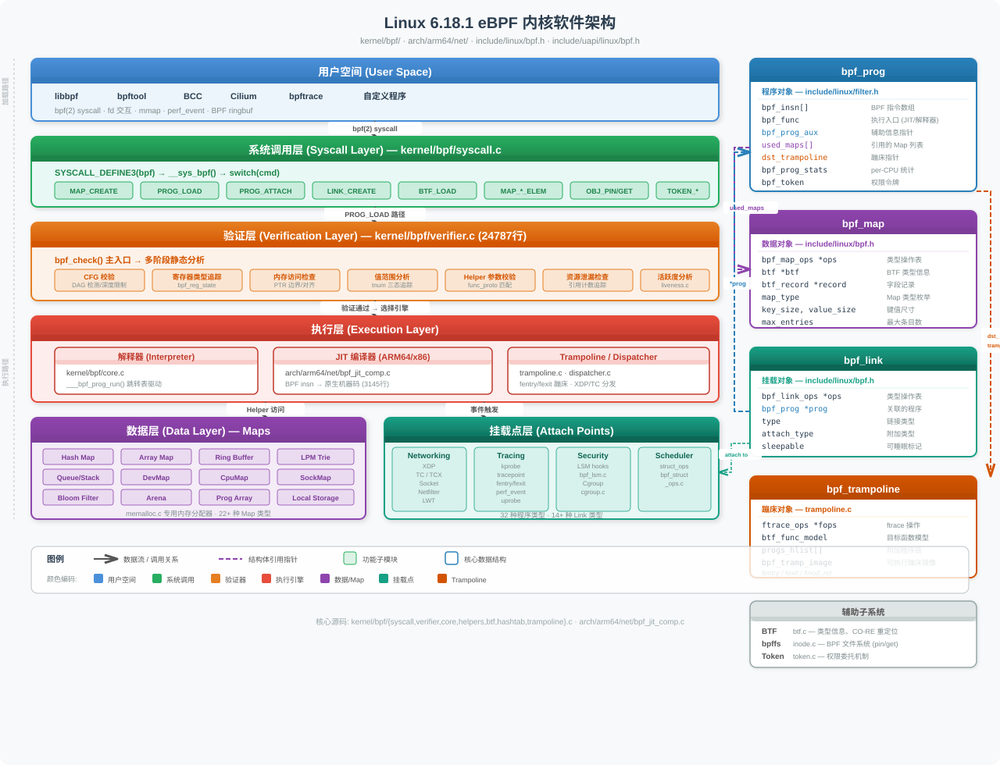
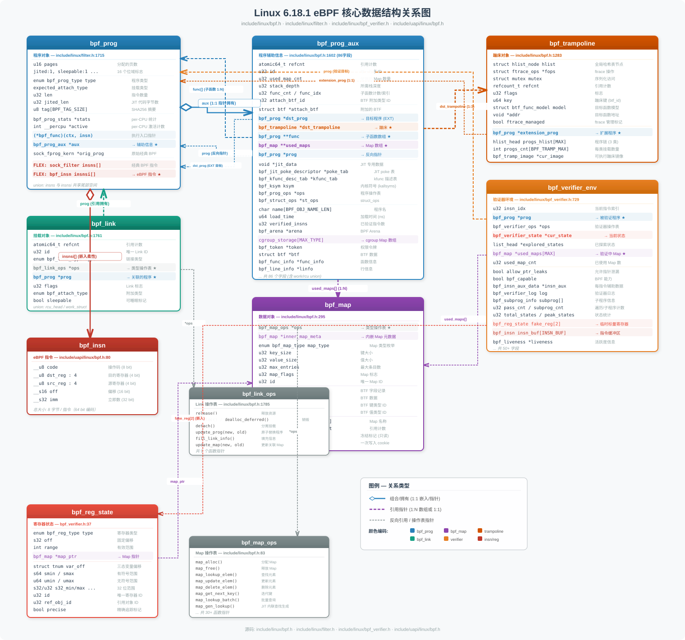
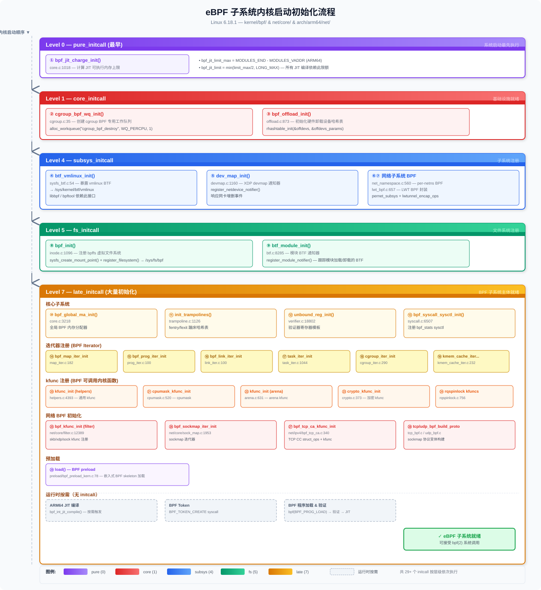

源码位置: kernel/bpf/Kconfig
| 配置项 | 类型 | 默认值 | 说明 |
|---|---|---|---|
CONFIG_BPF |
bool (自动选中) | — | BPF 核心解释器，被 BPF_SYSCALL 自动选中，经典 socket filter 也依赖此项 |
CONFIG_BPF_SYSCALL |
bool | n | 主开关 — 启用 bpf() 系统调用，允许通过 fd 操控 BPF 程序和 Map |
CONFIG_BPF 被选中时自动关联:
config BPF
bool
select CRYPTO_LIB_SHA256CONFIG_BPF_SYSCALL 的依赖链:
config BPF_SYSCALL
bool "Enable bpf() system call"
select BPF
select IRQ_WORK
select NEED_TASKS_RCU
select TASKS_TRACE_RCU
select BINARY_PRINTF
select NET_SOCK_MSG if NET
select NET_XGRESS if NET
select PAGE_POOL if NET| 配置项 | 依赖 | 说明 | ||
|---|---|---|---|---|
CONFIG_HAVE_CBPF_JIT |
arch 提供 | 架构声明支持经典 BPF JIT | ||
CONFIG_HAVE_EBPF_JIT |
arch 提供 | 架构声明支持 eBPF JIT（ARM64 启用此项） | ||
CONFIG_BPF_JIT |
BPF + (HAVE_CBPF_JIT \ |
\ | HAVE_EBPF_JIT) |
启用 BPF JIT 编译器，将 BPF 字节码编译为原生机器码 |
CONFIG_BPF_JIT_ALWAYS_ON |
BPF_SYSCALL + HAVE_EBPF_JIT + BPF_JIT |
永久启用 JIT，移除解释器，防止 Spectre 类推测执行攻击 | ||
CONFIG_BPF_JIT_DEFAULT_ON |
HAVE_EBPF_JIT + BPF_JIT |
当 ARCH_WANT_DEFAULT_BPF_JIT 或 BPF_JIT_ALWAYS_ON 时默认开启 |
当 BPF_JIT_ALWAYS_ON=y 时，/proc/sys/net/core/bpf_jit_enable 锁定为 1，kernel/bpf/core.c 中 ___bpf_prog_run() 解释器代码被条件编译排除:
/* kernel/bpf/core.c */
#ifndef CONFIG_BPF_JIT_ALWAYS_ON
static u64 ___bpf_prog_run(u64 *regs, const struct bpf_insn *insn)
{
// 解释器实现 ...
}
#endif| 配置项 | 默认值 | 说明 |
|---|---|---|
CONFIG_BPF_UNPRIV_DEFAULT_OFF |
y | 默认禁止非特权用户使用 BPF（设置 unprivileged_bpf_disabled=2） |
CONFIG_BPF_LSM |
n | 启用 BPF LSM（Linux Security Module）钩子插桩，依赖 BPF_EVENTS + SECURITY + BPF_JIT |
BPF_LSM 允许通过 BPF 程序实现动态 MAC（强制访问控制）和审计策略。
| sysctl 路径 | 取值 | 说明 |
|---|---|---|
/proc/sys/net/core/bpf_jit_enable |
0/1/2 | 0=禁用JIT，1=启用JIT，2=启用JIT并输出调试汇编 |
/proc/sys/net/core/bpf_jit_harden |
0/1/2 | 常量致盲（constant blinding）防侧信道攻击 |
/proc/sys/net/core/bpf_jit_kallsyms |
0/1 | 将 JIT 镜像导出到 kallsyms（perf 可见） |
/proc/sys/kernel/unprivileged_bpf_disabled |
0/1/2 | 0=允许非特权，1=永久禁止，2=禁止但可切回0 |
源码中 sysctl 变量定义:
/* kernel/bpf/syscall.c */
int sysctl_unprivileged_bpf_disabled __read_mostly =
IS_BUILTIN(CONFIG_BPF_UNPRIV_DEFAULT_OFF) ? 2 : 0;CONFIG_BPF_SYSCALL ──select──> CONFIG_BPF ──select──> CRYPTO_LIB_SHA256
│
├──select──> IRQ_WORK, TASKS_TRACE_RCU, BINARY_PRINTF
│
├──depends──> CONFIG_BPF_JIT (需架构支持)
│ │
│ └──depends──> CONFIG_BPF_JIT_ALWAYS_ON
│
├──depends──> CONFIG_BPF_UNPRIV_DEFAULT_OFF
│
└──depends──> CONFIG_BPF_LSM (+ SECURITY + BPF_EVENTS + BPF_JIT)源码位置:include/uapi/linux/bpf.h,include/uapi/linux/bpf_common.h
eBPF 采用固定宽度 64 位指令编码，每条指令 8 字节:
/* include/uapi/linux/bpf.h */
struct bpf_insn {
__u8 code; /* 操作码 */
__u8 dst_reg:4; /* 目标寄存器 */
__u8 src_reg:4; /* 源寄存器 */
__s16 off; /* 有符号偏移 */
__s32 imm; /* 有符号立即数 */
};指令类别 (Instruction Classes):
| 编码 | 类别 | 说明 |
|---|---|---|
BPF_ALU (0x04) |
32位ALU运算 | add, sub, mul, and, or, xor, lsh, rsh, neg, mod, xor |
BPF_ALU64 (0x07) |
64位ALU运算 | 同上，操作 64 位寄存器 |
BPF_JMP (0x05) |
64位跳转 | jeq, jne, jgt, jge, jlt, jle, call, exit |
BPF_JMP32 (0x06) |
32位跳转 | 同上，比较 32 位值 |
BPF_LD (0x00) |
加载 | 特殊加载（64位立即数, 包头数据） |
BPF_LDX (0x01) |
通用加载 | 从内存加载到寄存器 |
BPF_ST (0x02) |
立即数存储 | 立即数写入内存 |
BPF_STX (0x03) |
寄存器存储 | 寄存器写入内存 |
原子操作扩展:
#define BPF_ATOMIC 0xc0 /* 原子内存操作 - 操作类型在 imm 字段 */
#define BPF_XCHG (0xe0 | BPF_FETCH) /* 原子交换 */
#define BPF_CMPXCHG (0xf0 | BPF_FETCH) /* 原子比较交换 */
#define BPF_LOAD_ACQ 0x100 /* load-acquire */
#define BPF_STORE_REL 0x110 /* store-release */源码位置:include/uapi/linux/bpf.h,kernel/bpf/core.c
eBPF 虚拟机具有 11 个 64 位通用寄存器 + 1 个隐藏辅助寄存器:
| 寄存器 | 别名 | 用途 |
|---|---|---|
| R0 | — | 返回值寄存器（函数返回值 / 程序退出码） |
| R1 | ARG1 / CTX | 第1参数 / 上下文指针（程序入口时指向 bpf_context） |
| R2 | ARG2 | 第2参数 |
| R3 | ARG3 | 第3参数 |
| R4 | ARG4 | 第4参数 |
| R5 | ARG5 | 第5参数 |
| R6-R9 | — | 被调用者保存（callee-saved），跨函数调用保持 |
| R10 | FP | 帧指针（只读），指向 512 字节栈帧 |
| AX | BPF_REG_AX | 内核内部辅助寄存器，用于常量致盲等 |
/* kernel/bpf/core.c */
#define BPF_R0 regs[BPF_REG_0]
#define DST regs[insn->dst_reg]
#define SRC regs[insn->src_reg]
#define FP regs[BPF_REG_FP]
#define AX regs[BPF_REG_AX]
#define IMM insn->imm
/* include/linux/filter.h */
#define MAX_BPF_STACK 512 /* BPF 程序最大可用栈空间 */源码位置:kernel/bpf/syscall.c—bpf_prog_load()(L2859)
用户态通过 bpf(BPF_PROG_LOAD, ...) 系统调用加载 eBPF 程序，完整流程:
用户空间 bpf(BPF_PROG_LOAD, attr, size)
│
▼
SYSCALL_DEFINE3(bpf) ──> __sys_bpf(BPF_PROG_LOAD)
│
▼ ① 参数校验
bpf_check_uarg_tail_zero() // 未知字段须为零（前向兼容）
copy_from_bpfptr(&attr) // 从用户空间拷贝 bpf_attr
security_bpf(cmd, &attr) // LSM 安全检查
│
▼ ② 权限检查
bpf_token_capable(CAP_BPF) // Token / Capability 权限
sysctl_unprivileged_bpf_disabled // 非特权检查
│
▼ ③ 分配程序对象
bpf_prog_alloc(size, GFP_USER) // vmalloc 分配 bpf_prog + insns
kzalloc(bpf_prog_aux) // 分配辅助结构
alloc_percpu(int) // per-CPU 活跃计数器
│
▼ ④ 拷贝用户程序
copy_from_bpfptr(prog->insns) // 拷贝 BPF 指令
strncpy_from_bpfptr(license) // 拷贝许可证字符串
license_is_gpl_compatible() // GPL 兼容性检查
│
▼ ⑤ 验证器校验
bpf_check(&prog, attr, uattr) // ★ 核心验证（24787行代码）
│
▼ ⑥ 运行时选择（JIT / 解释器）
bpf_prog_select_runtime(prog)
├── bpf_int_jit_compile() // 尝试 JIT 编译
└── bpf_prog_lock_ro() // 设置代码页只读
│
▼ ⑦ 注册到系统
bpf_prog_alloc_id(prog) // 分配全局唯一 ID
bpf_prog_new_fd(prog) // 创建 fd 返回用户空间源码位置: kernel/bpf/verifier.c — 24787 行，eBPF 子系统最大的单文件
验证器是 eBPF 安全性的核心保障，它在程序加载时进行静态代码分析:
两遍扫描策略:
第一遍: 深度优先搜索 (DFS) — 检查程序是 DAG（有向无环图）
- 拒绝超过 BPF_MAXINSNS 条指令的程序
- 检测循环（通过后向边检测）
- 拒绝不可达指令
- 检查跳转目标是否越界
第二遍: 全路径模拟执行 — 从第1条指令遍历所有可能路径
- 分析路径长度限制为 64k 指令
- 分支数量限制为 1k
- 逐指令更新寄存器/栈类型状态寄存器类型追踪系统:
/* include/linux/bpf_verifier.h */
struct bpf_reg_state {
enum bpf_reg_type type; /* 寄存器类型 */
s32 off; /* 指针固定偏移 */
/* 标量值范围追踪 */
struct tnum var_off; /* 已知位值追踪 */
s64 smin_value, smax_value; /* 有符号 64 位范围 */
u64 umin_value, umax_value; /* 无符号 64 位范围 */
s32 s32_min_value, s32_max_value; /* 有符号 32 位范围 */
u32 u32_min_value, u32_max_value; /* 无符号 32 位范围 */
u32 id; /* 指针身份标识 */
u32 ref_obj_id; /* 引用计数对象 ID */
u32 frameno; /* 栈帧编号 */
};关键寄存器类型:
| 类型 | 含义 |
|---|---|
SCALAR_VALUE |
普通标量值，非有效指针 |
PTR_TO_CTX |
指向 BPF 程序上下文 |
PTR_TO_MAP_VALUE |
指向 Map 元素值 |
PTR_TO_MAP_VALUE_OR_NULL |
Map 查找返回值，可能为 NULL |
PTR_TO_STACK |
指向栈帧中的某位置 |
PTR_TO_PACKET |
指向网络数据包 |
PTR_TO_SOCKET |
指向 socket 对象 |
PTR_TO_BTF_ID |
指向内核 BTF 类型的对象 |
Helper 函数参数约束验证 (以 bpf_map_lookup_elem 为例):
/* kernel/bpf/helpers.c */
const struct bpf_func_proto bpf_map_lookup_elem_proto = {
.func = bpf_map_lookup_elem,
.gpl_only = false,
.ret_type = RET_PTR_TO_MAP_VALUE_OR_NULL, // 返回可能为NULL的Map值指针
.arg1_type = ARG_CONST_MAP_PTR, // 第1参数: 常量Map指针
.arg2_type = ARG_PTR_TO_MAP_KEY, // 第2参数: 指向Map Key的栈指针
};源码位置:kernel/bpf/core.c—___bpf_prog_run()(L1708)
当 JIT 不可用时，eBPF 使用高性能跳转表解释器 (computed goto):
static u64 ___bpf_prog_run(u64 *regs, const struct bpf_insn *insn)
{
/* 256 项跳转表 — 以 opcode 为索引直接跳转 */
static const void * const jumptable[256] = {
[0 ... 255] = &&default_label,
BPF_INSN_MAP(BPF_INSN_2_LBL, BPF_INSN_3_LBL),
[BPF_JMP | BPF_TAIL_CALL] = &&JMP_TAIL_CALL,
[BPF_ST | BPF_NOSPEC] = &&ST_NOSPEC, // Spectre 缓解
// ... probe_mem 等内部指令
};
select_insn:
goto *jumptable[insn->code]; /* 直接跳转，无 switch 开销 */
/* ALU 运算宏展开 */
ALU(ADD, +) ALU(SUB, -) ALU(AND, &)
ALU(OR, |) ALU(XOR, ^) ALU(MUL, *)
SHT(LSH, <<) SHT(RSH, >>)
/* 每条指令执行后 CONT 跳回 select_insn */
#define CONT ({ insn++; goto select_insn; })执行入口调用链:
/* include/linux/filter.h */
static __always_inline u32 __bpf_prog_run(const struct bpf_prog *prog,
const void *ctx,
bpf_dispatcher_fn dfunc)
{
ret = dfunc(ctx, prog->insnsi, prog->bpf_func);
// prog->bpf_func 指向 JIT 代码或解释器入口
}
static __always_inline u32 bpf_prog_run(const struct bpf_prog *prog,
const void *ctx)
{
return __bpf_prog_run(prog, ctx, bpf_dispatcher_nop_func);
}源码位置: arch/arm64/net/bpf_jit_comp.c — 3145 行
ARM64 JIT 将 eBPF 字节码一对一翻译为 AArch64 机器指令。
BPF → ARM64 寄存器映射:
/* arch/arm64/net/bpf_jit_comp.c */
static const int bpf2a64[] = {
[BPF_REG_0] = A64_R(7), /* 返回值 */
[BPF_REG_1] = A64_R(0), /* 参数1 (ARM64 调用约定第1参数) */
[BPF_REG_2] = A64_R(1), /* 参数2 */
[BPF_REG_3] = A64_R(2), /* 参数3 */
[BPF_REG_4] = A64_R(3), /* 参数4 */
[BPF_REG_5] = A64_R(4), /* 参数5 */
[BPF_REG_6] = A64_R(19), /* callee-saved */
[BPF_REG_7] = A64_R(20), /* callee-saved */
[BPF_REG_8] = A64_R(21), /* callee-saved */
[BPF_REG_9] = A64_R(22), /* callee-saved */
[BPF_REG_FP] = A64_R(25), /* 帧指针 */
[TMP_REG_1] = A64_R(10), /* JIT 临时寄存器 */
[TMP_REG_2] = A64_R(11),
[TMP_REG_3] = A64_R(12),
[TCCNT_PTR] = A64_R(26), /* 尾调用计数指针 */
[BPF_REG_AX] = A64_R(9), /* 常量致盲辅助寄存器 */
[PRIVATE_SP] = A64_R(27), /* 私有栈指针 */
[ARENA_VM_START] = A64_R(28), /* Arena VM 起始地址 */
};JIT 编译上下文:
struct jit_ctx {
const struct bpf_prog *prog;
int idx; /* 当前指令索引 */
int epilogue_offset; /* 尾声代码偏移 */
int *offset; /* BPF insn → ARM64 insn 偏移映射 */
int exentry_idx; /* 异常表项索引 */
__le32 *image; /* 输出机器码镜像（可执行） */
__le32 *ro_image; /* 只读镜像 */
u32 stack_size; /* 栈帧大小 */
u64 arena_vm_start; /* Arena VM 起始 */
bool fp_used; /* 是否使用帧指针 */
bool write; /* 是否写入 image */
};JIT 编译选择流程 (kernel/bpf/core.c):
struct bpf_prog *bpf_prog_select_runtime(struct bpf_prog *fp, int *err)
{
bool jit_needed = false;
if (IS_ENABLED(CONFIG_BPF_JIT_ALWAYS_ON) ||
bpf_prog_has_kfunc_call(fp))
jit_needed = true;
if (!bpf_prog_select_interpreter(fp))
jit_needed = true;
// 调用架构相关 JIT 编译
fp = bpf_int_jit_compile(fp);
if (!fp->jited && jit_needed) {
*err = -ENOTSUPP; // JIT 必需但编译失败
return fp;
}
// 设置代码页只读保护
*err = bpf_prog_lock_ro(fp);
// 尾调用兼容性检查
*err = bpf_check_tail_call(fp);
return fp;
}源码位置: kernel/bpf/helpers.c — 4442 行
Helper 函数是 eBPF 程序调用内核功能的唯一合法途径。每个 Helper 通过 bpf_func_proto 声明其类型签名:
/* 调用宏 — 自动处理寄存器到 C 参数的转换 */
BPF_CALL_2(bpf_map_lookup_elem, struct bpf_map *, map, void *, key)
{
WARN_ON_ONCE(!rcu_read_lock_held() && !rcu_read_lock_trace_held());
return (unsigned long) map->ops->map_lookup_elem(map, key);
}
/* 类型原型 — 验证器用此约束参数类型 */
const struct bpf_func_proto bpf_map_lookup_elem_proto = {
.func = bpf_map_lookup_elem,
.gpl_only = false,
.pkt_access = true,
.ret_type = RET_PTR_TO_MAP_VALUE_OR_NULL,
.arg1_type = ARG_CONST_MAP_PTR,
.arg2_type = ARG_PTR_TO_MAP_KEY,
};核心 Helper 分类:
| 类别 | 典型 Helper | 说明 |
|---|---|---|
| Map 操作 | bpf_map_lookup_elem, bpf_map_update_elem, bpf_map_delete_elem |
增删改查 Map |
| 时间 | bpf_ktime_get_ns, bpf_jiffies64 |
获取内核时间 |
| 输出 | bpf_trace_printk, bpf_ringbuf_output |
调试打印、事件输出 |
| 随机数 | bpf_get_prandom_u32 |
伪随机数 |
| 进程信息 | bpf_get_current_pid_tgid, bpf_get_current_uid_gid, bpf_get_current_comm |
当前进程属性 |
| 尾调用 | bpf_tail_call |
跳转到另一个 BPF 程序 |
| 包操作 | bpf_skb_load_bytes, bpf_xdp_adjust_head |
网络包读写 |
| Socket | bpf_sk_lookup_tcp, bpf_sk_release |
Socket 查找 |
源码位置:kernel/bpf/hashtab.c,kernel/bpf/arraymap.c,kernel/bpf/ringbuf.c等
Map 是 eBPF 的核心数据共享机制，支持程序间、程序与用户空间之间的数据交换。
Map 通用抽象 (include/linux/bpf.h):
struct bpf_map {
const struct bpf_map_ops *ops; /* 类型特定操作函数表 */
enum bpf_map_type map_type; /* Map 类型 */
u32 key_size; /* Key 大小 */
u32 value_size; /* Value 大小 */
u32 max_entries; /* 最大条目数 */
u32 map_flags; /* 创建标志 */
u32 id; /* 全局唯一 ID */
struct btf *btf; /* BTF 类型信息 */
struct btf_record *record; /* BTF 字段记录 */
char name[BPF_OBJ_NAME_LEN]; /* 名称 */
atomic64_t refcnt; /* 引用计数 */
bool frozen; /* 冻结标志 */
};Map 操作函数表 (struct bpf_map_ops):
struct bpf_map_ops {
/* 用户空间接口 (syscall) */
struct bpf_map *(*map_alloc)(union bpf_attr *attr);
void (*map_free)(struct bpf_map *map);
int (*map_get_next_key)(struct bpf_map *map, void *key, void *next_key);
/* 用户空间 + eBPF 程序共用 */
void *(*map_lookup_elem)(struct bpf_map *map, void *key);
long (*map_update_elem)(struct bpf_map *map, void *key, void *value, u64 flags);
long (*map_delete_elem)(struct bpf_map *map, void *key);
/* 批量操作 */
int (*map_lookup_batch)(...);
int (*map_update_batch)(...);
int (*map_delete_batch)(...);
/* 内存统计 */
u64 (*map_mem_usage)(const struct bpf_map *map);
};Hash Map 内部结构 (kernel/bpf/hashtab.c):
struct bucket {
struct hlist_nulls_head head; /* 哈希桶链表 */
rqspinlock_t raw_lock; /* 原子上下文安全自旋锁 */
};
struct bpf_htab {
struct bpf_map map;
struct bpf_mem_alloc ma; /* 专用内存分配器 */
struct bucket *buckets; /* 哈希桶数组 */
void *elems; /* 预分配元素池 */
union {
struct pcpu_freelist freelist; /* 预分配空闲链表 */
struct bpf_lru lru; /* LRU 淘汰策略 */
};
};Ring Buffer 结构 (kernel/bpf/ringbuf.c):
struct bpf_ringbuf {
wait_queue_head_t waitq; /* 等待队列 */
struct irq_work work; /* IRQ 工作项 */
u64 mask; /* 环形掩码 */
struct page **pages; /* 页面数组 */
rqspinlock_t spinlock; /* 生产者锁 */
atomic_t busy; /* 用户态 ringbuf 忙标志 */
unsigned long consumer_pos __aligned(PAGE_SIZE); /* 消费者位置（独占页） */
unsigned long producer_pos __aligned(PAGE_SIZE); /* 生产者位置（独占页） */
unsigned long pending_pos;
char data[] __aligned(PAGE_SIZE); /* 数据环形缓冲区 */
};源码位置: kernel/bpf/btf.c — 9579 行
BTF (BPF Type Format) 是 eBPF 的元数据格式，描述 BPF 程序/Map 的 C 数据类型:
.BTF 段struct btf_type 描述每个 C 类型（int, struct, union, enum, func...）btf_type 通过 type_id 隐式标识（按顺序从1开始编号）vmlinux BTF — 内核自身的完整类型信息源码位置: kernel/bpf/trampoline.c
BPF Trampoline 是 fentry/fexit/fmod_ret 的底层实现机制，利用 ftrace 动态修改内核函数入口:
struct bpf_trampoline {
struct hlist_node hlist; /* 全局哈希表节点 */
struct ftrace_ops *fops; /* ftrace 操作 */
struct mutex mutex; /* 序列化访问 */
refcount_t refcnt;
u64 key; /* 目标函数标识 */
struct {
struct btf_func_model model; /* 函数签名模型 */
void *addr; /* 目标函数地址 */
bool ftrace_managed; /* 是否通过 ftrace 管理 */
} func;
struct bpf_prog *extension_prog; /* EXT 程序（函数替换） */
struct hlist_head progs_hlist[BPF_TRAMP_MAX]; /* 附加的程序链 */
int progs_cnt[BPF_TRAMP_MAX]; /* 每种类型的程序计数 */
struct bpf_tramp_image *cur_image; /* 当前蹦床可执行镜像 */
};全局蹦床哈希表 (1024 桶):
#define TRAMPOLINE_HASH_BITS 10
#define TRAMPOLINE_TABLE_SIZE (1 << TRAMPOLINE_HASH_BITS) /* 1024 */
static struct hlist_head trampoline_table[TRAMPOLINE_TABLE_SIZE];
┌─────────────────────────────────────────────────────────────────────┐
│ 用户空间 (User Space) │
│ libbpf / bpftool / BCC / cilium / 自定义程序 │
│ ─── bpf() syscall ── fd 交互 ── mmap ── perf_event ─────────── │
└────────────────────────────────┬────────────────────────────────────┘
│ bpf(2) 系统调用
┌────────────────────────────────▼────────────────────────────────────┐
│ 系统调用层 (Syscall Layer) │
│ kernel/bpf/syscall.c │
│ SYSCALL_DEFINE3(bpf) → __sys_bpf() → switch(cmd) 分发 │
│ ┌──────────┬──────────┬───────────┬──────────┬──────────────┐ │
│ │MAP_CREATE│PROG_LOAD │ OBJ_PIN │LINK_CREATE│ BTF_LOAD │ │
│ │MAP_*_ELEM│PROG_ATTACH│ OBJ_GET │LINK_UPDATE│ ITER_CREATE │ │
│ └──────────┴──────────┴───────────┴──────────┴──────────────┘ │
└────────────────────────────────┬────────────────────────────────────┘
│
┌────────────────────────────────▼────────────────────────────────────┐
│ 验证层 (Verification Layer) │
│ kernel/bpf/verifier.c (24787 行) │
│ ┌────────────────────────────────────────────────────────┐ │
│ │ CFG 校验 → 寄存器类型追踪 → 内存访问检查 → 资源泄漏检查 │ │
│ │ Helper 参数验证 → 指针算术校验 → 值范围分析 (tnum) │ │
│ └────────────────────────────────────────────────────────┘ │
│ kernel/bpf/liveness.c (活跃度分析) │
│ kernel/bpf/log.c (验证日志) │
│ kernel/bpf/tnum.c (数值三态追踪) │
└────────────────────────────────┬────────────────────────────────────┘
│
┌────────────────────────────────▼────────────────────────────────────┐
│ 执行层 (Execution Layer) │
│ ┌───────────────────┐ ┌──────────────────────────────────┐ │
│ │ 解释器 │ │ JIT 编译器 │ │
│ │ kernel/bpf/core.c│ │ arch/arm64/net/bpf_jit_comp.c │ │
│ │ ___bpf_prog_run()│ │ arch/x86/net/bpf_jit_comp.c │ │
│ │ 跳转表驱动 │ │ BPF insn → 原生机器码 │ │
│ └───────────────────┘ └──────────────────────────────────┘ │
│ │
│ kernel/bpf/trampoline.c — fentry/fexit 蹦床 │
│ kernel/bpf/dispatcher.c — XDP/TC 高速分发器 │
└────────────────────────────────┬────────────────────────────────────┘
│
┌────────────────────────────────▼────────────────────────────────────┐
│ 数据层 (Data Layer) │
│ ┌──────────┬──────────┬──────────┬──────────┬───────────────┐ │
│ │ Hash Map │Array Map │ Ring Buf │ LPM Trie │ Bloom Filter │ │
│ │hashtab.c │arraymap.c│ringbuf.c │lpm_trie.c│bloom_filter.c │ │
│ └──────────┴──────────┴──────────┴──────────┴───────────────┘ │
│ ┌──────────┬──────────┬──────────┬──────────┬───────────────┐ │
│ │Queue/Stack│DevMap │ CpuMap │ SockMap │ Arena │ │
│ │queue_stack│devmap.c │cpumap.c │(net/) │ arena.c │ │
│ └──────────┴──────────┴──────────┴──────────┴───────────────┘ │
│ kernel/bpf/memalloc.c — 专用内存分配器 │
│ kernel/bpf/local_storage.c — 本地存储 │
└────────────────────────────────┬────────────────────────────────────┘
│
┌────────────────────────────────▼────────────────────────────────────┐
│ 挂载点层 (Attach Points) │
│ ┌─────────────┬──────────────┬───────────────┬─────────────┐ │
│ │ Networking │ Tracing │ Security │ Scheduler │ │
│ │ XDP, TC, SK │ kprobe, tp │ LSM hooks │ struct_ops │ │
│ │ socket, lwt │ fentry/fexit │ bpf_lsm.c │ │ │
│ │ netfilter │ perf_event │ │ │ │
│ └─────────────┴──────────────┴───────────────┴─────────────┘ │
│ kernel/bpf/cgroup.c — cgroup BPF 程序管理 │
│ kernel/bpf/tcx.c — TC express 路径 │
│ kernel/bpf/bpf_lsm.c — LSM 安全钩子 │
│ kernel/bpf/bpf_struct_ops.c — struct_ops（调度器等） │
└─────────────────────────────────────────────────────────────────────┘
bpf_prog (程序对象)
│
├── bpf_insn[] BPF 指令数组
├── bpf_func 执行入口 (JIT 代码或解释器)
├── bpf_prog_aux ─────── 辅助信息
│ ├── bpf_map *used_maps[] 引用的 Map 列表
│ ├── btf *attach_btf 附加的 BTF 信息
│ ├── bpf_trampoline *dst_trampoline 蹦床
│ ├── bpf_prog **func 子函数数组 (BPF-to-BPF call)
│ ├── bpf_ksym ksym 内核符号 (kallsyms 可见)
│ ├── bpf_token *token 权限令牌
│ └── jit_data 架构相关 JIT 数据
│
└── bpf_prog_stats per-CPU 统计 (计数/耗时/miss)
bpf_map (数据对象)
│
├── bpf_map_ops *ops 类型特定操作表
├── btf *btf 类型信息
├── btf_record *record BTF 字段记录 (spin_lock, timer, kptr...)
└── map_type, key_size, value_size, max_entries 元信息
bpf_link (挂载对象)
│
├── bpf_link_ops *ops 类型特定操作表
├── bpf_prog *prog 关联的程序
├── type 链接类型
└── attach_type 附加类型
bpf_trampoline (蹦床)
│
├── ftrace_ops *fops ftrace 操作
├── btf_func_model 目标函数模型
├── progs_hlist[] 附加程序链 (fentry/fexit/fmod_ret)
└── bpf_tramp_image 可执行蹦床镜像核心框架 (kernel/bpf/):
| 文件 | 行数 | 职责 |
|---|---|---|
verifier.c |
24787 | 静态验证器 — 类型检查、安全校验、路径分析 |
btf.c |
9579 | BTF 类型格式解析、校验、CO-RE 重定位 |
syscall.c |
6513 | bpf() 系统调用入口与命令分发 |
helpers.c |
4442 | 通用 Helper 函数实现 |
core.c |
3318 | 解释器引擎、程序分配、运行时选择 |
hashtab.c |
2631 | Hash / Percpu-Hash / LRU-Hash Map |
trampoline.c |
— | fentry/fexit/fmod_ret 蹦床管理 |
dispatcher.c |
— | XDP/TC 程序高速分发器 |
ringbuf.c |
— | Ring Buffer Map |
arraymap.c |
— | Array / Percpu-Array / Prog-Array Map |
lpm_trie.c |
— | 最长前缀匹配 Trie Map |
bloom_filter.c |
— | Bloom Filter Map |
queue_stack_maps.c |
— | Queue / Stack Map |
arena.c |
— | Arena Map (64位 MMU 环境) |
memalloc.c |
— | BPF 专用内存分配器 |
rqspinlock.c |
— | 可排队自旋锁 (原子上下文安全) |
token.c |
— | BPF Token 权限委托 |
log.c |
— | 验证器日志输出 |
tnum.c |
— | 三态数值追踪 (tristate number) |
liveness.c |
— | 寄存器活跃度分析 |
disasm.c |
— | BPF 指令反汇编器 |
inode.c |
— | bpffs 文件系统 |
btf_relocate.c |
— | BTF 重定位 |
relo_core.c |
— | CO-RE 重定位核心 |
stream.c |
— | BPF 流式输出 |
迭代器 (kernel/bpf/):
| 文件 | 职责 |
|---|---|
bpf_iter.c |
BPF 迭代器框架 |
task_iter.c |
任务/线程迭代器 |
map_iter.c |
Map 迭代器 |
prog_iter.c |
程序迭代器 |
link_iter.c |
Link 迭代器 |
btf_iter.c |
BTF 迭代器 |
cgroup_iter.c |
Cgroup 迭代器 |
kmem_cache_iter.c |
内核 slab 缓存迭代器 |
dmabuf_iter.c |
DMA-buf 迭代器 |
存储 (kernel/bpf/):
| 文件 | 职责 |
|---|---|
local_storage.c |
通用本地存储框架 |
bpf_local_storage.c |
BPF 本地存储实现 |
bpf_task_storage.c |
Task 本地存储 |
bpf_cgrp_storage.c |
Cgroup 本地存储 |
bpf_inode_storage.c |
Inode 本地存储 (需 BPF_LSM) |
安全与网络 (kernel/bpf/):
| 文件 | 职责 |
|---|---|
bpf_lsm.c |
LSM 安全模块钩子 |
bpf_struct_ops.c |
struct_ops 机制 |
cgroup.c |
Cgroup BPF 程序管理 |
tcx.c |
TC express 路径 |
mprog.c |
多程序管理 |
net_namespace.c |
网络命名空间 BPF |
offload.c |
硬件卸载 |
devmap.c |
设备重定向 Map |
cpumap.c |
CPU 重定向 Map |
crypto.c |
BPF 加密操作 |
JIT 编译器 (架构相关):
| 文件 | 职责 |
|---|---|
arch/arm64/net/bpf_jit_comp.c |
ARM64 JIT (3145行) |
arch/arm64/net/bpf_jit.h |
ARM64 JIT 头文件 |
arch/x86/net/bpf_jit_comp.c |
x86-64 JIT |
UAPI 头文件:
| 文件 | 职责 |
|---|---|
include/uapi/linux/bpf.h |
用户空间 API — 指令编码、枚举、bpf_attr |
include/uapi/linux/bpf_common.h |
经典 BPF 公共定义 |
内核头文件:
| 文件 | 职责 |
|---|---|
include/linux/bpf.h |
核心内部头 — bpf_map, bpf_prog_aux, bpf_link, bpf_trampoline |
include/linux/filter.h |
指令宏、bpf_prog 结构、执行入口 |
include/linux/bpf_verifier.h |
验证器 — bpf_reg_state, bpf_verifier_env |
include/linux/bpf_types.h |
程序类型/Map类型/Link类型注册表 (X-macro) |
include/linux/btf.h |
BTF 内部接口 |
源码位置:include/uapi/linux/bpf.h—enum bpf_prog_type,include/linux/bpf_types.h
Linux 6.18.1 支持 32 种程序类型:
| 程序类型 | 上下文类型 | 挂载点 | 依赖配置 |
|---|---|---|---|
SOCKET_FILTER |
struct __sk_buff |
Socket 过滤 | CONFIG_NET |
KPROBE |
bpf_user_pt_regs_t |
内核探针 | CONFIG_BPF_EVENTS |
TRACEPOINT |
__u64 * |
静态跟踪点 | CONFIG_BPF_EVENTS |
SCHED_CLS / SCHED_ACT |
struct __sk_buff |
TC 流量分类/动作 | CONFIG_NET |
XDP |
struct xdp_md |
网卡驱动收包入口 | CONFIG_NET |
PERF_EVENT |
struct bpf_perf_event_data |
Perf 事件 | CONFIG_BPF_EVENTS |
CGROUP_SKB |
struct __sk_buff |
Cgroup 入/出站 | CONFIG_CGROUP_BPF |
CGROUP_SOCK |
struct bpf_sock |
Cgroup socket 创建 | CONFIG_CGROUP_BPF |
CGROUP_SOCK_ADDR |
struct bpf_sock_addr |
Cgroup 连接地址 | CONFIG_CGROUP_BPF |
CGROUP_DEVICE |
struct bpf_cgroup_dev_ctx |
Cgroup 设备访问 | CONFIG_CGROUP_BPF |
CGROUP_SYSCTL |
struct bpf_sysctl |
Cgroup sysctl 控制 | CONFIG_CGROUP_BPF |
CGROUP_SOCKOPT |
struct bpf_sockopt |
Cgroup socket 选项 | CONFIG_CGROUP_BPF |
LWT_IN/OUT/XMIT/SEG6LOCAL |
struct __sk_buff |
轻量级隧道 | CONFIG_NET |
SOCK_OPS |
struct bpf_sock_ops |
TCP 连接事件 | CONFIG_NET |
SK_SKB / SK_MSG |
struct __sk_buff / struct sk_msg_md |
Socket 数据流 | CONFIG_NET |
RAW_TRACEPOINT |
struct bpf_raw_tracepoint_args |
原始跟踪点 | CONFIG_BPF_EVENTS |
RAW_TRACEPOINT_WRITABLE |
同上 | 可写原始跟踪点 | CONFIG_BPF_EVENTS |
TRACING |
void * |
fentry/fexit/fmod_ret | CONFIG_BPF_EVENTS |
STRUCT_OPS |
void * |
内核 struct ops 替换 | CONFIG_BPF_JIT |
EXT |
void * |
扩展/替换其他 BPF 程序 | CONFIG_BPF_JIT |
LSM |
void * |
LSM 安全钩子 | CONFIG_BPF_LSM |
SK_REUSEPORT |
struct sk_reuseport_md |
Socket 端口复用 | CONFIG_INET |
SK_LOOKUP |
struct bpf_sk_lookup |
Socket 查找 | CONFIG_INET |
FLOW_DISSECTOR |
struct __sk_buff |
流解析 | CONFIG_NET |
LIRC_MODE2 |
__u32 |
红外遥控 | CONFIG_BPF_LIRC_MODE2 |
SYSCALL |
void * |
BPF 程序执行系统调用 | 始终可用 |
NETFILTER |
struct bpf_nf_ctx |
Netfilter 钩子 | CONFIG_NETFILTER_BPF_LINK |
类型注册机制 — X-macro 模式 (include/linux/bpf_types.h):
/* 通过 X-macro 同时注册验证器 ops、程序 ops、上下文映射 */
BPF_PROG_TYPE(BPF_PROG_TYPE_XDP, xdp, struct xdp_md, struct xdp_buff)
// 枚举值 名称 用户上下文类型 内核上下文类型
/* verifier.c 中展开为: */
static const struct bpf_verifier_ops * const bpf_verifier_ops[] = {
[BPF_PROG_TYPE_XDP] = &xdp_verifier_ops,
// ...
};
/* syscall.c 中展开为: */
static const struct bpf_map_ops * const bpf_map_types[] = {
[BPF_MAP_TYPE_HASH] = &htab_map_ops,
// ...
};Linux 6.18.1 支持 22+ 种 Map 类型:
| 类别 | Map 类型 | 实现文件 | 说明 |
|---|---|---|---|
| 通用 | HASH / PERCPU_HASH |
hashtab.c |
哈希表（预分配/按需分配） |
LRU_HASH / LRU_PERCPU_HASH |
hashtab.c |
LRU 淘汰哈希表 | |
ARRAY / PERCPU_ARRAY |
arraymap.c |
定长数组（支持 mmap） | |
LPM_TRIE |
lpm_trie.c |
最长前缀匹配（路由表） | |
BLOOM_FILTER |
bloom_filter.c |
布隆过滤器 | |
QUEUE / STACK |
queue_stack_maps.c |
FIFO 队列 / LIFO 栈 | |
| 事件 | RINGBUF |
ringbuf.c |
高效环形缓冲区（替代 perf buffer） |
USER_RINGBUF |
ringbuf.c |
用户态生产者环形缓冲区 | |
PERF_EVENT_ARRAY |
arraymap.c |
Perf 事件数组 | |
| 嵌套 | ARRAY_OF_MAPS |
map_in_map.c |
Map 中的 Map（数组） |
HASH_OF_MAPS |
map_in_map.c |
Map 中的 Map（哈希） | |
| 程序 | PROG_ARRAY |
arraymap.c |
尾调用程序数组 |
| 网络 | DEVMAP / DEVMAP_HASH |
devmap.c |
XDP 设备重定向 |
CPUMAP |
cpumap.c |
XDP CPU 重定向 | |
XSKMAP |
(net/) | AF_XDP socket | |
SOCKMAP / SOCKHASH |
(net/) | Socket 重定向 | |
REUSEPORT_SOCKARRAY |
reuseport_array.c |
端口复用 | |
| 存储 | SK_STORAGE |
(net/) | Socket 本地存储 |
TASK_STORAGE |
bpf_task_storage.c |
任务本地存储 | |
INODE_STORAGE |
bpf_inode_storage.c |
Inode 本地存储 | |
CGRP_STORAGE |
bpf_cgrp_storage.c |
Cgroup 本地存储 | |
| 特殊 | STRUCT_OPS |
bpf_struct_ops.c |
内核结构体操作 |
ARENA |
arena.c |
内存竞技场（64位） | |
STACK_TRACE |
stackmap.c |
栈跟踪 | |
CGROUP_ARRAY |
arraymap.c |
Cgroup 数组 |
bpf_link 是 eBPF 程序与挂载点之间的生命周期管理对象:
/* include/linux/bpf.h */
struct bpf_link {
atomic64_t refcnt;
u32 id;
enum bpf_link_type type;
const struct bpf_link_ops *ops;
struct bpf_prog *prog; /* 关联的 BPF 程序 */
u32 flags;
enum bpf_attach_type attach_type;
bool sleepable;
};
struct bpf_link_ops {
void (*release)(struct bpf_link *link);
void (*dealloc)(struct bpf_link *link);
void (*dealloc_deferred)(struct bpf_link *link); /* RCU 延迟释放 */
int (*detach)(struct bpf_link *link);
int (*update_prog)(struct bpf_link *link, ...); /* 原子替换程序 */
int (*fill_link_info)(const struct bpf_link *link, ...);
};支持的 Link 类型:
| Link 类型 | 挂载对象 | 依赖 |
|---|---|---|
RAW_TRACEPOINT |
raw_tracepoint | — |
TRACING |
fentry/fexit/fmod_ret | — |
CGROUP |
cgroup | CONFIG_CGROUP_BPF |
ITER |
BPF 迭代器 | — |
NETNS |
网络命名空间 | CONFIG_NET |
XDP |
XDP 程序 | CONFIG_NET |
NETFILTER |
netfilter 钩子 | CONFIG_NET |
TCX |
TC express | CONFIG_NET |
NETKIT |
netkit 设备 | CONFIG_NET |
SOCKMAP |
socket map | CONFIG_NET |
PERF_EVENT |
perf event | CONFIG_PERF_EVENTS |
KPROBE_MULTI |
多 kprobe 批量 | — |
STRUCT_OPS |
struct_ops | — |
UPROBE_MULTI |
多 uprobe 批量 | — |
源码位置: kernel/bpf/Makefile
# 始终编译 — BPF 核心解释器
obj-y := core.o
# CONFIG_BPF_SYSCALL — BPF 子系统主体
obj-$(CONFIG_BPF_SYSCALL) += syscall.o verifier.o inode.o helpers.o tnum.o
log.o token.o liveness.o
obj-$(CONFIG_BPF_SYSCALL) += bpf_iter.o map_iter.o task_iter.o prog_iter.o link_iter.o
obj-$(CONFIG_BPF_SYSCALL) += hashtab.o arraymap.o percpu_freelist.o bpf_lru_list.o
lpm_trie.o map_in_map.o bloom_filter.o
obj-$(CONFIG_BPF_SYSCALL) += local_storage.o queue_stack_maps.o ringbuf.o
obj-$(CONFIG_BPF_SYSCALL) += btf.o memalloc.o rqspinlock.o stream.o
obj-$(CONFIG_BPF_SYSCALL) += disasm.o mprog.o
obj-$(CONFIG_BPF_SYSCALL) += relo_core.o btf_iter.o btf_relocate.o kmem_cache_iter.o
# CONFIG_BPF_JIT — JIT 相关
obj-$(CONFIG_BPF_JIT) += trampoline.o dispatcher.o
# BPF_JIT + BPF_SYSCALL 联合
ifeq ($(CONFIG_BPF_JIT),y)
obj-$(CONFIG_BPF_SYSCALL) += bpf_struct_ops.o cpumask.o
obj-${CONFIG_BPF_LSM} += bpf_lsm.o
endif
# 条件编译 — 按子系统依赖
ifeq ($(CONFIG_NET),y)
obj-$(CONFIG_BPF_SYSCALL) += devmap.o cpumap.o offload.o net_namespace.o tcx.o
endif
ifeq ($(CONFIG_PERF_EVENTS),y)
obj-$(CONFIG_BPF_SYSCALL) += stackmap.o
endif
ifeq ($(CONFIG_CGROUPS),y)
obj-$(CONFIG_BPF_SYSCALL) += cgroup_iter.o bpf_cgrp_storage.o
endif
ifeq ($(CONFIG_MMU)$(CONFIG_64BIT),yy)
obj-$(CONFIG_BPF_SYSCALL) += arena.o range_tree.o # Arena 仅 64 位 + MMU
endif
ifeq ($(CONFIG_DMA_SHARED_BUFFER),y)
obj-$(CONFIG_BPF_SYSCALL) += dmabuf_iter.o
endif
# Ftrace 排除 — 防止 BPF 关键路径被 ftrace 拦截导致死锁
CFLAGS_REMOVE_percpu_freelist.o = $(CC_FLAGS_FTRACE)
CFLAGS_REMOVE_bpf_lru_list.o = $(CC_FLAGS_FTRACE)
CFLAGS_REMOVE_queue_stack_maps.o = $(CC_FLAGS_FTRACE)
CFLAGS_REMOVE_lpm_trie.o = $(CC_FLAGS_FTRACE)
CFLAGS_REMOVE_ringbuf.o = $(CC_FLAGS_FTRACE)
CFLAGS_REMOVE_rqspinlock.o = $(CC_FLAGS_FTRACE)关键编译注意事项:
core.o 始终编入内核（obj-y），因为经典 socket filter 依赖它BPF_JIT_ALWAYS_ON=y 且为 x86 + GCC 时，禁用 core.o 的 GCSE 优化（避免解释器跳转表问题）CFLAGS_REMOVE_* 排除 ftrace 插桩，防止 BPF 程序挂载在 ftrace 钩子时发生递归死锁
eBPF 子系统的初始化并非集中在一个函数中完成，而是通过 Linux 内核的 initcall 机制 分散在多个层级（level）中，按严格的启动顺序依次执行。理解这个流程对于调试 "BPF 功能不可用" 类问题至关重要。
initcall 执行顺序: pure(0) → core(1) → postcore(2) → arch(3) → subsys(4) → fs(5) → device(6) → late(7)
| 层级 | 等级 | BPF 初始化函数数量 | 核心职责 |
|---|---|---|---|
pure_initcall |
0 | 1 | JIT 内存限额计算 |
core_initcall |
1 | 2 | cgroup 工作队列、硬件卸载哈希表 |
subsys_initcall |
4 | 4 | BTF sysfs 暴露、XDP devmap、per-netns、LWT |
fs_initcall |
5 | 2 | bpffs 文件系统、模块 BTF 通知器 |
late_initcall |
7 | 20+ | 内存分配器、蹦床、验证器、迭代器、kfunc、网络 BPF |
最早执行，在所有 initcall 之前。
源码: kernel/bpf/core.c:1018
static int __init bpf_jit_charge_init(void)
{
/* Only used as heuristic here to derive limit. */
bpf_jit_limit_max = bpf_jit_alloc_exec_limit();
bpf_jit_limit = min_t(u64, round_up(bpf_jit_limit_max >> 1,
PAGE_SIZE), LONG_MAX);
return 0;
}
pure_initcall(bpf_jit_charge_init);关键分析:
bpf_jit_alloc_exec_limit() 在 ARM64 上返回 MODULES_END - MODULES_VADDR，即模块可执行区域总大小>> 1），防止 BPF JIT 占满整个模块地址空间源码:kernel/bpf/cgroup.c:35,kernel/bpf/offload.c:873
① cgroup_bpf_wq_init() — cgroup BPF 专用工作队列
static int __init cgroup_bpf_wq_init(void)
{
cgroup_bpf_destroy_wq = alloc_workqueue("cgroup_bpf_destroy",
WQ_PERCPU, 1);
if (!cgroup_bpf_destroy_wq)
panic("Failed to alloc workqueue for cgroup bpf destroy.\n");
return 0;
}
core_initcall(cgroup_bpf_wq_init);WQ_PERCPU 类型的专用工作队列，避免 cgroup BPF 销毁操作占满 system_percpu_wq 导致死锁panic()，说明此组件对系统运行是硬性依赖② bpf_offload_init() — 硬件卸载设备表
static int __init bpf_offload_init(void)
{
return rhashtable_init(&offdevs, &offdevs_params);
}
core_initcall(bpf_offload_init);rhashtable 用于跟踪支持 BPF 硬件卸载的网络设备（如 Netronome SmartNIC）源码:kernel/bpf/sysfs_btf.c:54,kernel/bpf/devmap.c:1160,kernel/bpf/net_namespace.c:560,net/core/lwt_bpf.c:657
③ btf_vmlinux_init() — 暴露内核 BTF 到 sysfs
static int __init btf_vmlinux_init(void)
{
bin_attr_btf_vmlinux.private = __start_BTF;
bin_attr_btf_vmlinux.size = __stop_BTF - __start_BTF;
if (bin_attr_btf_vmlinux.size == 0)
return 0; /* 未编入 BTF 则跳过 */
btf_kobj = kobject_create_and_add("btf", kernel_kobj);
if (!btf_kobj)
return -ENOMEM;
return sysfs_create_bin_file(btf_kobj, &bin_attr_btf_vmlinux);
}
subsys_initcall(btf_vmlinux_init);这是 CO-RE 生态的基石:
start_BTF / stop_BTF 是链接器脚本定义的符号，指向内核 ELF 中嵌入的 .BTF section/sys/kernel/btf/vmlinux 二进制 sysfs 文件，libbpf 和 bpftool 读取此文件获取内核类型信息CONFIG_DEBUG_INFO_BTF=n，BTF section 为空，此函数直接返回④ dev_map_init() — XDP devmap 网络设备通知器
static int __init dev_map_init(void)
{
register_netdevice_notifier(&dev_map_notifier);
return 0;
}
subsys_initcall(dev_map_init);⑤ netns_bpf_init() — per-netns BPF 链接
static int __init netns_bpf_init(void)
{
return register_pernet_subsys(&netns_bpf_pernet_ops);
}
subsys_initcall(netns_bpf_init);BPF_LINK_TYPE_NETNS 在不同网络命名空间挂载 BPF 程序⑥ bpf_lwt_init() — 轻量级隧道 BPF 封装
static int __init bpf_lwt_init(void)
{
return lwtunnel_encap_add_ops(&bpf_encap_ops, LWTUNNEL_ENCAP_BPF);
}
subsys_initcall(bpf_lwt_init);源码:kernel/bpf/inode.c:1096,kernel/bpf/btf.c:8285
⑦ bpf_init() — 注册 bpffs 虚拟文件系统
static int __init bpf_init(void)
{
int ret;
ret = sysfs_create_mount_point(fs_kobj, "bpf");
if (ret)
return ret;
ret = register_filesystem(&bpf_fs_type);
if (ret)
sysfs_remove_mount_point(fs_kobj, "bpf");
return ret;
}
fs_initcall(bpf_init);bpffs 是 BPF 对象持久化的核心机制:
/sys/fs/ 下创建 bpf 挂载点bpf 文件系统类型（bpf_fs_type）mount -t bpf bpf /sys/fs/bpf 挂载后，可以通过 bpf(BPF_OBJ_PIN) 将 map / prog / link 钉在文件路径上⑧ btf_module_init() — 内核模块 BTF 跟踪
static int __init btf_module_init(void)
{
register_module_notifier(&btf_module_nb);
return 0;
}
fs_initcall(btf_module_init);CONFIG_DEBUG_INFO_BTF_MODULES这是 BPF 初始化最密集的层级，包含 20+ 个 initcall，分为四大类：
| 函数 | 源文件 | 行号 | 职责 |
|---|---|---|---|
bpf_global_ma_init() |
kernel/bpf/core.c |
3218 | 全局 BPF 内存分配器 |
init_trampolines() |
kernel/bpf/trampoline.c |
1126 | fentry/fexit 蹦床哈希表 |
unbound_reg_init() |
kernel/bpf/verifier.c |
18802 | 验证器寄存器模板 |
bpf_syscall_sysctl_init() |
kernel/bpf/syscall.c |
6507 | bpf_stats_enabled sysctl |
⑨ bpf_global_ma_init() — BPF 全局内存分配器
static int __init bpf_global_ma_init(void)
{
int ret;
ret = bpf_mem_alloc_init(&bpf_global_ma, 0, false);
bpf_global_ma_set = !ret;
return ret;
}
late_initcall(bpf_global_ma_init);bpf_mem_alloc）kmalloc()bpf_global_ma_set 标志位控制后续是否使用此分配器⑩ init_trampolines() — 蹦床哈希表
static int __init init_trampolines(void)
{
int i;
for (i = 0; i < TRAMPOLINE_TABLE_SIZE; i++)
INIT_HLIST_HEAD(&trampoline_table[i]);
return 0;
}
late_initcall(init_trampolines);TRAMPOLINE_TABLE_SIZE 个哈希桶，用于存储 bpf_trampoline 对象| 函数 | 源文件 | 行号 | 迭代器类型 |
|---|---|---|---|
bpf_map_iter_init() |
map_iter.c |
182 | map / map_elem |
bpf_prog_iter_init() |
prog_iter.c |
100 | BPF prog |
bpf_link_iter_init() |
link_iter.c |
100 | BPF link |
task_iter_init() |
task_iter.c |
1044 | task / task_file / task_vma |
bpf_cgroup_iter_init() |
cgroup_iter.c |
290 | cgroup |
dmabuf_iter_init() |
dmabuf_iter.c |
96 | DMA-buf |
bpf_kmem_cache_iter_init() |
kmem_cache_iter.c |
232 | kmem_cache |
这些迭代器通过 bpf_iter_reg_target() 注册，使 BPF_PROG_TYPE_TRACING 类型的程序可以遍历内核数据结构（如所有已加载的 BPF 程序、所有进程的 VMA 等）。
| 函数 | 源文件 | 行号 | kfunc 类别 |
|---|---|---|---|
kfunc_init() |
helpers.c |
4393 | 通用 kfunc (bpf_rcu_read_lock, bpf_obj_new/drop, bpf_task_acquire...) |
cpumask_kfunc_init() |
cpumask.c |
520 | cpumask 操作 |
kfunc_init() |
arena.c |
631 | arena 内存操作 |
crypto_kfunc_init() |
crypto.c |
373 | 加密操作 |
rqspinlock_register_kfuncs() |
rqspinlock.c |
756 | 可重入自旋锁 |
kfunc 通过 register_btf_kfunc_id_set() 注册到全局 BTF kfunc ID 集合中，验证器在校验 BPF_PSEUDO_KFUNC_CALL 指令时查询此集合。
| 函数 | 源文件 | 行号 | 职责 |
|---|---|---|---|
bpf_kfunc_init() |
net/core/filter.c |
12389 | skb/xdp/sock_addr/sock_ops kfunc |
init_subsystem() |
net/core/filter.c |
12466 | bpf_sock_destroy kfunc |
bpf_sockmap_iter_init() |
net/core/sock_map.c |
1953 | sockmap 迭代器 |
bpf_sk_storage_map_iter_init() |
net/core/bpf_sk_storage.c |
912 | sk_storage 迭代器 |
bpf_tcp_ca_kfunc_init() |
net/ipv4/bpf_tcp_ca.c |
340 | TCP CC struct_ops |
tcp_bpf_v4_build_proto() |
net/ipv4/tcp_bpf.c |
635 | TCP sockmap 协议变体 |
udp_bpf_v4_build_proto() |
net/ipv4/udp_bpf.c |
134 | UDP sockmap 协议变体 |
/* kernel/bpf/preload/bpf_preload_kern.c:78 */
static int __init load(void)
{
// 加载嵌入的 BPF skeleton，用于 bpffs 的内省功能
// 提供 /sys/fs/bpf 目录下的 progs.debug / maps.debug 文件
}
late_initcall(load);以下核心组件没有 initcall，而是在运行时按需触发：
| 组件 | 触发时机 | 说明 |
|---|---|---|
| ARM64 JIT 编译 | bpf(BPF_PROG_LOAD) 系统调用 |
调用 bpf_int_jit_compile()，无独立 __init |
| BPF Token | bpf(BPF_TOKEN_CREATE) 系统调用 |
纯运行时对象，无初始化代码 |
| Verifier 核心 | 首次 BPF_PROG_LOAD |
验证器逻辑在编译时确定，运行时无需额外初始化 |
| BPF syscall 本身 | 内核编译期 | 通过 SYSCALL_DEFINE3(bpf) 静态注册，不依赖 initcall |
ARM64 JIT 关键点:arch/arm64/net/bpf_jit_comp.c中没有任何__init函数或initcall注册。JIT 编译器通过struct bpf_jit_progs的回调指针在加载时被调用。bpf_jit_enablesysctl 默认开启（CONFIG_BPF_JIT_DEFAULT_ON=y）。
内核启动
│
├─ pure_initcall (level 0)
│ └── ① bpf_jit_charge_init() ← core.c:1018 JIT 内存限额
│
├─ core_initcall (level 1)
│ ├── ② cgroup_bpf_wq_init() ← cgroup.c:35 cgroup BPF 工作队列
│ └── ③ bpf_offload_init() ← offload.c:873 HW 卸载哈希表
│
├─ subsys_initcall (level 4)
│ ├── ④ btf_vmlinux_init() ← sysfs_btf.c:54 /sys/kernel/btf/vmlinux
│ ├── ⑤ dev_map_init() ← devmap.c:1160 XDP devmap 通知器
│ ├── ⑥ netns_bpf_init() ← net_namespace.c:560 per-netns BPF
│ └── ⑦ bpf_lwt_init() ← lwt_bpf.c:657 LWT BPF 封装
│
├─ fs_initcall (level 5)
│ ├── ⑧ bpf_init() ← inode.c:1096 bpffs 文件系统 /sys/fs/bpf
│ └── ⑨ btf_module_init() ← btf.c:8285 模块 BTF 通知器
│
├─ late_initcall (level 7)
│ │
│ │ ── 核心子系统 ──
│ ├── ⑩ bpf_global_ma_init() ← core.c:3218 全局内存分配器
│ ├── ⑪ init_trampolines() ← trampoline.c:1126 蹦床哈希表
│ ├── ⑫ unbound_reg_init() ← verifier.c:18802 验证器寄存器模板
│ ├── ⑬ bpf_syscall_sysctl_init() ← syscall.c:6507 bpf_stats sysctl
│ │
│ │ ── 迭代器注册 ──
│ ├── ⑭ bpf_map_iter_init() ← map_iter.c map 迭代器
│ ├── ⑮ bpf_prog_iter_init() ← prog_iter.c prog 迭代器
│ ├── ⑯ bpf_link_iter_init() ← link_iter.c link 迭代器
│ ├── ⑰ task_iter_init() ← task_iter.c task/vma 迭代器
│ ├── ⑱ bpf_cgroup_iter_init() ← cgroup_iter.c cgroup 迭代器
│ ├── ⑲ bpf_kmem_cache_iter_init() ← kmem_cache_iter.c kmem_cache 迭代器
│ │
│ │ ── kfunc 注册 ──
│ ├── ⑳ kfunc_init (helpers) ← helpers.c 通用 kfunc
│ ├── ㉑ cpumask_kfunc_init() ← cpumask.c cpumask kfunc
│ ├── ㉒ kfunc_init (arena) ← arena.c arena kfunc
│ ├── ㉓ crypto_kfunc_init() ← crypto.c 加密 kfunc
│ ├── ㉔ rqspinlock_kfuncs() ← rqspinlock.c 自旋锁 kfunc
│ │
│ │ ── 网络 BPF ──
│ ├── ㉕ bpf_kfunc_init (filter) ← net/core/filter.c 网络 kfunc
│ ├── ㉖ bpf_sockmap_iter_init() ← sock_map.c sockmap 迭代器
│ ├── ㉗ bpf_tcp_ca_kfunc_init() ← bpf_tcp_ca.c TCP CC struct_ops
│ ├── ㉘ tcp/udp_bpf_build_proto() ← tcp_bpf.c/udp_bpf.c sockmap 协议
│ │
│ │ ── 预加载 ──
│ └── ㉙ load() ← preload_kern.c 嵌入式 BPF skeleton
│
└─ eBPF 子系统就绪 ── 可接受 bpf(2) 系统调用关键依赖链:
/sys/kernel/btf/vmlinux 前就绪mount -t bpf 前注册调试技巧: 如果启动后bpftool prog list失败，按以下顺序排查：
1. 检查CONFIG_BPF_SYSCALL=y— 否则bpf(2)系统调用不存在
2. 检查/sys/kernel/btf/vmlinux是否存在 — 否则btf_vmlinux_init()未执行或 BTF 未编入
3. 检查/sys/fs/bpf是否可挂载 — 否则bpf_init()失败
4. 检查dmesg | grep -i bpf— 查看是否有 initcall 报错
┌─────────────┐ ┌──────────────┐ ┌──────────────┐ ┌──────────────┐ ┌──────────────┐
│ 1. 编写 │ │ 2. 编译 │ │ 3. 加载 │ │ 4. 挂载 │ │ 5. 运行 │
│ .bpf.c 源码 │──→│ Clang/LLVM │──→│ bpf(2) 加载 │──→│ attach 到 │──→│ 内核触发 │
│ C 受限子集 │ │ → .bpf.o │ │ → 验证+JIT │ │ 钩子点 │ │ 执行回调 │
└─────────────┘ └──────────────┘ └──────────────┘ └──────────────┘ └──────────────┘
│
┌─────────────┐ ┌──────────────┐ │
│ 7. 销毁 │←──│ 6. 读取结果 │←─────────────────────────────────────────────────┘
│ fd 关闭 │ │ Map / Ring │
│ 引用归零释放 │ │ perf_event │
└─────────────┘ └──────────────┘完整流程分为以下阶段:
.bpf.o）bpf(BPF_PROG_LOAD) 系统调用将字节码提交给内核，经过验证器校验安全性后，由 JIT 编译器转为原生机器码bpf(BPF_LINK_CREATE) 或 bpf(PROG_ATTACH) 将程序附加到 kprobe、tracepoint、XDP、TC 等钩子| 工具 | 用途 | 来源 |
|---|---|---|
| Clang/LLVM (≥ 12) | 将 C 编译为 BPF 字节码（--target=bpf） |
LLVM 项目 |
| libbpf | 用户空间 BPF 程序加载/管理库 | tools/lib/bpf/ |
| bpftool | BPF 对象检查、加载、管理命令行工具 | tools/bpf/bpftool/ |
| pahole | DWARF → BTF 转换 | dwarves 项目 |
| vmlinux.h | 内核所有类型定义的头文件（由 bpftool 从 BTF 生成） | bpftool btf dump file vmlinux format c |
| bpf_helpers.h | BPF Helper 函数声明 | tools/lib/bpf/bpf_helpers.h |
| bpf_tracing.h | 跟踪相关宏（PT_REGS_PARM 等） | tools/lib/bpf/bpf_tracing.h |
| bpf_core_read.h | CO-RE（一次编译，处处运行）宏 | tools/lib/bpf/bpf_core_read.h |
生成 vmlinux.h:
# 从编译好的内核 vmlinux 或运行中内核的 BTF 导出
bpftool btf dump file /sys/kernel/btf/vmlinux format c > vmlinux.h
# 或从自编译的 vmlinux
bpftool btf dump file ./vmlinux format c > vmlinux.h源码示例: samples/bpf/tracex1.bpf.c
eBPF 内核侧程序遵循以下规范:
关键约束:
程序结构模板:
/* minimal.bpf.c — 最小 eBPF 程序模板 */
#include "vmlinux.h" /* 内核所有类型定义 */
#include <bpf/bpf_helpers.h> /* SEC() 宏、Helper 声明 */
#include <bpf/bpf_core_read.h> /* CO-RE 读取宏 */
#include <bpf/bpf_tracing.h> /* PT_REGS_PARM 等跟踪宏 */
/* 定义 Map — 用于内核侧与用户侧数据交换 */
struct {
__uint(type, BPF_MAP_TYPE_HASH);
__uint(max_entries, 1024);
__type(key, u32);
__type(value, u64);
} my_map SEC(".maps");
/* SEC("section_name") 声明程序类型和挂载点
* 常见 section 名:
* kprobe/函数名 — 内核探针
* tracepoint/子系统/事件 — 静态跟踪点
* tp_btf/事件名 — BTF 跟踪点
* fentry/函数名 — 函数入口 (需 BTF)
* fexit/函数名 — 函数出口 (需 BTF)
* xdp — 网卡收包
* tc — 流量控制
* lsm/钩子名 — LSM 安全钩子
* struct_ops/结构体名 — 内核结构体替换
*/
SEC("kprobe/__netif_receive_skb_core")
int bpf_prog1(struct pt_regs *ctx)
{
struct sk_buff *skb;
u32 pid = bpf_get_current_pid_tgid() >> 32;
u64 count = 1;
/* CO-RE 安全读取内核数据结构 */
bpf_core_read(&skb, sizeof(skb), (void *)PT_REGS_PARM1(ctx));
int len = BPF_CORE_READ(skb, len);
/* 更新 Map */
u64 *val = bpf_map_lookup_elem(&my_map, &pid);
if (val)
__sync_fetch_and_add(val, 1);
else
bpf_map_update_elem(&my_map, &pid, &count, BPF_ANY);
return 0;
}
/* 许可证声明 — 必须 GPL 兼容才能使用大部分 Helper */
char LICENSE[] SEC("license") = "GPL";实际内核源码示例 (samples/bpf/tracex1.bpf.c):
#include "vmlinux.h"
#include <bpf/bpf_helpers.h>
#include <bpf/bpf_core_read.h>
#include <bpf/bpf_tracing.h>
SEC("kprobe.multi/__netif_receive_skb_core*")
int bpf_prog1(struct pt_regs *ctx)
{
char devname[IFNAMSIZ];
struct net_device *dev;
struct sk_buff *skb;
int len;
bpf_core_read(&skb, sizeof(skb), (void *)PT_REGS_PARM1(ctx));
dev = BPF_CORE_READ(skb, dev);
len = BPF_CORE_READ(skb, len);
BPF_CORE_READ_STR_INTO(&devname, dev, name);
if (devname[0] == 'l' && devname[1] == 'o') {
char fmt[] = "skb %p len %d\n";
bpf_trace_printk(fmt, sizeof(fmt), skb, len);
}
return 0;
}
char LICENSE[] SEC("license") = "GPL";用户空间程序负责: 加载 .bpf.o → 附加到钩子 → 读取结果。
libbpf API 风格 (samples/bpf/tracex1_user.c):
#include <stdio.h>
#include <bpf/libbpf.h>
int main(int ac, char **argv)
{
struct bpf_link *link = NULL;
struct bpf_program *prog;
struct bpf_object *obj;
char filename[256];
/* 1. 打开 BPF ELF 对象文件 */
snprintf(filename, sizeof(filename), "%s.bpf.o", argv[0]);
obj = bpf_object__open_file(filename, NULL);
if (libbpf_get_error(obj)) {
fprintf(stderr, "ERROR: opening BPF object file failed\n");
return 1;
}
/* 2. 查找程序 */
prog = bpf_object__find_program_by_name(obj, "bpf_prog1");
if (!prog) {
fprintf(stderr, "ERROR: finding prog failed\n");
goto cleanup;
}
/* 3. 加载到内核 (触发 verifier + JIT) */
if (bpf_object__load(obj)) {
fprintf(stderr, "ERROR: loading BPF object failed\n");
goto cleanup;
}
/* 4. 附加到钩子 (自动检测 SEC 类型) */
link = bpf_program__attach(prog);
if (libbpf_get_error(link)) {
fprintf(stderr, "ERROR: attach failed\n");
link = NULL;
goto cleanup;
}
/* 5. 程序运行中... 读取结果 */
printf("BPF program attached. Reading trace pipe...\n");
/* 可以 read map、poll ring buffer 等 */
cleanup:
bpf_link__destroy(link);
bpf_object__close(obj);
return 0;
}libbpf 核心 API 调用链:
bpf_object__open_file() 解析 ELF，创建 bpf_object
│
├── 解析 .maps section → 创建 bpf_map 对象
├── 解析程序 sections → 创建 bpf_program 对象
└── 解析 .BTF / .BTF.ext → 加载 BTF 信息
│
bpf_object__load() 逐个加载到内核
│
├── bpf(BPF_BTF_LOAD) 加载 BTF
├── bpf(BPF_MAP_CREATE) 创建 Map (逐个)
├── CO-RE 重定位 基于 BTF 修正字段偏移
├── bpf(BPF_PROG_LOAD) 加载程序 → verifier → JIT
└── 填充 map fd 到指令 修正 LD_MAP_FD 指令
│
bpf_program__attach() 附加到钩子
│
├── 根据 SEC 自动检测类型
├── bpf(BPF_LINK_CREATE) 创建 Link
└── 返回 bpf_link *源码参考: samples/bpf/Makefile
现代 Clang 直接编译方式 (推荐):
# 一步编译: C → BPF ELF 目标文件
clang -g -O2 --target=bpf \
-D__TARGET_ARCH_arm64 \
-I/path/to/vmlinux.h/dir \
-I/path/to/libbpf/include \
-c my_prog.bpf.c -o my_prog.bpf.o关键编译参数:
| 参数 | 说明 |
|---|---|
--target=bpf |
目标为 BPF 字节码 |
-g |
生成 DWARF/BTF 调试信息（CO-RE 必需） |
-O2 |
优化级别（必须 ≥ O1，验证器要求优化后的代码） |
-D__TARGET_ARCH_arm64 |
指定目标架构（用于 bpf_tracing.h 中的寄存器映射） |
-c |
仅编译，不链接 |
传统多步编译方式 (内核 samples/bpf 中的旧风格):
# 步骤 1: Clang 编译为 LLVM IR (native target)
clang -nostdinc $(LINUXINCLUDE) -D__KERNEL__ -D__BPF_TRACING__ \
-O2 -emit-llvm -Xclang -disable-llvm-passes \
-c my_prog.c -o - |
# 步骤 2: LLVM opt 做 BPF CORE 处理和优化
opt -O2 -mtriple=bpf-pc-linux |
# 步骤 3: llvm-dis 转为 IR 文本
llvm-dis |
# 步骤 4: LLC 生成 BPF 目标文件
llc -march=bpf -filetype=obj -o my_prog.o生成 Skeleton 头文件 (libbpf skeleton 风格):
# 编译 BPF 程序
clang -g -O2 --target=bpf -c my_prog.bpf.c -o my_prog.bpf.o
# 生成 skeleton 头文件 — 包含自动加载/销毁 API
bpftool gen skeleton my_prog.bpf.o name my_prog > my_prog.skel.h
# 用户空间程序 #include "my_prog.skel.h" 后可直接调用:
# my_prog__open()
# my_prog__load()
# my_prog__attach()
# my_prog__destroy()源码位置:kernel/bpf/syscall.c—bpf_prog_load()
当用户空间调用 bpf(BPF_PROG_LOAD, &attr, sizeof(attr)) 时，内核执行以下流程:
SYSCALL_DEFINE3(bpf, cmd, uattr, size) // syscall.c:6257
└── __sys_bpf(cmd, uattr, size) // syscall.c:6110
└── case BPF_PROG_LOAD:
└── bpf_prog_load(&attr, uattr, size) // syscall.c:2859
│
├── 1. 权限检查
│ ├── bpf_token_capable(CAP_BPF) // Token 或 capability
│ ├── sysctl_unprivileged_bpf_disabled 检查
│ └── is_net_admin_prog_type → CAP_NET_ADMIN
│
├── 2. 分配程序对象
│ └── bpf_prog_alloc(bpf_prog_size(insn_cnt))
│ // 分配 bpf_prog + bpf_insn[] 柔性数组
│
├── 3. 拷贝指令和许可证
│ ├── copy_from_bpfptr(prog->insns, attr->insns)
│ └── strncpy_from_bpfptr(license, attr->license)
│ // GPL 兼容性检查
│
├── 4. 查找程序类型操作表
│ └── find_prog_type(type, prog)
│ // 设置 prog->ops = bpf_verifier_ops[type]
│
├── 5. 运行验证器 ★ (最核心步骤)
│ └── bpf_check(&prog, attr, uattr, size) // verifier.c
│ ├── CFG 校验 (无环、深度限制)
│ ├── 寄存器类型追踪 (bpf_reg_state)
│ ├── 内存访问边界检查
│ ├── Helper 参数类型匹配
│ ├── 值范围分析 (tnum)
│ └── 资源泄漏检查
│
├── 6. 选择运行时引擎
│ └── bpf_prog_select_runtime(prog)
│ ├── bpf_int_jit_compile(prog) // JIT (如果开启)
│ │ └── arch/arm64/net/bpf_jit_comp.c
│ │ // BPF insn → ARM64 机器码
│ └── 或保留解释器 (bpf_func = ___bpf_prog_run)
│
├── 7. 注册程序
│ ├── bpf_prog_alloc_id(prog) // 分配全局唯一 ID
│ ├── bpf_prog_kallsyms_add(prog) // 加入 kallsyms
│ └── perf_event_bpf_event(PROG_LOAD) // perf 事件通知
│
└── 8. 返回文件描述符
└── bpf_prog_new_fd(prog) // 创建 anon_inode fd
// 用户空间通过此 fd 操控程序bpf_attr 中 PROG_LOAD 的关键字段 (include/uapi/linux/bpf.h):
union bpf_attr {
struct { /* BPF_PROG_LOAD */
__u32 prog_type; /* 程序类型 enum bpf_prog_type */
__u32 insn_cnt; /* BPF 指令数量 */
__aligned_u64 insns; /* BPF 指令数组指针 (用户空间地址) */
__aligned_u64 license; /* 许可证字符串指针 */
__u32 log_level; /* 验证器日志级别 (0=关闭) */
__u32 log_size; /* 日志缓冲区大小 */
__aligned_u64 log_buf; /* 日志缓冲区指针 */
__u32 kern_version; /* 内核版本 (旧版检查) */
__u32 prog_flags; /* BPF_F_* 标志 */
char prog_name[BPF_OBJ_NAME_LEN]; /* 程序名 */
__u32 prog_ifindex; /* 硬件卸载网卡索引 */
__u32 expected_attach_type;/* 期望挂载类型 */
__u32 prog_btf_fd; /* BTF 对象 fd */
__u32 func_info_rec_size; /* 函数信息记录大小 */
__aligned_u64 func_info; /* 函数信息数组指针 */
__u32 func_info_cnt; /* 函数信息数量 */
__u32 line_info_rec_size; /* 行信息记录大小 */
__aligned_u64 line_info; /* 行信息数组指针 */
__u32 line_info_cnt; /* 行信息数量 */
__u32 attach_btf_id; /* BTF 类型 ID (fentry/fexit) */
__u32 attach_prog_fd; /* 附加目标程序 fd (EXT/tracing) */
__u32 fd_array_cnt; /* fd 数组条目数 */
__aligned_u64 fd_array; /* fd 数组指针 */
__u32 prog_token_fd; /* BPF Token fd */
};
/* ... 其他命令的字段 ... */
};| 特性 | 原始 bpf_insn 手写 | libbpf + CO-RE | BCC (Python/Lua) |
|---|---|---|---|
| 示例文件 | samples/bpf/sock_example.c |
samples/bpf/tracex1.bpf.c |
BCC 外部项目 |
| 编写方式 | C 宏构造指令数组 | C 源码 + SEC() 宏 | Python 字符串内嵌 C |
| 编译 | 不需要（运行时构造） | Clang --target=bpf |
运行时编译 |
| 内核头文件 | 手动 include | vmlinux.h (BTF) | 运行时从内核提取 |
| 可移植性 | ❌ 依赖具体偏移 | ✅ CO-RE 自动重定位 | ⚠️ 需目标有编译器 |
| 依赖 | 仅 libbpf 基础 API | libbpf + Clang | BCC + LLVM + 内核头 |
| 适用场景 | 内核内部/极简场景 | 生产推荐 | 快速原型/调试 |
模式 1: 原始 bpf_insn 手写 (samples/bpf/sock_example.c):
/* 使用宏直接构造 BPF 指令 */
struct bpf_insn prog[] = {
BPF_MOV64_REG(BPF_REG_6, BPF_REG_1),
BPF_LD_ABS(BPF_B, ETH_HLEN + offsetof(struct iphdr, protocol)),
BPF_STX_MEM(BPF_W, BPF_REG_10, BPF_REG_0, -4),
BPF_MOV64_REG(BPF_REG_2, BPF_REG_10),
BPF_ALU64_IMM(BPF_ADD, BPF_REG_2, -4),
BPF_LD_MAP_FD(BPF_REG_1, map_fd),
BPF_RAW_INSN(BPF_JMP | BPF_CALL, 0, 0, 0, BPF_FUNC_map_lookup_elem),
BPF_JMP_IMM(BPF_JEQ, BPF_REG_0, 0, 2),
BPF_MOV64_IMM(BPF_REG_1, 1),
BPF_ATOMIC_OP(BPF_DW, BPF_ADD, BPF_REG_0, BPF_REG_1, 0),
BPF_MOV64_IMM(BPF_REG_0, 0),
BPF_EXIT_INSN(),
};
/* 直接调用 bpf() 系统调用加载 */
prog_fd = bpf_prog_load(BPF_PROG_TYPE_SOCKET_FILTER, NULL, "GPL",
prog, ARRAY_SIZE(prog), NULL);模式 2: libbpf + CO-RE (现代推荐方式):
/* BPF 侧: my_prog.bpf.c */
#include "vmlinux.h"
#include <bpf/bpf_helpers.h>
SEC("kprobe/do_sys_open")
int handle_kprobe(struct pt_regs *ctx) { ... }
char LICENSE[] SEC("license") = "GPL";
/* 用户侧: my_prog.c */
#include "my_prog.skel.h" /* bpftool gen skeleton 生成 */
int main() {
struct my_prog *skel = my_prog__open();
my_prog__load(skel);
my_prog__attach(skel);
/* ... 运行 ... */
my_prog__destroy(skel);
}模式 3: BCC (外部项目):
from bcc import BPF
b = BPF(text='''
int kprobe__do_sys_open(struct pt_regs *ctx) {
bpf_trace_printk("open called\\n");
return 0;
}
''')
b.trace_print()以下是一个基于内核源码 samples/bpf/ 的完整开发流程:
步骤 1: 编写 BPF 内核侧程序
/* trace_open.bpf.c */
#include "vmlinux.h"
#include <bpf/bpf_helpers.h>
#include <bpf/bpf_tracing.h>
struct event {
u32 pid;
char comm[16];
char filename[256];
};
struct {
__uint(type, BPF_MAP_TYPE_RINGBUF);
__uint(max_entries, 256 * 1024); /* 256 KB */
} events SEC(".maps");
SEC("kprobe/do_sys_openat2")
int trace_open(struct pt_regs *ctx)
{
struct event *e;
const char __user *filename = (const char __user *)PT_REGS_PARM2(ctx);
e = bpf_ringbuf_reserve(&events, sizeof(*e), 0);
if (!e)
return 0;
e->pid = bpf_get_current_pid_tgid() >> 32;
bpf_get_current_comm(&e->comm, sizeof(e->comm));
bpf_probe_read_user_str(&e->filename, sizeof(e->filename), filename);
bpf_ringbuf_submit(e, 0);
return 0;
}
char LICENSE[] SEC("license") = "GPL";步骤 2: 编译
# 生成 vmlinux.h (仅需一次)
bpftool btf dump file /sys/kernel/btf/vmlinux format c > vmlinux.h
# 编译 BPF 程序
clang -g -O2 --target=bpf -D__TARGET_ARCH_arm64 \
-I. -c trace_open.bpf.c -o trace_open.bpf.o
# (可选) 生成 skeleton
bpftool gen skeleton trace_open.bpf.o name trace_open > trace_open.skel.h步骤 3: 编写并编译用户空间程序
/* trace_open.c */
#include <stdio.h>
#include <signal.h>
#include <bpf/libbpf.h>
#include "trace_open.skel.h"
static volatile bool running = true;
static void sig_handler(int sig) { running = false; }
static int handle_event(void *ctx, void *data, size_t data_sz)
{
struct event { u32 pid; char comm[16]; char filename[256]; } *e = data;
printf("PID %-6d %-16s %s\n", e->pid, e->comm, e->filename);
return 0;
}
int main()
{
struct trace_open *skel;
struct ring_buffer *rb;
signal(SIGINT, sig_handler);
skel = trace_open__open_and_load();
if (!skel) { fprintf(stderr, "Failed to load\n"); return 1; }
if (trace_open__attach(skel)) {
fprintf(stderr, "Failed to attach\n");
goto cleanup;
}
rb = ring_buffer__new(bpf_map__fd(skel->maps.events), handle_event, NULL, NULL);
printf("%-8s %-16s %s\n", "PID", "COMM", "FILENAME");
while (running)
ring_buffer__poll(rb, 100 /* ms */);
ring_buffer__free(rb);
cleanup:
trace_open__destroy(skel);
return 0;
}# 编译用户空间程序
gcc -o trace_open trace_open.c -lbpf -lelf -lz步骤 4: 运行
sudo ./trace_open
# PID COMM FILENAME
# 1234 bash /etc/passwd
# 5678 cat /proc/cpuinfo
# ...| 问题 | 原因 | 解决方法 |
|---|---|---|
EPERM 加载失败 |
非特权用户 | sudo 运行或配置 BPF_F_TOKEN_FD |
E2BIG 加载失败 |
指令数超限 | 非特权限 4096 条，特权限 100 万条（BPF_COMPLEXITY_LIMIT_INSNS） |
验证器报 invalid mem access |
指针越界/空指针 | 检查 Map 查找后空值判断，检查偏移范围 |
验证器报 back-edge |
无界循环 | 使用 bpf_loop() Helper 或 #pragma unroll |
| JIT 编译失败 | 架构不支持某指令 | 检查 CONFIG_HAVE_EBPF_JIT，启用 CONFIG_BPF_JIT |
| CO-RE 重定位失败 | 内核无 BTF | 启用 CONFIG_DEBUG_INFO_BTF=y 重编内核 |
Map 创建失败 ENOMEM |
超过内存限制 | 调大 ulimit -l 或设置 RLIMIT_MEMLOCK |
调试工具:
# 查看验证器日志（设置 log_level）
# 在 libbpf 中:
LIBBPF_OPTS(bpf_object_open_opts, opts, .kernel_log_level = 1);
obj = bpf_object__open_file("prog.bpf.o", &opts);
# 查看已加载的 BPF 程序
bpftool prog list
bpftool prog show id <ID>
# 查看 BPF 程序反汇编 (字节码)
bpftool prog dump xlated id <ID>
# 查看 JIT 编译后的机器码 (ARM64)
bpftool prog dump jited id <ID>
# 查看 Map 内容
bpftool map list
bpftool map dump id <MAP_ID>
# 查看程序统计信息
bpftool prog profile id <ID> duration 5
# 检查 BTF 信息
bpftool btf list
bpftool btf dump id <BTF_ID>
# 启用 JIT 日志 (需 root)
echo 2 > /proc/sys/net/core/bpf_jit_enable # 1=JIT, 2=JIT+日志
dmesg | grep -i bpf源码位置:tools/lib/bpf/,tools/scripts/Makefile.arch,tools/scripts/Makefile.include
libbpf 是 eBPF 用户空间程序的核心依赖库，负责 BPF 程序的加载、Map 管理、BTF 处理和 CO-RE 重定位。内核源码树中自带 libbpf 源码 (tools/lib/bpf/)，可直接交叉编译出 ARM64 架构的动态库/静态库。
tools/lib/bpf/
├── Makefile # 主构建文件 — 支持 CROSS_COMPILE、LLVM 等变量
├── libbpf.map # 符号版本脚本 (20 个版本段: LIBBPF_0.0.1 → LIBBPF_1.7.0)
├── libbpf_version.h # 版本宏: LIBBPF_MAJOR_VERSION=1, LIBBPF_MINOR_VERSION=7
├── libbpf.h # 主 API 头文件
├── bpf.h # 低级 bpf() 系统调用封装
├── btf.h # BTF 操作 API
├── libbpf.c # 核心实现 (~14000 行)
├── bpf.c # 系统调用封装实现
├── btf.c # BTF 处理实现
├── libbpf.pc.template # pkg-config 模板
├── bpf_helpers.h # BPF 程序侧 helper 声明 (安装到 include/bpf/)
├── bpf_tracing.h # 跟踪宏 (PT_REGS_PARM 等)
├── bpf_core_read.h # CO-RE 读取宏
└── bpf_endian.h # 字节序转换宏构建系统关键变量 (来自 Makefile):
| 变量 | 含义 | 默认值 |
|---|---|---|
CROSS_COMPILE |
工具链前缀 (如 aarch64-linux-gnu-) |
空 |
ARCH |
目标架构 | $(HOSTARCH) (由 uname -m 推导) |
LLVM |
使用 LLVM 工具链 | 未设置 |
OUTPUT |
构建输出目录 | 当前目录 |
prefix |
安装前缀 | /usr/local |
DESTDIR |
安装根目录 (staging) | 空 |
EXTRA_CFLAGS |
额外编译标志 | 空 |
架构推导链 (tools/scripts/Makefile.arch):
HOSTARCH := $(shell uname -m | sed -e 's/aarch64.*/arm64/')
ARCH ?= $(HOSTARCH) # 可通过 ARCH=arm64 覆盖
SRCARCH := $(ARCH) # 用于 -I tools/arch/$(SRCARCH)/include前提: 安装 ARM64 交叉编译器:
# Ubuntu / Debian
sudo apt-get install gcc-aarch64-linux-gnu g++-aarch64-linux-gnu
# 验证
aarch64-linux-gnu-gcc --version基本编译命令:
cd /path/to/linux-6.18.1
# 编译 libbpf.a + libbpf.so (ARM64)
make -C tools/lib/bpf \
CROSS_COMPILE=aarch64-linux-gnu- \
ARCH=arm64 \
OUTPUT=$(pwd)/build/libbpf/ \
allMakefile 内部展开的工具链变量:
# tools/scripts/Makefile.include — GCC 模式
CC = aarch64-linux-gnu-gcc
AR = aarch64-linux-gnu-ar
LD = aarch64-linux-gnu-ld
STRIP = aarch64-linux-gnu-stripshared library 链接命令 (Makefile 内部):
aarch64-linux-gnu-gcc -g -O2 \
--shared \
-Wl,-soname,libbpf.so.1 \
-Wl,--version-script=libbpf.map \
sharedobjs/libbpf-in.o \
-lelf -lz \
-o libbpf.so.1.7注意: 链接时需要 ARM64 版本的libelf和zlib，否则链接器报错 (见 4.10.4)。
Clang 内置多目标支持，无需独立的交叉编译器:
make -C tools/lib/bpf \
LLVM=1 \
ARCH=arm64 \
CROSS_COMPILE=aarch64-linux-gnu- \
OUTPUT=$(pwd)/build/libbpf/ \
allMakefile 内部展开:
# tools/scripts/Makefile.include — LLVM 模式
CC = clang
AR = llvm-ar
LD = ld.lld
STRIP = llvm-strip
# 自动生成交叉编译标志
CLANG_TARGET := aarch64-linux-gnu
CLANG_CROSS_FLAGS := --target=aarch64-linux-gnu
# + --sysroot, --gcc-toolchain (如检测到 GCC 工具链)Clang + 指定 sysroot (无 GCC 工具链环境):
make -C tools/lib/bpf \
LLVM=1 \
ARCH=arm64 \
EXTRA_CFLAGS="--target=aarch64-linux-gnu --sysroot=/path/to/aarch64-sysroot" \
OUTPUT=$(pwd)/build/libbpf/ \
alllibbpf 链接时依赖 -lelf -lz，必须提供 ARM64 目标架构 的版本。
方案 A: 使用发行版提供的多架构包:
# Ubuntu/Debian — 启用 arm64 架构
sudo dpkg --add-architecture arm64
sudo apt-get update
sudo apt-get install libelf-dev:arm64 zlib1g-dev:arm64
# 编译 libbpf 时自动找到 /usr/lib/aarch64-linux-gnu/ 下的库
make -C tools/lib/bpf \
CROSS_COMPILE=aarch64-linux-gnu- \
ARCH=arm64 \
OUTPUT=$(pwd)/build/libbpf/ \
all方案 B: 从源码交叉编译依赖库:
export CROSS=aarch64-linux-gnu-
export STAGING=$(pwd)/aarch64-staging
mkdir -p $STAGING
# --- 编译 zlib ---
wget https://zlib.net/zlib-1.3.1.tar.gz
tar xf zlib-1.3.1.tar.gz && cd zlib-1.3.1
CC=${CROSS}gcc AR=${CROSS}ar RANLIB=${CROSS}ranlib \
./configure --prefix=$STAGING --static
make -j$(nproc) && make install
cd ..
# --- 编译 elfutils (提供 libelf) ---
wget https://sourceware.org/elfutils/ftp/0.191/elfutils-0.191.tar.bz2
tar xf elfutils-0.191.tar.bz2 && cd elfutils-0.191
./configure \
--host=aarch64-linux-gnu \
--prefix=$STAGING \
--disable-debuginfod \
--disable-libdebuginfod \
--with-zlib=$STAGING \
CC=${CROSS}gcc
make -j$(nproc) && make install
cd ..然后编译 libbpf 时指定库搜索路径:
make -C tools/lib/bpf \
CROSS_COMPILE=aarch64-linux-gnu- \
ARCH=arm64 \
OUTPUT=$(pwd)/build/libbpf/ \
EXTRA_CFLAGS="-I$STAGING/include" \
LDFLAGS="-L$STAGING/lib" \
all以下脚本从内核树编译 libbpf 并安装到 staging 目录:
#!/bin/bash
set -e
# === 配置 ===
KERNEL_DIR=/path/to/linux-6.18.1
CROSS_COMPILE=aarch64-linux-gnu-
BUILD_DIR=${KERNEL_DIR}/build/libbpf-arm64
STAGING=${KERNEL_DIR}/build/staging-arm64
mkdir -p "$BUILD_DIR" "$STAGING"
# === 编译 ===
make -C "${KERNEL_DIR}/tools/lib/bpf" \
CROSS_COMPILE=${CROSS_COMPILE} \
ARCH=arm64 \
OUTPUT="${BUILD_DIR}/" \
all
# === 安装 ===
make -C "${KERNEL_DIR}/tools/lib/bpf" \
CROSS_COMPILE=${CROSS_COMPILE} \
ARCH=arm64 \
OUTPUT="${BUILD_DIR}/" \
prefix=/usr \
DESTDIR="${STAGING}" \
install
# === 验证产出 ===
echo "=== 共享库 ==="
file "${BUILD_DIR}/libbpf.so.1.7"
aarch64-linux-gnu-readelf -h "${BUILD_DIR}/libbpf.so.1.7" | grep Machine
echo "=== 静态库 ==="
file "${BUILD_DIR}/libbpf.a"
echo "=== 安装目录结构 ==="
find "${STAGING}" -type f | head -20预期输出:
=== 共享库 ===
build/libbpf-arm64/libbpf.so.1.7: ELF 64-bit LSB shared object, ARM aarch64, ...
Machine: AArch64
=== 静态库 ===
build/libbpf-arm64/libbpf.a: current ar archive
=== 安装目录结构 ===
build/staging-arm64/usr/lib64/libbpf.so.1.7
build/staging-arm64/usr/lib64/libbpf.so.1 → libbpf.so.1.7
build/staging-arm64/usr/lib64/libbpf.so → libbpf.so.1
build/staging-arm64/usr/lib64/libbpf.a
build/staging-arm64/usr/lib64/pkgconfig/libbpf.pc
build/staging-arm64/usr/include/bpf/libbpf.h
build/staging-arm64/usr/include/bpf/bpf.h
build/staging-arm64/usr/include/bpf/btf.h
build/staging-arm64/usr/include/bpf/bpf_helpers.h
build/staging-arm64/usr/include/bpf/bpf_tracing.h
build/staging-arm64/usr/include/bpf/bpf_core_read.h
...构建产出:
| 文件 | 说明 |
|---|---|
libbpf.so.1.7 |
ARM64 共享库 (版本号跟随 libbpf.map 最新段) |
libbpf.so.1 |
主版本号 symlink → libbpf.so.1.7 |
libbpf.so |
开发 symlink → libbpf.so.1 |
libbpf.a |
ARM64 静态库 |
libbpf.pc |
pkg-config 描述文件 |
bpf_helper_defs.h |
自动生成的 BPF helper 函数声明 |
目标板部署:
# 拷贝到 ARM64 目标板
scp build/staging-arm64/usr/lib64/libbpf.so* target:/usr/lib64/
ssh target "ldconfig" # 刷新动态链接缓存
# 验证
ssh target "ldd /path/to/your_bpf_app"
# 预期: libbpf.so.1 => /usr/lib64/libbpf.so.1用户空间 BPF 程序交叉编译 (使用本地编译好的 libbpf):
# 编译 BPF 内核侧程序 (目标是 BPF 字节码，不依赖 libbpf.so)
clang -g -O2 --target=bpf \
-D__TARGET_ARCH_arm64 \
-I build/staging-arm64/usr/include \
-c my_prog.bpf.c -o my_prog.bpf.o
# 生成 skeleton
bpftool gen skeleton my_prog.bpf.o name my_prog > my_prog.skel.h
# 编译用户空间加载器 (目标是 ARM64 ELF)
aarch64-linux-gnu-gcc -g -O2 \
-I build/staging-arm64/usr/include \
-L build/staging-arm64/usr/lib64 \
my_loader.c \
-lbpf -lelf -lz \
-o my_loader
# 验证
file my_loader
# my_loader: ELF 64-bit LSB executable, ARM aarch64, ...源码位置:include/uapi/linux/bpf_common.h,include/uapi/linux/bpf.h,kernel/bpf/core.c
每条 eBPF 指令固定 64 位 (8 字节)，编码结构定义于 struct bpf_insn:
// include/uapi/linux/bpf.h
struct bpf_insn {
__u8 code; // 操作码 (opcode), 8 位
__u8 dst_reg:4; // 目的寄存器, 4 位 (r0~r10)
__u8 src_reg:4; // 源寄存器, 4 位 (r0~r10)
__s16 off; // 有符号偏移, 16 位
__s32 imm; // 有符号立即数, 32 位
};内存布局 (小端序):
字节: 0 1 2 3 4 5 6 7
+--------+--------+---------+-------------------+
| opcode |dst|src | off | imm |
+--------+--------+---------+-------------------+
8 bit 4+4 bit 16 bit 32 bit操作码 (opcode) 编码规则:
| 位域 | ALU/JMP 类指令 | LD/LDX/ST/STX 类指令 |
|---|---|---|
| 第 0~2 位 | 指令类别 (class) | 指令类别 (class) |
| 第 3 位 | 源操作数类型: 0=K(立即数), 1=X(寄存器) | 同上 |
| 第 4~7 位 | 操作码 (operation) | 第 3~4 位: 访问大小; 第 5~7 位: 寻址模式 |
指令类别 (class) 定义:
// include/uapi/linux/bpf_common.h
#define BPF_LD 0x00 // 加载 (64 位立即数)
#define BPF_LDX 0x01 // 从内存加载到寄存器
#define BPF_ST 0x02 // 立即数存储到内存
#define BPF_STX 0x03 // 寄存器存储到内存
#define BPF_ALU 0x04 // 32 位算术逻辑运算
#define BPF_JMP 0x05 // 64 位条件跳转
#define BPF_JMP32 0x06 // 32 位条件跳转 (eBPF 扩展)
#define BPF_ALU64 0x07 // 64 位算术逻辑运算 (eBPF 扩展)访问大小修饰:
#define BPF_W 0x00 // 32 位 (word)
#define BPF_H 0x08 // 16 位 (half-word)
#define BPF_B 0x10 // 8 位 (byte)
#define BPF_DW 0x18 // 64 位 (double-word, eBPF 扩展)| 操作码 | 助记符 | 语义 | 编码 (hex) | 源码宏 | |||
|---|---|---|---|---|---|---|---|
| `BPF_ALU64 \ | BPF_ADD \ | BPF_X` | add64 dst, src |
dst += src |
0x0f |
BPF_ALU64_REG(BPF_ADD, dst, src) |
|
| `BPF_ALU64 \ | BPF_ADD \ | BPF_K` | add64 dst, imm |
dst += imm |
0x07 |
BPF_ALU64_IMM(BPF_ADD, dst, imm) |
|
| `BPF_ALU64 \ | BPF_SUB \ | BPF_X` | sub64 dst, src |
dst -= src |
0x1f |
BPF_ALU64_REG(BPF_SUB, dst, src) |
|
| `BPF_ALU64 \ | BPF_SUB \ | BPF_K` | sub64 dst, imm |
dst -= imm |
0x17 |
BPF_ALU64_IMM(BPF_SUB, dst, imm) |
|
| `BPF_ALU64 \ | BPF_MUL \ | BPF_X` | mul64 dst, src |
dst *= src |
0x2f |
BPF_ALU64_REG(BPF_MUL, dst, src) |
|
| `BPF_ALU64 \ | BPF_MUL \ | BPF_K` | mul64 dst, imm |
dst *= imm |
0x27 |
BPF_ALU64_IMM(BPF_MUL, dst, imm) |
|
| `BPF_ALU64 \ | BPF_DIV \ | BPF_X` | div64 dst, src |
dst /= src (无符号, off=0); dst /= src (有符号, off=1) |
0x3f |
BPF_ALU64_REG(BPF_DIV, dst, src) |
|
| `BPF_ALU64 \ | BPF_DIV \ | BPF_K` | div64 dst, imm |
dst /= imm (无符号/有符号同上) |
0x37 |
BPF_ALU64_IMM(BPF_DIV, dst, imm) |
|
| `BPF_ALU64 \ | BPF_MOD \ | BPF_X` | mod64 dst, src |
dst %= src (无符号, off=0); (有符号, off=1) |
0x9f |
BPF_ALU64_REG(BPF_MOD, dst, src) |
|
| `BPF_ALU64 \ | BPF_MOD \ | BPF_K` | mod64 dst, imm |
dst %= imm |
0x97 |
BPF_ALU64_IMM(BPF_MOD, dst, imm) |
|
| `BPF_ALU64 \ | BPF_OR \ | BPF_X` | or64 dst, src |
`dst \ | = src` | 0x4f |
BPF_ALU64_REG(BPF_OR, dst, src) |
| `BPF_ALU64 \ | BPF_OR \ | BPF_K` | or64 dst, imm |
`dst \ | = imm` | 0x47 |
BPF_ALU64_IMM(BPF_OR, dst, imm) |
| `BPF_ALU64 \ | BPF_AND \ | BPF_X` | and64 dst, src |
dst &= src |
0x5f |
BPF_ALU64_REG(BPF_AND, dst, src) |
|
| `BPF_ALU64 \ | BPF_AND \ | BPF_K` | and64 dst, imm |
dst &= imm |
0x57 |
BPF_ALU64_IMM(BPF_AND, dst, imm) |
|
| `BPF_ALU64 \ | BPF_XOR \ | BPF_X` | xor64 dst, src |
dst ^= src |
0xaf |
BPF_ALU64_REG(BPF_XOR, dst, src) |
|
| `BPF_ALU64 \ | BPF_XOR \ | BPF_K` | xor64 dst, imm |
dst ^= imm |
0xa7 |
BPF_ALU64_IMM(BPF_XOR, dst, imm) |
|
| `BPF_ALU64 \ | BPF_LSH \ | BPF_X` | lsh64 dst, src |
dst <<= (src & 63) |
0x6f |
BPF_ALU64_REG(BPF_LSH, dst, src) |
|
| `BPF_ALU64 \ | BPF_LSH \ | BPF_K` | lsh64 dst, imm |
dst <<= imm |
0x67 |
BPF_ALU64_IMM(BPF_LSH, dst, imm) |
|
| `BPF_ALU64 \ | BPF_RSH \ | BPF_X` | rsh64 dst, src |
dst >>= (src & 63) (逻辑右移) |
0x7f |
BPF_ALU64_REG(BPF_RSH, dst, src) |
|
| `BPF_ALU64 \ | BPF_RSH \ | BPF_K` | rsh64 dst, imm |
dst >>= imm (逻辑右移) |
0x77 |
BPF_ALU64_IMM(BPF_RSH, dst, imm) |
|
| `BPF_ALU64 \ | BPF_ARSH \ | BPF_X` | arsh64 dst, src |
(s64)dst >>= (src & 63) (算术右移) |
0xcf |
BPF_ALU64_REG(BPF_ARSH, dst, src) |
|
| `BPF_ALU64 \ | BPF_ARSH \ | BPF_K` | arsh64 dst, imm |
(s64)dst >>= imm (算术右移) |
0xc7 |
BPF_ALU64_IMM(BPF_ARSH, dst, imm) |
|
| `BPF_ALU64 \ | BPF_MOV \ | BPF_X` | mov64 dst, src |
dst = src |
0xbf |
BPF_MOV64_REG(dst, src) |
|
| `BPF_ALU64 \ | BPF_MOV \ | BPF_K` | mov64 dst, imm |
dst = (s64)(s32)imm |
0xb7 |
BPF_MOV64_IMM(dst, imm) |
|
| `BPF_ALU64 \ | BPF_NEG` | neg64 dst |
dst = -dst |
0x87 |
— |
符号扩展 MOV (off 字段指定源宽度):
| off 值 | 助记符 | 语义 | 源码宏 |
|---|---|---|---|
8 |
movsx64 dst, (s8)src |
dst = (s8)src |
BPF_MOVSX64_REG(dst, src, 8) |
16 |
movsx64 dst, (s16)src |
dst = (s16)src |
BPF_MOVSX64_REG(dst, src, 16) |
32 |
movsx64 dst, (s32)src |
dst = (s32)src |
BPF_MOVSX64_REG(dst, src, 32) |
示例 — 64 位加法:
// C 宏形式 (内核内部使用)
BPF_ALU64_REG(BPF_ADD, BPF_REG_0, BPF_REG_1) // r0 += r1
BPF_ALU64_IMM(BPF_ADD, BPF_REG_0, 100) // r0 += 100
// 字节码形式
// { .code = 0x0f, .dst_reg = 0, .src_reg = 1, .off = 0, .imm = 0 } → r0 += r1
// { .code = 0x07, .dst_reg = 0, .src_reg = 0, .off = 0, .imm = 100 } → r0 += 100
// 解释器执行 (kernel/bpf/core.c)
ALU64_ADD_X:
DST = DST + SRC; // regs[insn->dst_reg] += regs[insn->src_reg]
CONT;
ALU64_ADD_K:
DST = DST + IMM; // regs[insn->dst_reg] += insn->imm
CONT;示例 — 有符号/无符号除法:
// 无符号除法 (off=0, 默认)
BPF_ALU64_REG(BPF_DIV, BPF_REG_0, BPF_REG_1) // r0 /= r1 (unsigned)
// 有符号除法 (off=1, Linux 6.x 新增)
// { .code = 0x3f, .dst_reg = 0, .src_reg = 1, .off = 1, .imm = 0 }
// 解释器:
ALU64_DIV_X:
switch (OFF) {
case 0: DST = div64_u64(DST, SRC); break; // 无符号
case 1: DST = div64_s64(DST, SRC); break; // 有符号
}32 位 ALU 与 64 位结构相同，仅操作低 32 位并清零高 32 位。
| 操作码 | 助记符 | 语义 | 编码 (hex) | |||
|---|---|---|---|---|---|---|
| `BPF_ALU \ | BPF_ADD \ | BPF_X` | add32 dst, src |
dst = (u32)dst + (u32)src |
0x0c |
|
| `BPF_ALU \ | BPF_ADD \ | BPF_K` | add32 dst, imm |
dst = (u32)dst + (u32)imm |
0x04 |
|
| `BPF_ALU \ | BPF_SUB \ | BPF_X` | sub32 dst, src |
dst = (u32)dst - (u32)src |
0x1c |
|
| `BPF_ALU \ | BPF_SUB \ | BPF_K` | sub32 dst, imm |
dst = (u32)dst - (u32)imm |
0x14 |
|
| `BPF_ALU \ | BPF_MUL \ | BPF_X` | mul32 dst, src |
dst = (u32)dst * (u32)src |
0x2c |
|
| `BPF_ALU \ | BPF_MUL \ | BPF_K` | mul32 dst, imm |
dst = (u32)dst * (u32)imm |
0x24 |
|
| `BPF_ALU \ | BPF_DIV \ | BPF_X` | div32 dst, src |
dst = (u32)dst / (u32)src |
0x3c |
|
| `BPF_ALU \ | BPF_DIV \ | BPF_K` | div32 dst, imm |
dst = (u32)dst / (u32)imm |
0x34 |
|
| `BPF_ALU \ | BPF_MOD \ | BPF_X` | mod32 dst, src |
dst = (u32)dst % (u32)src |
0x9c |
|
| `BPF_ALU \ | BPF_MOD \ | BPF_K` | mod32 dst, imm |
dst = (u32)dst % (u32)imm |
0x94 |
|
| `BPF_ALU \ | BPF_OR \ | BPF_X` | or32 dst, src |
`dst = (u32)dst \ | (u32)src` | 0x4c |
| `BPF_ALU \ | BPF_OR \ | BPF_K` | or32 dst, imm |
`dst = (u32)dst \ | (u32)imm` | 0x44 |
| `BPF_ALU \ | BPF_AND \ | BPF_X` | and32 dst, src |
dst = (u32)dst & (u32)src |
0x5c |
|
| `BPF_ALU \ | BPF_AND \ | BPF_K` | and32 dst, imm |
dst = (u32)dst & (u32)imm |
0x54 |
|
| `BPF_ALU \ | BPF_XOR \ | BPF_X` | xor32 dst, src |
dst = (u32)dst ^ (u32)src |
0xac |
|
| `BPF_ALU \ | BPF_XOR \ | BPF_K` | xor32 dst, imm |
dst = (u32)dst ^ (u32)imm |
0xa4 |
|
| `BPF_ALU \ | BPF_LSH \ | BPF_X` | lsh32 dst, src |
dst = (u32)dst << (src & 31) |
0x6c |
|
| `BPF_ALU \ | BPF_LSH \ | BPF_K` | lsh32 dst, imm |
dst = (u32)dst << imm |
0x64 |
|
| `BPF_ALU \ | BPF_RSH \ | BPF_X` | rsh32 dst, src |
dst = (u32)dst >> (src & 31) |
0x7c |
|
| `BPF_ALU \ | BPF_RSH \ | BPF_K` | rsh32 dst, imm |
dst = (u32)dst >> imm |
0x74 |
|
| `BPF_ALU \ | BPF_ARSH \ | BPF_X` | arsh32 dst, src |
dst = (u32)((s32)dst >> (src & 31)) |
0xcc |
|
| `BPF_ALU \ | BPF_ARSH \ | BPF_K` | arsh32 dst, imm |
dst = (u32)((s32)dst >> imm) |
0xc4 |
|
| `BPF_ALU \ | BPF_MOV \ | BPF_X` | mov32 dst, src |
dst = (u32)src |
0xbc |
|
| `BPF_ALU \ | BPF_MOV \ | BPF_K` | mov32 dst, imm |
dst = (u32)imm |
0xb4 |
|
| `BPF_ALU \ | BPF_NEG` | neg32 dst |
dst = (u32)(-dst) |
0x84 |
32 位 MOV 符号扩展 (off 指定源宽度):
| off 值 | 助记符 | 语义 |
|---|---|---|
8 |
movsx32 dst, (s8)src |
dst = (u32)(s8)src |
16 |
movsx32 dst, (s16)src |
dst = (u32)(s16)src |
示例 — 32 位运算:
BPF_ALU32_REG(BPF_ADD, BPF_REG_0, BPF_REG_1) // w0 += w1 (32 位)
BPF_ALU32_IMM(BPF_AND, BPF_REG_2, 0xFF) // w2 &= 0xFF
// 解释器执行:
ALU_ADD_X:
DST = (u32) DST + (u32) SRC; // 结果截断为 32 位并零扩展
CONT;| 操作码 | 助记符 | 语义 | 编码 | ||
|---|---|---|---|---|---|
| `BPF_ALU \ | BPF_END \ | BPF_TO_LE` | le16/le32/le64 dst |
转为小端序 (imm=16/32/64) | 0xd4 |
| `BPF_ALU \ | BPF_END \ | BPF_TO_BE` | be16/be32/be64 dst |
转为大端序 (imm=16/32/64) | 0xdc |
| `BPF_ALU64 \ | BPF_END \ | BPF_TO_LE` | bswap16/32/64 dst |
字节序翻转 (imm=16/32/64) | 0xd7 |
imm 字段指定操作位宽: 16, 32, 或 64。
示例:
// 网络字节序 (大端) 转主机序
BPF_ENDIAN(BPF_TO_BE, BPF_REG_0, 32) // r0 = cpu_to_be32(r0)
// 解释器:
ALU_END_TO_BE:
switch (IMM) {
case 16: DST = (__force u16) cpu_to_be16(DST); break;
case 32: DST = (__force u32) cpu_to_be32(DST); break;
case 64: DST = (__force u64) cpu_to_be64(DST); break;
}
// 字节翻转 (bswap, ALU64 类)
ALU64_END_TO_LE:
switch (IMM) {
case 16: DST = (__force u16) __swab16(DST); break;
case 32: DST = (__force u32) __swab32(DST); break;
case 64: DST = (__force u64) __swab64(DST); break;
}| 操作码 | 助记符 | 语义 | 编码 | ||
|---|---|---|---|---|---|
| `BPF_LDX \ | BPF_MEM \ | BPF_B` | ldxb dst, [src+off] |
dst = (u8 )(src + off) |
0x71 |
| `BPF_LDX \ | BPF_MEM \ | BPF_H` | ldxh dst, [src+off] |
dst = (u16 )(src + off) |
0x69 |
| `BPF_LDX \ | BPF_MEM \ | BPF_W` | ldxw dst, [src+off] |
dst = (u32 )(src + off) |
0x61 |
| `BPF_LDX \ | BPF_MEM \ | BPF_DW` | ldxdw dst, [src+off] |
dst = (u64 )(src + off) |
0x79 |
示例:
BPF_LDX_MEM(BPF_W, BPF_REG_0, BPF_REG_1, 16)
// r0 = *(u32 *)(r1 + 16)
// 字节码: { .code = 0x61, .dst_reg = 0, .src_reg = 1, .off = 16, .imm = 0 }| 操作码 | 助记符 | 语义 | 编码 | ||
|---|---|---|---|---|---|
| `BPF_LDX \ | BPF_MEMSX \ | BPF_B` | ldxsb dst, [src+off] |
dst = (s8 )(src + off) |
0x91 |
| `BPF_LDX \ | BPF_MEMSX \ | BPF_H` | ldxsh dst, [src+off] |
dst = (s16 )(src + off) |
0x89 |
| `BPF_LDX \ | BPF_MEMSX \ | BPF_W` | ldxsw dst, [src+off] |
dst = (s32 )(src + off) |
0x81 |
示例:
// 从 ctx 偏移处加载一个有符号字节，自动符号扩展到 64 位
// ldxsb r0, [r6+4] → r0 = (s64)(s8)(*(u8*)(r6 + 4))| 操作码 | 助记符 | 语义 | 编码 | ||
|---|---|---|---|---|---|
| `BPF_STX \ | BPF_MEM \ | BPF_B` | stxb [dst+off], src |
(u8 )(dst + off) = src |
0x73 |
| `BPF_STX \ | BPF_MEM \ | BPF_H` | stxh [dst+off], src |
(u16 )(dst + off) = src |
0x6b |
| `BPF_STX \ | BPF_MEM \ | BPF_W` | stxw [dst+off], src |
(u32 )(dst + off) = src |
0x63 |
| `BPF_STX \ | BPF_MEM \ | BPF_DW` | stxdw [dst+off], src |
(u64 )(dst + off) = src |
0x7b |
示例:
BPF_STX_MEM(BPF_DW, BPF_REG_10, BPF_REG_1, -8)
// *(u64 *)(r10 - 8) = r1 (将 r1 存到栈上)
// 字节码: { .code = 0x7b, .dst_reg = 10, .src_reg = 1, .off = -8, .imm = 0 }| 操作码 | 助记符 | 语义 | 编码 | ||
|---|---|---|---|---|---|
| `BPF_ST \ | BPF_MEM \ | BPF_B` | stb [dst+off], imm |
(u8 )(dst + off) = imm |
0x72 |
| `BPF_ST \ | BPF_MEM \ | BPF_H` | sth [dst+off], imm |
(u16 )(dst + off) = imm |
0x6a |
| `BPF_ST \ | BPF_MEM \ | BPF_W` | stw [dst+off], imm |
(u32 )(dst + off) = imm |
0x62 |
| `BPF_ST \ | BPF_MEM \ | BPF_DW` | stdw [dst+off], imm |
(u64 )(dst + off) = imm |
0x7a |
示例:
BPF_ST_MEM(BPF_W, BPF_REG_10, -4, 0)
// *(u32 *)(r10 - 4) = 0 (栈上变量初始化为 0)这是唯一一条双指令宽度 (128 位) 的指令，用于加载 64 位立即数:
| 操作码 | 助记符 | 语义 | 编码 | ||
|---|---|---|---|---|---|
| `BPF_LD \ | BPF_DW \ | BPF_IMM` | lddw dst, imm64 |
dst = imm64 |
0x18 |
编码方式: 占两条指令位置，第一条 imm 存低 32 位，第二条 imm 存高 32 位:
// 宏展开为两条指令:
BPF_LD_IMM64(BPF_REG_1, 0x1234567890abcdef)
// 第 1 条: { .code = 0x18, .dst_reg = 1, .src_reg = 0, .off = 0, .imm = 0x90abcdef }
// 第 2 条: { .code = 0x00, .dst_reg = 0, .src_reg = 0, .off = 0, .imm = 0x12345678 }
// 解释器:
LD_IMM_DW:
DST = (u64)(u32)insn[0].imm | ((u64)(u32)insn[1].imm) << 32;
insn++; // 跳过第二条伪指令
CONT;特殊用途 (通过 src_reg 编码):
| src_reg 值 | 宏 | 用途 |
|---|---|---|
0 |
BPF_LD_IMM64 |
普通 64 位立即数 |
BPF_PSEUDO_MAP_FD (1) |
BPF_LD_MAP_FD |
加载 Map 文件描述符，内核重定位为 Map 指针 |
BPF_PSEUDO_MAP_VALUE (2) |
BPF_LD_MAP_VALUE |
加载 Map value 地址 |
BPF_PSEUDO_BTF_ID (3) |
— | 加载 BTF 类型 ID 对应的内核地址 |
BPF_PSEUDO_FUNC (4) |
— | 加载子程序地址 |
仅用于 BPF_PROG_TYPE_SOCKET_FILTER 等传统网络程序，现代 eBPF 推荐使用直接指针:
| 操作码 | 助记符 | 语义 | 编码 | ||
|---|---|---|---|---|---|
| `BPF_LD \ | BPF_ABS \ | BPF_B` | ldabs_b imm |
r0 = (u8 )(skb->data + imm) |
0x30 |
| `BPF_LD \ | BPF_ABS \ | BPF_H` | ldabs_h imm |
r0 = (u16 )(skb->data + imm) |
0x28 |
| `BPF_LD \ | BPF_ABS \ | BPF_W` | ldabs_w imm |
r0 = (u32 )(skb->data + imm) |
0x20 |
| `BPF_LD \ | BPF_IND \ | BPF_B` | ldind_b src, imm |
r0 = (u8 )(skb->data + src + imm) |
0x50 |
| `BPF_LD \ | BPF_IND \ | BPF_H` | ldind_h src, imm |
r0 = (u16 )(skb->data + src + imm) |
0x48 |
| `BPF_LD \ | BPF_IND \ | BPF_W` | ldind_w src, imm |
r0 = (u32 )(skb->data + src + imm) |
0x40 |
| 操作码 | 助记符 | 语义 | 编码 | |
|---|---|---|---|---|
| `BPF_JMP \ | BPF_JA` | ja +off |
PC += off (16 位偏移) |
0x05 |
| `BPF_JMP32 \ | BPF_JA` | gotol +imm |
PC += imm (32 位偏移，长跳转) |
0x06 |
示例:
BPF_JMP_A(5) // 向前跳 5 条指令
// { .code = 0x05, .dst_reg = 0, .src_reg = 0, .off = 5, .imm = 0 }
BPF_JMP32_A(1000) // 长距离跳转 (使用 imm 字段)
// { .code = 0x06, .dst_reg = 0, .src_reg = 0, .off = 0, .imm = 1000 }| 操作码 | 助记符 | 条件 | 编码 (reg/imm) | ||
|---|---|---|---|---|---|
| `BPF_JMP \ | BPF_JEQ \ | BPF_X/K` | jeq dst, src/imm, +off |
dst == src/imm (无符号) |
0x1d / 0x15 |
| `BPF_JMP \ | BPF_JNE \ | BPF_X/K` | jne dst, src/imm, +off |
dst != src/imm |
0x5d / 0x55 |
| `BPF_JMP \ | BPF_JGT \ | BPF_X/K` | jgt dst, src/imm, +off |
(u64)dst > (u64)src/imm |
0x2d / 0x25 |
| `BPF_JMP \ | BPF_JGE \ | BPF_X/K` | jge dst, src/imm, +off |
(u64)dst >= (u64)src/imm |
0x3d / 0x35 |
| `BPF_JMP \ | BPF_JLT \ | BPF_X/K` | jlt dst, src/imm, +off |
(u64)dst < (u64)src/imm |
0xad / 0xa5 |
| `BPF_JMP \ | BPF_JLE \ | BPF_X/K` | jle dst, src/imm, +off |
(u64)dst <= (u64)src/imm |
0xbd / 0xb5 |
| `BPF_JMP \ | BPF_JSGT \ | BPF_X/K` | jsgt dst, src/imm, +off |
(s64)dst > (s64)src/imm |
0x6d / 0x65 |
| `BPF_JMP \ | BPF_JSGE \ | BPF_X/K` | jsge dst, src/imm, +off |
(s64)dst >= (s64)src/imm |
0x7d / 0x75 |
| `BPF_JMP \ | BPF_JSLT \ | BPF_X/K` | jslt dst, src/imm, +off |
(s64)dst < (s64)src/imm |
0xcd / 0xc5 |
| `BPF_JMP \ | BPF_JSLE \ | BPF_X/K` | jsle dst, src/imm, +off |
(s64)dst <= (s64)src/imm |
0xdd / 0xd5 |
| `BPF_JMP \ | BPF_JSET \ | BPF_X/K` | jset dst, src/imm, +off |
dst & src/imm != 0 |
0x4d / 0x45 |
示例:
// if (r1 > 100) goto +3
BPF_JMP_IMM(BPF_JGT, BPF_REG_1, 100, 3)
// { .code = 0x25, .dst_reg = 1, .src_reg = 0, .off = 3, .imm = 100 }
// if (r1 == r2) goto +5
BPF_JMP_REG(BPF_JEQ, BPF_REG_1, BPF_REG_2, 5)
// { .code = 0x1d, .dst_reg = 1, .src_reg = 2, .off = 5, .imm = 0 }
// 解释器 (以 JEQ 为例):
JMP_JEQ_X:
if ((u64) DST == (u64) SRC) { insn += insn->off; CONT_JMP; }
CONT;
JMP_JEQ_K:
if ((u64) DST == (u64) IMM) { insn += insn->off; CONT_JMP; }
CONT;与 64 位跳转完全对称，但仅比较操作数的低 32 位:
| 操作码 | 助记符 | 条件 | 编码 (reg/imm) | ||
|---|---|---|---|---|---|
| `BPF_JMP32 \ | BPF_JEQ \ | BPF_X/K` | jeq32 dst, src/imm, +off |
(u32)dst == (u32)src/imm |
0x1e / 0x16 |
| `BPF_JMP32 \ | BPF_JNE \ | BPF_X/K` | jne32 dst, src/imm, +off |
(u32)dst != (u32)src/imm |
0x5e / 0x56 |
| `BPF_JMP32 \ | BPF_JGT \ | BPF_X/K` | jgt32 dst, src/imm, +off |
(u32)dst > (u32)src/imm |
0x2e / 0x26 |
| `BPF_JMP32 \ | BPF_JGE \ | BPF_X/K` | jge32 dst, src/imm, +off |
(u32)dst >= (u32)src/imm |
0x3e / 0x36 |
| `BPF_JMP32 \ | BPF_JLT \ | BPF_X/K` | jlt32 dst, src/imm, +off |
(u32)dst < (u32)src/imm |
0xae / 0xa6 |
| `BPF_JMP32 \ | BPF_JLE \ | BPF_X/K` | jle32 dst, src/imm, +off |
(u32)dst <= (u32)src/imm |
0xbe / 0xb6 |
| `BPF_JMP32 \ | BPF_JSGT \ | BPF_X/K` | jsgt32 dst, src/imm, +off |
(s32)dst > (s32)src/imm |
0x6e / 0x66 |
| `BPF_JMP32 \ | BPF_JSGE \ | BPF_X/K` | jsge32 dst, src/imm, +off |
(s32)dst >= (s32)src/imm |
0x7e / 0x76 |
| `BPF_JMP32 \ | BPF_JSLT \ | BPF_X/K` | jslt32 dst, src/imm, +off |
(s32)dst < (s32)src/imm |
0xce / 0xc6 |
| `BPF_JMP32 \ | BPF_JSLE \ | BPF_X/K` | jsle32 dst, src/imm, +off |
(s32)dst <= (s32)src/imm |
0xde / 0xd6 |
| `BPF_JMP32 \ | BPF_JSET \ | BPF_X/K` | jset32 dst, src/imm, +off |
(u32)dst & (u32)src/imm != 0 |
0x4e / 0x46 |
示例:
// 仅比较 r3 低 32 位是否 != 0
BPF_JMP32_IMM(BPF_JNE, BPF_REG_3, 0, 2)
// { .code = 0x56, .dst_reg = 3, .src_reg = 0, .off = 2, .imm = 0 }| 操作码 | 助记符 | 语义 | 编码 | |
|---|---|---|---|---|
| `BPF_JMP \ | BPF_JCOND (imm=BPF_MAY_GOTO`) |
may_goto +off |
有界循环控制 — 递减计数器，到 0 时跳转 | 0xe5 |
// 验证器在 may_goto 前插入隐藏的计数器，用于有界循环
// 最大迭代次数由 BPF_MAX_LOOPS (8M) 控制| 操作码 | 助记符 | 语义 | 编码 | |
|---|---|---|---|---|
| `BPF_JMP \ | BPF_CALL` (src=0) | call imm |
调用 Helper 函数 #imm | 0x85 |
| `BPF_JMP \ | BPF_CALL (src=BPF_PSEUDO_CALL`) |
call +imm |
BPF-to-BPF 子程序调用 (PC 相对) | 0x85 |
| `BPF_JMP \ | BPF_CALL (src=BPF_PSEUDO_KFUNC_CALL`) |
call kfunc |
调用内核函数 (kfunc) | 0x85 |
| `BPF_JMP \ | BPF_EXIT` | exit |
返回 r0 | 0x95 |
调用约定:
示例 — Helper 调用:
// 调用 bpf_map_lookup_elem (helper #1)
BPF_EMIT_CALL(BPF_FUNC_map_lookup_elem)
// 展开为:
// { .code = 0x85, .dst_reg = 0, .src_reg = 0, .off = 0, .imm = 1 }
// 解释器:
JMP_CALL:
BPF_R0 = (__bpf_call_base + insn->imm)(BPF_R1, BPF_R2, BPF_R3, BPF_R4, BPF_R5);
CONT;示例 — BPF-to-BPF 子程序调用:
// 调用 PC+5 处的子程序
BPF_CALL_REL(5)
// { .code = 0x85, .dst_reg = 0, .src_reg = 1, .off = 0, .imm = 5 }
// src_reg=1 表示 BPF_PSEUDO_CALL，imm 是相对当前 PC 的偏移示例 — 尾调用 (Tail Call):
// 尾调用是内部操作码 (非 UAPI)，由验证器将 bpf_tail_call() helper 重写
JMP_TAIL_CALL:
// r1=ctx, r2=map, r3=index
struct bpf_array *array = container_of(map, struct bpf_array, map);
if (index >= array->map.max_entries) goto out;
if (tail_call_cnt >= MAX_TAIL_CALL_CNT) goto out; // 最大 33 次
tail_call_cnt++;
prog = READ_ONCE(array->ptrs[index]);
insn = prog->insnsi;
goto select_insn; // 不返回，直接跳转到目标程序原子操作使用 BPF_STX | BPF_ATOMIC | SIZE 编码，具体操作类型由 imm 字段指定。
| imm 值 | 助记符 | 语义 | |
|---|---|---|---|
BPF_ADD (0x00) |
lock xadd [dst+off], src |
*(dst+off) += src |
|
BPF_OR (0x40) |
lock or [dst+off], src |
`*(dst+off) \ | = src` |
BPF_AND (0x50) |
lock and [dst+off], src |
*(dst+off) &= src |
|
BPF_XOR (0xa0) |
lock xor [dst+off], src |
*(dst+off) ^= src |
| imm 值 | 助记符 | 语义 | |
|---|---|---|---|
| `BPF_ADD \ | BPF_FETCH` (0x01) | lock xadd.f [dst+off], src |
src = atomic_fetch_add(dst+off, src) |
| `BPF_OR \ | BPF_FETCH` (0x41) | lock or.f [dst+off], src |
src = atomic_fetch_or(dst+off, src) |
| `BPF_AND \ | BPF_FETCH` (0x51) | lock and.f [dst+off], src |
src = atomic_fetch_and(dst+off, src) |
| `BPF_XOR \ | BPF_FETCH` (0xa1) | lock xor.f [dst+off], src |
src = atomic_fetch_xor(dst+off, src) |
| imm 值 | 助记符 | 语义 |
|---|---|---|
BPF_XCHG (0xe1) |
xchg [dst+off], src |
src = atomic_xchg(dst+off, src) |
BPF_CMPXCHG (0xf1) |
cmpxchg [dst+off], r0, src |
r0 = atomic_cmpxchg(dst+off, r0, src) |
CMPXCHG 语义: 若 *(dst+off) == r0，则写入 src 并返回旧值到 r0；否则不修改，r0 更新为当前值。
示例:
// 原子加 (32 位)
BPF_ATOMIC_OP(BPF_W, BPF_ADD, BPF_REG_1, BPF_REG_2, 0)
// *(u32 *)(r1 + 0) += r2
// { .code = 0xc3, .dst_reg = 1, .src_reg = 2, .off = 0, .imm = 0x00 }
// 原子 fetch-and-add (64 位)
BPF_ATOMIC_OP(BPF_DW, BPF_ADD | BPF_FETCH, BPF_REG_1, BPF_REG_2, 8)
// r2 = atomic64_fetch_add(r2, (atomic64_t *)(r1 + 8))
// { .code = 0xdb, .dst_reg = 1, .src_reg = 2, .off = 8, .imm = 0x01 }
// 原子比较交换 (64 位)
BPF_ATOMIC_OP(BPF_DW, BPF_CMPXCHG, BPF_REG_1, BPF_REG_3, 0)
// r0 = atomic64_cmpxchg((r1+0), r0, r3)
// 如果 *(r1+0) == r0，则 *(r1+0) = r3; r0 = 旧值Linux 6.x 新增的有序原子操作，支持 B/H/W/DW 全部大小:
| imm 值 | 助记符 | 语义 |
|---|---|---|
BPF_LOAD_ACQ (0x100) |
load_acq dst, [src+off] |
dst = smp_load_acquire(src+off) |
BPF_STORE_REL (0x110) |
store_rel [dst+off], src |
smp_store_release(dst+off, src) |
示例:
// 解释器实现:
case BPF_LOAD_ACQ:
switch (BPF_SIZE(insn->code)) {
case BPF_B: DST = (u8) smp_load_acquire((u8 *)(SRC + insn->off)); break;
case BPF_H: DST = (u16)smp_load_acquire((u16 *)(SRC + insn->off)); break;
case BPF_W: DST = (u32)smp_load_acquire((u32 *)(SRC + insn->off)); break;
case BPF_DW: DST = (u64)smp_load_acquire((u64 *)(SRC + insn->off)); break;
}
case BPF_STORE_REL:
switch (BPF_SIZE(insn->code)) {
case BPF_B: smp_store_release((u8 *)(DST + insn->off), (u8)SRC); break;
case BPF_H: smp_store_release((u16 *)(DST + insn->off), (u16)SRC); break;
case BPF_W: smp_store_release((u32 *)(DST + insn->off), (u32)SRC); break;
case BPF_DW: smp_store_release((u64 *)(DST + insn->off), (u64)SRC); break;
}以下指令仅由验证器/JIT 内部使用，不出现在用户提交的程序中:
| 操作码 | 标签 | 说明 | ||
|---|---|---|---|---|
| `BPF_JMP \ | BPF_CALL_ARGS` | JMP_CALL_ARGS |
带扩展参数的内部调用 | |
| `BPF_JMP \ | BPF_TAIL_CALL` | JMP_TAIL_CALL |
尾调用 (由 bpf_tail_call() 重写) |
|
| `BPF_ST \ | BPF_NOSPEC` | ST_NOSPEC |
Spectre 缓解屏障 (barrier_nospec()) |
|
| `BPF_LDX \ | BPF_PROBE_MEM \ | SIZE` | LDX_PROBE_MEM_{B,H,W,DW} |
容错内存探测 (bpf_probe_read_kernel) |
| `BPF_LDX \ | BPF_PROBE_MEMSX \ | SIZE` | LDX_PROBE_MEMSX_{B,H,W} |
容错内存探测 + 符号扩展 |
// 验证器插入的 Spectre 缓解:
ST_NOSPEC:
barrier_nospec(); // x86: lfence; arm64: 依赖固件 SSBD 缓解
CONT;
// 容错探测加载 (读取失败不会崩溃，DST 置为 0):
LDX_PROBE_MEM_W:
bpf_probe_read_kernel_common(&DST, sizeof(u32),
(const void *)(long)(SRC + insn->off));
DST = *((u32 *)&DST);
CONT;汇总全部 UAPI 公开指令 (来自 BPF_INSN_MAP 宏展开 + 额外公开的传统指令):
| 分类 | 指令数 | 说明 |
|---|---|---|
| ALU32 (寄存器) | 13 | ADD/SUB/MUL/DIV/MOD/OR/AND/XOR/LSH/RSH/ARSH/MOV + NEG |
| ALU32 (立即数) | 12 | ADD/SUB/MUL/DIV/MOD/OR/AND/XOR/LSH/RSH/ARSH/MOV |
| ALU32 字节序 | 2 | END_TO_BE, END_TO_LE |
| ALU64 (寄存器) | 13 | 同 ALU32 + NEG |
| ALU64 (立即数) | 12 | 同 ALU32 |
| ALU64 字节序 | 1 | END_TO_LE (bswap) |
| JMP64 (寄存器) | 11 | JEQ/JNE/JGT/JLT/JGE/JLE/JSGT/JSLT/JSGE/JSLE/JSET |
| JMP64 (立即数) | 11 | 同上 |
| JMP64 无条件 | 1 | JA |
| JMP32 (寄存器) | 11 | 同 JMP64 |
| JMP32 (立即数) | 11 | 同上 |
| JMP32 无条件 | 1 | JA (长跳转) |
| 条件伪跳转 | 1 | JCOND (may_goto) |
| 调用/返回 | 2 | CALL, EXIT |
| 加载 LDX | 4 | MEM B/H/W/DW |
| 符号扩展加载 | 3 | MEMSX B/H/W |
| 存储 STX | 4 | MEM B/H/W/DW |
| 立即数存储 ST | 4 | MEM B/H/W/DW |
| 64 位立即数加载 | 1 | LD_IMM_DW |
| 原子操作 | 4 | ATOMIC B/H/W/DW |
| 传统包访问 | 6 | LD_ABS B/H/W + LD_IND B/H/W |
| 总计 | ~128 | 完整 UAPI 指令集 |
| 特性 | 引入版本 | 说明 | |
|---|---|---|---|
| 基础 eBPF ISA | 3.18 | 10 寄存器、CALL/EXIT、ALU64 | |
| BPF_XADD (原子加) | 4.1 | `BPF_STX \ | BPF_ATOMIC` |
| BPF_JMP32 | 5.1 | 32 位比较跳转，减少零扩展 | |
| 有符号除法/取模 (off=1) | 6.3 | sdiv, smod |
|
| BPF_MOVSX (符号扩展 MOV) | 6.3 | off=8/16/32 | |
| BPF_MEMSX (符号扩展加载) | 6.3 | LDX_MEMSX |
|
| BPF_BSWAP (字节翻转) | 6.3 | ALU64_END_TO_LE |
|
| gotol (32 位长跳转) | 6.3 | JMP32_JA |
|
| 原子 fetch 操作 | 5.12 | FETCH + AND/OR/XOR | |
| 原子 XCHG/CMPXCHG | 5.12 | 交换和比较交换 | |
| Load-Acquire / Store-Release | 6.11 | BPF_LOAD_ACQ, BPF_STORE_REL |
|
| may_goto (有界循环) | 6.4 | BPF_JCOND |
基于kernel/bpf/core.c中bpf_opcode_in_insntable()和BPF_INSN_MAP宏精确统计
eBPF 的 opcode 字段为 8 位，理论上限 256 个编码点。按 class (低 3 位) 划分，每个 class 有 $2^5 = 32$ 个可能编码:
| Class | 编码 | 已用 (UAPI) | 已用 (内部) | 空闲 | 占用率 |
|---|---|---|---|---|---|
| LD | 0x00 | 7 | 0 | 25 | 21.9% |
| LDX | 0x01 | 7 | 7 | 18 | 43.8% |
| ST | 0x02 | 4 | 1 | 27 | 15.6% |
| STX | 0x03 | 8 | 0 | 24 | 25.0% |
| ALU | 0x04 | 27 | 0 | 5 | 84.4% |
| JMP | 0x05 | 26 | 2 | 5 | 87.5% |
| JMP32 | 0x06 | 23 | 0 | 9 | 71.9% |
| ALU64 | 0x07 | 26 | 0 | 6 | 81.3% |
| 总计 | — | 128 | 10 | 119 | 53.5% |
注: 1 个编码点 (0xe5) 被 UAPI 的BPF_JCOND和内部的JMP_CALL_ARGS共享。
关键结论: 256 个 opcode 中，已占用 137 个 (UAPI 128 + 独立内部 9)，剩余 119 个空闲 — 整体空间使用约一半。但分布极不均匀: ALU/JMP/ALU64 class 已接近饱和 (>80%)，而 LD/ST 类非常空闲 (<25%)。
ALU (0x04): 仅剩 5 个 → 0x8c, 0xe4, 0xec, 0xf4, 0xfc
JMP (0x05): 仅剩 5 个 → 0x0d, 0x8d, 0x9d, 0xed, 0xfd
ALU64 (0x07): 仅剩 6 个 → 0x8f, 0xdf, 0xe7, 0xef, 0xf7, 0xff
JMP32 (0x06): 剩余 9 个 → 0x0e, 0x86, 0x8e, 0x96, 0x9e, 0xe6, 0xee, 0xf6, 0xfe
LD (0x00): 剩余 25 个 (大量空闲)
LDX (0x01): 剩余 18 个
ST (0x02): 剩余 27 个 (最空闲)
STX (0x03): 剩余 24 个内核已经通过多种手段在不消耗新 opcode 的情况下扩展指令语义:
| 扩展方式 | 利用的字段 | 示例 | 效果 |
|---|---|---|---|
| imm 子操作码 | insn->imm |
原子操作: 同一 opcode 0xdb 通过 imm 区分 ADD/AND/OR/XOR/XCHG/CMPXCHG/LOAD_ACQ/STORE_REL 8+ 种操作 |
4 个 opcode → 40+ 逻辑指令 |
| off 子操作码 | insn->off |
DIV/MOD: off=0 无符号, off=1 有符号 | 1 个 opcode → 2 种语义 |
| off 操作数宽度 | insn->off |
MOVSX: off=8/16/32 指定源宽度 | 1 个 opcode → 3 种变体 |
| src_reg 子类型 | insn->src_reg |
CALL: src=0 helper, src=1 bpf2bpf, src=2 kfunc | 1 个 opcode → 3 种调用 |
| src_reg 伪常量 | insn->src_reg |
LD_IMM_DW: src=0/1/2/3/4 → 普通/map_fd/map_value/btf_id/func | 1 个 opcode → 5 种用途 |
| imm 参数化 | insn->imm |
JCOND: imm=BPF_MAY_GOTO 指定条件伪跳转类型 | 1 个 opcode → 可扩展 |
| 双指令宽度 | 第 2 条指令 | LD_IMM_DW: 两条 8 字节 → 128 位编码空间 | 突破 32 位 imm 限制 |
imm 子操作码是最强大的扩展手段: 原子操作 (STX_ATOMIC_{B,H,W,DW}) 仅占 4 个 opcode，但通过 32 位 imm 字段已编码出 10+ 种逻辑操作 (add, or, and, xor, fetch 变体, xchg, cmpxchg, load_acq, store_rel)。注意 BPF_LOAD_ACQ = 0x100 已超过 8 位范围 — 这是因为它存储在 32 位 imm 字段中。
虽然 opcode 只有 8 位，但一条 eBPF 指令有 64 位 (8 字节) 编码空间。如果充分利用所有字段进行指令复用:
可编码空间:
opcode: 8 bit → 256 种
dst_reg: 4 bit → 16 种 (通常绑定寄存器，不适合复用)
src_reg: 4 bit → 16 种 (已用于区分 CALL 子类型)
off: 16 bit → 65536 种 (已用于 sdiv/movsx 子类型)
imm: 32 bit → 4G 种 (已用于原子操作子类型)
有效指令变体数 = opcode × src_reg子类型 × off子类型 × imm子类型
实际远超 256 条当前通过这些组合技巧，逻辑指令总数已超过 200 条 (如 128 个独立 opcode + 原子操作的 10+ 种 imm 变体 + sdiv/smod 的 off 变体 + movsx 的 3 种 off + CALL 的 3 种 src_reg + LD_IMM_DW 的 5 种 src_reg)。
如果 ALU/JMP class 的 opcode 耗尽，社区已有以下可行路径:
| 策略 | 原理 | 优先级 |
|---|---|---|
| 继续利用 imm/off/src_reg 子编码 | 新操作复用现有 opcode + 子字段区分 | 高 (已广泛使用) |
| 利用 LD/ST class 空间 | LD/ST 有 50+ 空闲 opcode，可分配新功能 | 中 |
| 前缀指令 | 类似 x86 的前缀字节，用一个保留 opcode 作为 "escape" 前缀，后续字节编码新指令 | 中 (已有先例: LD_IMM_DW 用双指令) |
| 多指令编码 | 类似 LD_IMM_DW 的双指令方案，用第二条指令的 code=0x00 作为延续标记 | 低 (增加验证器复杂度) |
关键代码验证逻辑 — 内核拒绝未知 opcode 的入口:
// kernel/bpf/core.c
bool bpf_opcode_in_insntable(u8 code)
{
static const bool public_insntable[256] = {
[0 ... 255] = false, // 默认全部非法
BPF_INSN_MAP(...), // UAPI 合法指令
[BPF_LD | BPF_ABS | ...], // 传统指令
[BPF_JMP | BPF_JCOND] = true, // 条件伪跳转
};
return public_insntable[code]; // 未在表中 → 验证器拒绝
}
// kernel/bpf/verifier.c — 加载时验证
if (!bpf_opcode_in_insntable(insn->code)) {
verbose(env, "unknown opcode %02x\n", insn->code);
return -EINVAL;
}结论: 8 位 opcode 空间在 6.18.1 中仅使用 53.5%，且通过 imm/off/src_reg 子编码已实现远超 256 条的逻辑指令。短期内 opcode 空间充足，长期可通过前缀指令或子编码继续扩展，类似 x86 从单字节 opcode 演进到多字节 opcode 的历程。
源码位置:kernel/trace/bpf_trace.c,kernel/bpf/trampoline.c,kernel/bpf/syscall.c,kernel/bpf/bpf_lsm.c
eBPF 程序通过多种底层挂载技术接入内核执行路径。每种技术对应不同的 bpf_prog_type 和 bpf_attach_type:
// include/uapi/linux/bpf.h — 与跟踪相关的程序类型
enum bpf_prog_type {
BPF_PROG_TYPE_KPROBE, // kprobe/kretprobe/uprobe
BPF_PROG_TYPE_TRACEPOINT, // 静态 tracepoint (perf 格式)
BPF_PROG_TYPE_PERF_EVENT, // perf 硬件/软件事件
BPF_PROG_TYPE_RAW_TRACEPOINT, // raw tracepoint (无 perf 格式化)
BPF_PROG_TYPE_RAW_TRACEPOINT_WRITABLE, // 可写 raw tracepoint
BPF_PROG_TYPE_TRACING, // fentry/fexit/fmod_ret/raw_tp (BTF)
BPF_PROG_TYPE_LSM, // 安全钩子
BPF_PROG_TYPE_EXT, // 扩展/替换已有 BPF 程序
};
// 对应的 attach type (部分)
enum bpf_attach_type {
BPF_TRACE_RAW_TP, // raw tracepoint
BPF_TRACE_FENTRY, // 函数入口 (替代 kprobe)
BPF_TRACE_FEXIT, // 函数出口 (替代 kretprobe)
BPF_MODIFY_RETURN, // 修改函数返回值
BPF_LSM_MAC, // LSM 安全钩子
BPF_TRACE_KPROBE_MULTI, // kprobe 批量挂载 (fprobe)
BPF_TRACE_UPROBE_MULTI, // uprobe 批量挂载
BPF_TRACE_KPROBE_SESSION, // kprobe session 模式
BPF_TRACE_UPROBE_SESSION, // uprobe session 模式
};源码位置:kernel/kprobes.c,kernel/trace/bpf_trace.c
Kprobe 是 Linux 内核的动态探测机制，可在几乎任意内核函数地址插入探测点:
目标函数原始代码:
do_sys_open:
stp x29, x30, [sp, #-16]! ← 原始第一条指令
mov x29, sp
...
插入 kprobe 后:
do_sys_open:
BRK #xxx ← 替换为断点指令 (ARM64)
mov x29, sp
...
执行流程:
1. CPU 执行到 BRK → 触发异常
2. 异常处理器调用 kprobe_handler()
3. 执行 pre_handler (此处运行 BPF 程序)
4. 单步执行原始指令
5. 执行 post_handler
6. 返回正常执行流// kernel/trace/bpf_trace.c — kprobe BPF 验证器/程序操作
const struct bpf_verifier_ops kprobe_verifier_ops = {
.get_func_proto = kprobe_prog_func_proto, // 允许的 helper 函数
.is_valid_access = kprobe_prog_is_valid_access, // ctx 访问验证
};
// ctx 是 struct pt_regs — 包含探测点的所有寄存器状态
static bool kprobe_prog_is_valid_access(int off, int size, ...)
{
if (off < 0 || off >= sizeof(struct pt_regs))
return false;
...
}挂载方式: 通过 perf_event 系统:
用户空间 内核
│ │
├─ perf_event_open(PERF_TYPE_TRACEPOINT) │
│ → 创建 perf_event (关联到 kprobe) │
│ │
├─ ioctl(PERF_EVENT_IOC_SET_BPF, prog_fd) │
│ → perf_event_attach_bpf_prog() │
│ → event->prog = prog │
│ → rcu_assign_pointer( │
│ event->tp_event->prog_array) │
│ │
└─ [kprobe 触发时] │
→ trace_call_bpf() │
→ bpf_prog_run(prog, ctx=pt_regs) │BPF_TRACE_KPROBE_MULTI 允许一个 BPF 程序同时挂载到多个内核函数，底层使用 fprobe (ftrace-based probe) 而非传统的断点机制，性能更优:
// kernel/trace/bpf_trace.c
int bpf_kprobe_multi_link_attach(const union bpf_attr *attr, struct bpf_prog *prog)
{
// 1. 从用户空间复制函数名/地址列表
// 2. 使用 ftrace 注册 fprobe (不是传统 kprobe 的断点方式)
// 3. 创建 bpf_kprobe_multi_link
// 4. fprobe 回调 → kprobe_multi_link_prog_run() → bpf_prog_run()
}BPF_TRACE_KPROBE_SESSION 将 kprobe 和 kretprobe 绑定为一个 session — entry handler 的返回值决定是否触发 return handler，避免不需要的 kretprobe 开销。
// ===== kprobe.bpf.c =====
#include "vmlinux.h"
#include <bpf/bpf_helpers.h>
#include <bpf/bpf_tracing.h>
// 挂载到 do_unlinkat() 函数入口
SEC("kprobe/do_unlinkat")
int BPF_KPROBE(trace_unlinkat, int dfd, struct filename *name)
{
pid_t pid = bpf_get_current_pid_tgid() >> 32;
char comm[16];
bpf_get_current_comm(&comm, sizeof(comm));
bpf_printk("kprobe: pid=%d comm=%s deleting file", pid, comm);
return 0;
}
// 挂载到 do_unlinkat() 函数返回
SEC("kretprobe/do_unlinkat")
int BPF_KRETPROBE(trace_unlinkat_ret, int ret)
{
bpf_printk("kretprobe: do_unlinkat returned %d", ret);
return 0;
}
char LICENSE[] SEC("license") = "GPL";// ===== kprobe_multi.bpf.c — 批量挂载示例 =====
SEC("kprobe.multi/tcp_*") // 匹配所有 tcp_ 开头的函数
int BPF_KPROBE(trace_tcp_funcs)
{
__u64 ip = bpf_get_func_ip(ctx); // 获取当前函数地址
bpf_printk("kprobe_multi: function at 0x%llx called", ip);
return 0;
}源码位置:include/trace/events/*.h,kernel/trace/bpf_trace.c
Tracepoint 是编译时嵌入内核源码的静态跟踪点，由 TRACE_EVENT() 宏生成:
// include/trace/events/sched.h — 调度器 tracepoint 定义
TRACE_EVENT(sched_switch,
TP_PROTO(bool preempt,
struct task_struct *prev,
struct task_struct *next,
unsigned int prev_state),
TP_ARGS(preempt, prev, next, prev_state),
TP_STRUCT__entry(
__array( char, prev_comm, TASK_COMM_LEN)
__field( pid_t, prev_pid)
__field( int, prev_prio)
__field( long, prev_state)
__array( char, next_comm, TASK_COMM_LEN)
__field( pid_t, next_pid)
__field( int, next_prio)
),
...
);
// 内核代码中的调用点:
// kernel/sched/core.c
trace_sched_switch(preempt, prev, next, prev_state);
// ↑ 如果没有 tracepoint 消费者注册，这是一个几乎零开销的 static_key 检查与 kprobe 对比:
| 特性 | Kprobe | Tracepoint |
|---|---|---|
| 定义方式 | 动态 (任意地址) | 静态 (编译时嵌入) |
| 稳定性 | 依赖内核内部实现 | 有稳定 ABI 保证 |
| 性能 | 断点异常 (较慢) | static_key 分支 (极快) |
| 可用点 | 几乎所有函数 | 仅预定义点 (~2000+) |
| 参数访问 | 通过 pt_regs 间接访问 | 直接访问格式化参数 |
方式一: BPF_PROG_TYPE_TRACEPOINT — perf 格式化参数
// BPF 程序接收 perf 格式化后的参数结构体 (固定布局)
SEC("tracepoint/sched/sched_switch")
int handle_sched_switch(struct trace_event_raw_sched_switch *ctx)
{
// ctx 指向 TP_STRUCT__entry 定义的字段
pid_t prev_pid = ctx->prev_pid;
pid_t next_pid = ctx->next_pid;
...
}方式二: BPF_PROG_TYPE_RAW_TRACEPOINT — 原始参数直接传递
// 直接接收 TP_PROTO 定义的原始参数 (无格式化开销)
SEC("raw_tracepoint/sched_switch")
int handle_raw_sched_switch(struct bpf_raw_tracepoint_args *ctx)
{
// ctx->args[0] = preempt
// ctx->args[1] = prev (struct task_struct *)
// ctx->args[2] = next (struct task_struct *)
struct task_struct *prev = (void *)ctx->args[1];
...
}Raw Tracepoint 跳过 perf 的格式化层，直接传递原始参数指针，性能更优:
// kernel/bpf/syscall.c — raw tracepoint 挂载
static int bpf_raw_tp_link_attach(struct bpf_prog *prog, ...)
{
struct bpf_raw_event_map *btp;
btp = bpf_get_raw_tracepoint(tp_name); // 查找 tracepoint
...
err = bpf_probe_register(link->btp, link); // 注册到 tracepoint 回调链
...
}
// 验证器操作
const struct bpf_verifier_ops raw_tracepoint_verifier_ops = {
.get_func_proto = raw_tp_prog_func_proto,
.is_valid_access = raw_tp_prog_is_valid_access,
};RAW_TRACEPOINT_WRITABLE 变体允许 BPF 程序修改 tracepoint 缓冲区数据:
const struct bpf_verifier_ops raw_tracepoint_writable_verifier_ops = {
.get_func_proto = raw_tp_prog_func_proto,
.is_valid_access = raw_tp_writable_prog_is_valid_access,
};
// off==0 时 reg_type = PTR_TO_TP_BUFFER → 可写// ===== tracepoint.bpf.c — perf 格式 tracepoint =====
#include "vmlinux.h"
#include <bpf/bpf_helpers.h>
// 跟踪进程创建
SEC("tracepoint/sched/sched_process_exec")
int handle_exec(struct trace_event_raw_sched_process_exec *ctx)
{
pid_t pid = bpf_get_current_pid_tgid() >> 32;
char comm[16];
bpf_get_current_comm(&comm, sizeof(comm));
bpf_printk("exec: pid=%d comm=%s", pid, comm);
return 0;
}
// 跟踪系统调用入口
SEC("tracepoint/raw_syscalls/sys_enter")
int handle_sys_enter(struct trace_event_raw_sys_enter *ctx)
{
long syscall_nr = ctx->id;
if (syscall_nr == /* __NR_openat */ 257)
bpf_printk("sys_enter: openat called");
return 0;
}
char LICENSE[] SEC("license") = "GPL";// ===== raw_tp.bpf.c — raw tracepoint (更高性能) =====
SEC("raw_tracepoint/sched_switch")
int handle_sched_switch(struct bpf_raw_tracepoint_args *ctx)
{
// 直接获取原始 task_struct 指针
struct task_struct *prev = (struct task_struct *)ctx->args[1];
struct task_struct *next = (struct task_struct *)ctx->args[2];
pid_t prev_pid = BPF_CORE_READ(prev, pid);
pid_t next_pid = BPF_CORE_READ(next, pid);
bpf_printk("switch: %d -> %d", prev_pid, next_pid);
return 0;
}源码位置:kernel/bpf/trampoline.c,arch/arm64/net/bpf_jit_comp.c
Ftrace 是内核的函数跟踪框架，通过编译时在每个函数入口插入 -pg / -fpatchable-function-entry 桩位实现:
// ARM64: -fpatchable-function-entry=2 (函数入口前 2 条 NOP)
target_function:
NOP ← ftrace 可修补为 BL <trampoline>
NOP ← 保留
STP x29, x30, ... ← 函数实际开始
// 激活 ftrace 后:
target_function:
BL ftrace_caller ← 跳转到 ftrace trampoline
NOP
STP x29, x30, ...BPF Trampoline 是 fentry/fexit 的核心 — 不使用断点异常，而是直接在目标函数入口/出口生成 JIT 代码跳板:
// kernel/bpf/trampoline.c
static enum bpf_tramp_prog_type bpf_attach_type_to_tramp(struct bpf_prog *prog)
{
switch (prog->expected_attach_type) {
case BPF_TRACE_FENTRY: return BPF_TRAMP_FENTRY; // 函数入口
case BPF_TRACE_FEXIT: return BPF_TRAMP_FEXIT; // 函数出口
case BPF_MODIFY_RETURN: return BPF_TRAMP_MODIFY_RETURN; // 修改返回值
case BPF_LSM_MAC: // LSM 也用 trampoline
if (!prog->aux->attach_func_proto->type)
return BPF_TRAMP_FEXIT; // void 函数 → fexit 模式
else
return BPF_TRAMP_MODIFY_RETURN; // 非 void → 可改返回值
default:
return BPF_TRAMP_REPLACE; // freplace: 完全替换目标函数
}
}
int bpf_trampoline_link_prog(struct bpf_tramp_link *link,
struct bpf_trampoline *tr,
struct bpf_prog *tgt_prog)
{
// 1. 确定 trampoline 类型 (fentry/fexit/fmod_ret)
// 2. 将 BPF 程序添加到 trampoline 的程序链表
// 3. 调用 bpf_trampoline_update() 重新生成 JIT 代码
// → arch_prepare_bpf_trampoline() (架构相关)
// 4. 通过 ftrace 或 direct_call 修补目标函数入口
}ARM64 Trampoline 生成 (arch/arm64/net/bpf_jit_comp.c):
arch_prepare_bpf_trampoline() 生成的代码结构:
[保存寄存器/栈帧]
[如果有 fentry 程序]:
for each fentry_prog:
call bpf_prog_run(prog, ctx)
[调用原始函数]
[如果有 fexit/fmod_ret 程序]:
for each fexit_prog:
call bpf_prog_run(prog, ctx)
[恢复寄存器]
[返回]| 特性 | Fentry | Fexit | Fmod_ret |
|---|---|---|---|
| 执行时机 | 函数入口 (第一条指令前) | 函数返回后 | 函数执行前，可拦截 |
| 可访问数据 | 所有参数 (BTF 类型化) | 参数 + 返回值 | 参数 + 可设置返回值 |
| 底层机制 | BPF Trampoline | BPF Trampoline | BPF Trampoline |
| 开销 | 极低 (无断点异常) | 极低 | 极低 |
| ctx 类型 | BTF 函数签名 | BTF 函数签名 | BTF 函数签名 |
| 与 kprobe 对比 | 10~100x 更快 | 比 kretprobe 快 | 独有能力 |
bpf_attach_type |
BPF_TRACE_FENTRY |
BPF_TRACE_FEXIT |
BPF_MODIFY_RETURN |
// ===== fentry_fexit.bpf.c =====
#include "vmlinux.h"
#include <bpf/bpf_helpers.h>
#include <bpf/bpf_tracing.h>
// Fentry: 在 tcp_v4_connect() 入口执行
// 直接以 BTF 类型化参数访问 — 无需 PT_REGS_PARM 宏
SEC("fentry/tcp_v4_connect")
int BPF_PROG(trace_tcp_connect, struct sock *sk, struct sockaddr *uaddr, int addr_len)
{
pid_t pid = bpf_get_current_pid_tgid() >> 32;
bpf_printk("fentry: pid=%d tcp_v4_connect sk=%p", pid, sk);
return 0;
}
// Fexit: 在 tcp_v4_connect() 返回后执行 — 可同时访问参数和返回值
SEC("fexit/tcp_v4_connect")
int BPF_PROG(trace_tcp_connect_ret, struct sock *sk, struct sockaddr *uaddr,
int addr_len, int ret)
{
if (ret == 0)
bpf_printk("fexit: tcp_v4_connect succeeded for sk=%p", sk);
else
bpf_printk("fexit: tcp_v4_connect failed with %d", ret);
return 0;
}
// Fmod_ret: 修改 security_task_alloc() 的返回值 — 可拦截操作
SEC("fmod_ret/security_task_alloc")
int BPF_PROG(block_task_alloc, struct task_struct *task, unsigned long clone_flags,
int ret) // ret = 原始返回值
{
// 返回非 0 值会覆盖原始函数的返回值 (拦截操作)
pid_t pid = bpf_get_current_pid_tgid() >> 32;
if (pid == 12345) // 阻止特定进程 fork
return -EPERM;
return ret; // 返回 0 → 不修改
}
char LICENSE[] SEC("license") = "GPL";源码位置:kernel/events/uprobes.c,kernel/trace/bpf_trace.c
Uprobe 是用户空间函数探测机制，通过修改用户进程的代码页实现:
工作流程:
1. 用户注册 uprobe (指定 ELF 路径 + 偏移)
2. 内核在目标虚拟地址写入 BRK 指令 (copy-on-write)
3. 用户进程执行到断点 → 陷入内核
4. uprobe_handler() → 执行 BPF 程序
5. 单步执行原始指令 → 返回用户空间
特点:
- 支持任意用户空间 ELF 二进制 (包括共享库)
- 通过 PID 过滤限定目标进程
- uprobe_multi 支持批量挂载BPF Uprobe 类型: 复用 BPF_PROG_TYPE_KPROBE，但 attach_type 不同:
// 判断 kprobe 程序是否为 uprobe_multi
static inline bool is_uprobe_multi(const struct bpf_prog *prog)
{
return prog->expected_attach_type == BPF_TRACE_UPROBE_MULTI ||
prog->expected_attach_type == BPF_TRACE_UPROBE_SESSION;
}// ===== uprobe.bpf.c — 跟踪用户空间函数 =====
#include "vmlinux.h"
#include <bpf/bpf_helpers.h>
#include <bpf/bpf_tracing.h>
// 跟踪 libc 的 malloc 函数入口
// 挂载路径: /lib/aarch64-linux-gnu/libc.so.6:malloc
SEC("uprobe//lib/aarch64-linux-gnu/libc.so.6:malloc")
int BPF_UPROBE(trace_malloc, size_t size)
{
pid_t pid = bpf_get_current_pid_tgid() >> 32;
if (size > 1024 * 1024) // 仅跟踪 > 1MB 的分配
bpf_printk("uprobe: pid=%d malloc(%lu)", pid, size);
return 0;
}
// 跟踪 malloc 返回值
SEC("uretprobe//lib/aarch64-linux-gnu/libc.so.6:malloc")
int BPF_URETPROBE(trace_malloc_ret, void *ret)
{
pid_t pid = bpf_get_current_pid_tgid() >> 32;
bpf_printk("uretprobe: pid=%d malloc returned %p", pid, ret);
return 0;
}
// 跟踪 Go 程序中的函数 (通过 uprobe_multi)
SEC("uprobe.multi")
int BPF_UPROBE(trace_go_func)
{
__u64 ip = bpf_get_func_ip(ctx);
bpf_printk("uprobe_multi: function at 0x%llx", ip);
return 0;
}
char LICENSE[] SEC("license") = "GPL";源码位置:kernel/events/core.c,kernel/trace/bpf_trace.c
Perf Event 是内核的性能监控框架，BPF 可挂载到硬件 PMU 事件和软件事件:
// kernel/trace/bpf_trace.c — BPF 与 perf_event 关联
int perf_event_attach_bpf_prog(struct perf_event *event,
struct bpf_prog *prog, u64 bpf_cookie)
{
// 1. 将 BPF 程序添加到 event->tp_event->prog_array
// 2. 每次 perf_event 触发时，回调执行所有挂载的 BPF 程序
// 3. 最多 BPF_TRACE_MAX_PROGS (64) 个程序
ret = bpf_prog_array_copy(old_array, NULL, prog, bpf_cookie, &new_array);
event->prog = prog;
rcu_assign_pointer(event->tp_event->prog_array, new_array);
...
}
// perf_event BPF 验证器
// ctx 是 struct bpf_perf_event_data，包含:
// - regs: pt_regs 寄存器状态
// - sample_period: 采样周期
// - addr: 事件地址支持的事件类型:
| 类型 | 说明 | 示例 |
|---|---|---|
PERF_TYPE_HARDWARE |
CPU PMU 硬件计数器 | cycles, instructions, cache-misses |
PERF_TYPE_SOFTWARE |
内核软件事件 | page-faults, context-switches |
PERF_TYPE_HW_CACHE |
缓存相关事件 | L1D-loads, LLC-misses |
PERF_TYPE_TRACEPOINT |
Tracepoint (perf 接口) | 用于 kprobe/tracepoint 的 perf 通道 |
// ===== perf_event.bpf.c — CPU 采样分析 =====
#include "vmlinux.h"
#include <bpf/bpf_helpers.h>
struct {
__uint(type, BPF_MAP_TYPE_HASH);
__uint(max_entries, 10240);
__type(key, u32); // PID
__type(value, u64); // 采样次数
} sample_counts SEC(".maps");
// 挂载到 perf 硬件事件 (CPU cycles 采样)
SEC("perf_event")
int on_cpu_sample(struct bpf_perf_event_data *ctx)
{
u32 pid = bpf_get_current_pid_tgid() >> 32;
u64 *count, init_val = 1;
count = bpf_map_lookup_elem(&sample_counts, &pid);
if (count)
__sync_fetch_and_add(count, 1);
else
bpf_map_update_elem(&sample_counts, &pid, &init_val, BPF_ANY);
return 0;
}
char LICENSE[] SEC("license") = "GPL";用户空间加载:
// 创建 perf_event: CPU cycles 采样, 每 1000000 个 cycle 触发一次
struct perf_event_attr attr = {
.type = PERF_TYPE_HARDWARE,
.config = PERF_COUNT_HW_CPU_CYCLES,
.sample_period = 1000000,
.freq = 0,
};
int perf_fd = perf_event_open(&attr, -1 /* all pids */, cpu, -1, 0);
ioctl(perf_fd, PERF_EVENT_IOC_SET_BPF, prog_fd);
ioctl(perf_fd, PERF_EVENT_IOC_ENABLE, 0);源码位置:kernel/bpf/bpf_lsm.c,security/security.c
BPF LSM 允许 BPF 程序挂载到 Linux Security Module 钩子点，动态实现安全策略:
// kernel/bpf/bpf_lsm.c — 验证 LSM BPF 程序
int bpf_lsm_verify_prog(struct bpf_verifier_log *vlog,
const struct bpf_prog *prog)
{
u32 btf_id = prog->aux->attach_btf_id;
const char *func_name = prog->aux->attach_func_name;
if (!prog->gpl_compatible)
return -EINVAL; // LSM 程序必须 GPL
if (btf_id_set_contains(&bpf_lsm_disabled_hooks, btf_id))
return -EINVAL; // 某些钩子被禁用
if (!btf_id_set_contains(&bpf_lsm_hooks, btf_id))
return -EINVAL; // 必须挂载到合法的 security_* 函数
return 0;
}底层机制: LSM BPF 使用 BPF Trampoline (与 fentry/fexit 相同) 挂载到 security_hook_heads 中的函数:
security_file_open()
→ security_hook_heads.file_open 链表
→ SELinux hook (静态)
→ AppArmor hook (静态)
→ BPF LSM hook (动态, 通过 trampoline)
→ bpf_prog_run(lsm_prog, ctx)
→ 如果返回非 0 → 拒绝操作// ===== lsm.bpf.c — 动态安全策略 =====
#include "vmlinux.h"
#include <bpf/bpf_helpers.h>
#include <bpf/bpf_tracing.h>
#include <errno.h>
// 阻止特定进程执行 unlink 操作
SEC("lsm/path_unlink")
int BPF_PROG(restrict_unlink, const struct path *dir,
struct dentry *dentry, int ret)
{
// ret 是前面 LSM 钩子的返回值 (如 SELinux 的结果)
if (ret != 0)
return ret; // 前置钩子已拒绝，保持结果
pid_t pid = bpf_get_current_pid_tgid() >> 32;
char comm[16];
bpf_get_current_comm(&comm, sizeof(comm));
// 阻止 "untrusted_app" 进程删除文件
if (comm[0] == 'u' && comm[1] == 'n') // 简化匹配
return -EPERM;
return 0; // 允许操作
}
// 限制 bpf() 系统调用 — 只允许 root 加载 BPF 程序
SEC("lsm/bpf")
int BPF_PROG(restrict_bpf, int cmd, union bpf_attr *attr,
unsigned int size, int ret)
{
if (ret != 0)
return ret;
__u32 uid = bpf_get_current_uid_gid() & 0xFFFFFFFF;
if (uid != 0 && cmd == BPF_PROG_LOAD)
return -EPERM;
return 0;
}
char LICENSE[] SEC("license") = "GPL";| 维度 | Kprobe | Tracepoint | Fentry/Fexit | Uprobe | Perf Event | BPF LSM |
|---|---|---|---|---|---|---|
| 挂载目标 | 任意内核函数 | 预定义跟踪点 | 任意内核函数 | 用户空间函数 | PMU/软件事件 | 安全钩子 |
| 动态/静态 | 动态 | 静态 | 动态 | 动态 | — | 动态 |
| 性能开销 | 中 (断点异常) | 低 (static_key) | 极低 (trampoline) | 中 (断点+模式切换) | 低 (PMU 溢出) | 极低 (trampoline) |
| 参数访问 | pt_regs (需手动提取) | 格式化结构体 | BTF 类型化 | pt_regs | bpf_perf_event_data | BTF 类型化 |
| 返回值访问 | kretprobe (额外开销) | 不直接支持 | fexit 原生支持 | uretprobe | — | 可修改返回值 |
| 修改返回值 | 仅 override_return | 不支持 | fmod_ret | 不支持 | 不支持 | 原生支持 |
| 批量挂载 | kprobe_multi | — | — | uprobe_multi | — | — |
| prog_type | KPROBE | TRACEPOINT | TRACING | KPROBE | PERF_EVENT | LSM |
| 推荐场景 | 兼容旧内核 | 稳定事件跟踪 | 首选内核跟踪 | 应用性能分析 | CPU/缓存分析 | 安全策略 |
| 内核版本要求 | 4.1+ | 4.7+ | 5.5+ | 4.1+ | 4.9+ | 5.7+ |
| 源码入口 | bpf_trace.c |
bpf_trace.c |
trampoline.c |
bpf_trace.c |
bpf_trace.c |
bpf_lsm.c |
最佳实践: 对于内核函数跟踪，优先使用 fentry/fexit — 性能最优、参数访问最方便 (BTF 类型化)。仅在需要挂载到 fentry 不支持的非 ftrace 函数时才使用 kprobe。对于稳定的内核事件监控，使用 tracepoint。
源码位置:net/core/filter.c,net/core/dev.c,net/core/lwt_bpf.c,net/core/sock_map.c,net/core/flow_dissector.c,net/netfilter/nf_bpf_link.c,kernel/bpf/cgroup.c
Linux 内核网络子系统是 eBPF 最丰富的应用领域，提供了从网卡驱动到 socket 层的全链路挂载点。与第 6 章介绍的跟踪/安全类挂载点不同，网络类 BPF 程序直接参与数据包的转发决策 — 可以丢弃、修改、重定向数据包，实现高性能的可编程网络数据平面。
┌─────────────────────────────────────────────────────────┐
│ 用户空间应用 │
│ socket recv() / socket send() │
└──────────┬───────────────────────────┬──────────────────┘
│ ingress │ egress
┌──────────▼──────────┐ ┌──────────▼──────────┐
│ SK_LOOKUP │ │ CGROUP_SKB (egress) │
│ (socket 选择覆盖) │ │ CGROUP_SOCK_ADDR │
└──────────┬──────────┘ │ CGROUP_SOCKOPT │
│ └──────────┬──────────┘
┌──────────▼──────────┐ │
│ SOCK_OPS │ │
│ (TCP 连接事件) │ │
└──────────┬──────────┘ │
│ │
┌──────────▼──────────┐ ┌──────────▼──────────┐
│ SK_SKB / SK_MSG │ │ LWT_OUT / LWT_XMIT │
│ (sockmap 重定向) │ │ (轻量级隧道) │
└──────────┬──────────┘ └──────────┬──────────┘
│ │
┌──────────▼──────────┐ ┌──────────▼──────────┐
│ NETFILTER │ │ TC egress │
│ (nf_hook BPF) │ │ SCHED_CLS │
└──────────┬──────────┘ └──────────┬──────────┘
│ │
┌──────────▼──────────┐ │
│ TC ingress │ ▼
│ SCHED_CLS │ ┌──────────┐
└──────────┬──────────┘ │ 网卡 TX │
│ └──────────┘
┌──────────▼──────────┐
│ XDP │
│ (最早挂载点) │ ← 驱动层 / Generic
└──────────┬──────────┘
│
┌─────▼─────┐
│ 网卡 RX │
└───────────┘源码:net/core/dev.c,net/core/filter.c,include/net/xdp.h,include/uapi/linux/bpf.h
XDP 是内核网络栈中最早的 BPF 挂载点，在 sk_buff 分配之前执行，直接操作原始数据帧 (xdp_buff)，实现极致性能。
/* include/net/xdp.h */
struct xdp_buff {
void *data; /* 数据包开始位置 (以太网头) */
void *data_end; /* 数据包结束位置 */
void *data_meta; /* 元数据区域 (向前扩展) */
void *data_hard_start; /* 最早可写位置 (headroom) */
struct xdp_rxq_info *rxq; /* RX 队列信息 */
struct xdp_txq_info *txq; /* TX 队列信息 */
u32 frame_sz; /* 帧总大小 */
u32 flags; /* XDP 缓冲区标志 */
};
/* include/uapi/linux/bpf.h — BPF 程序看到的 UAPI 视图 */
struct xdp_md {
__u32 data; /* 数据包起始偏移 */
__u32 data_end; /* 数据包结束偏移 */
__u32 data_meta; /* 元数据偏移 */
__u32 ingress_ifindex; /* rxq->dev->ifindex */
__u32 rx_queue_index; /* rxq->queue_index */
__u32 egress_ifindex; /* txq->dev->ifindex */
};/* include/uapi/linux/bpf.h */
enum xdp_action {
XDP_ABORTED = 0, /* 错误，丢弃并触发 trace_xdp_exception */
XDP_DROP, /* 丢弃数据包 (不分配 sk_buff，极速丢弃) */
XDP_PASS, /* 正常传递给内核协议栈 */
XDP_TX, /* 从同一网卡原路发回 */
XDP_REDIRECT, /* 重定向到另一网卡/CPU/AF_XDP socket */
};XDP 有两种执行模式:
Native XDP (驱动模式) — 在网卡驱动 NAPI poll 回调中执行，sk_buff 尚未分配:
网卡中断 → NAPI poll → 驱动 rx 处理 → bpf_prog_run_xdp() → XDP 动作Generic XDP (通用模式) — 在 netif_receive_skb 路径中执行，已有 sk_buff:
/* net/core/dev.c - Generic XDP 入口 */
u32 bpf_prog_run_generic_xdp(struct sk_buff *skb, struct xdp_buff *xdp,
const struct bpf_prog *xdp_prog)
{
/* XDP 程序看到从 MAC 头开始的数据包 */
mac_len = skb->data - skb_mac_header(skb);
hard_start = skb->data - skb_headroom(skb);
frame_sz = (void *)skb_end_pointer(skb) - hard_start;
xdp_init_buff(xdp, frame_sz, &rxqueue->xdp_rxq);
xdp_prepare_buff(xdp, hard_start,
skb_headroom(skb) - mac_len,
skb_headlen(skb) + mac_len, true);
/* 执行 XDP BPF 程序 */
act = bpf_prog_run_xdp(xdp_prog, xdp);
/* 处理 bpf_xdp_adjust_head 导致的偏移变化 */
off = xdp->data - orig_data;
if (off) {
if (off > 0) __skb_pull(skb, off);
else __skb_push(skb, -off);
skb->mac_header += off;
}
/* 根据动作码分发 */
switch (act) {
case XDP_REDIRECT:
case XDP_TX:
__skb_push(skb, mac_len);
break;
case XDP_PASS:
/* 传递元数据 */
metalen = xdp->data - xdp->data_meta;
if (metalen) skb_metadata_set(skb, metalen);
break;
}
return act;
}/* net/core/filter.c */
const struct bpf_verifier_ops xdp_verifier_ops = {
.get_func_proto = xdp_func_proto, /* XDP 可用的 helper 函数 */
.is_valid_access = xdp_is_valid_access, /* 上下文字段访问校验 */
.convert_ctx_access = xdp_convert_ctx_access, /* xdp_md → xdp_buff 字段转换 */
.gen_prologue = bpf_noop_prologue,
.btf_struct_access = xdp_btf_struct_access, /* BTF 类型化 kptr 访问 */
};
const struct bpf_prog_ops xdp_prog_ops = {
.test_run = bpf_prog_test_run_xdp, /* BPF_PROG_TEST_RUN 支持 */
};XDP 程序可调用的核心 helper (通过 xdp_func_proto() 注册):
| Helper 函数 | 功能 |
|---|---|
bpf_xdp_adjust_head |
调整数据包头部位置 (增删封装头) |
bpf_xdp_adjust_tail |
调整数据包尾部 (截断/扩展) |
bpf_xdp_adjust_meta |
调整元数据区域 (向 TC 传递信息) |
bpf_redirect |
重定向到指定 ifindex 的网卡 |
bpf_redirect_map |
通过 DEVMAP/CPUMAP/XSKMAP 重定向 |
bpf_xdp_get_buff_len |
获取含 frags 的总长度 |
bpf_xdp_load_bytes / store_bytes |
非线性数据读写 |
bpf_fib_lookup |
FIB 路由查找 |
/* SPDX-License-Identifier: GPL-2.0 */
#include <linux/bpf.h>
#include <bpf/bpf_helpers.h>
#include <linux/if_ether.h>
#include <linux/ip.h>
#include <linux/tcp.h>
#include <arpa/inet.h>
#define DROP_PORT 9999
SEC("xdp")
int xdp_drop_port(struct xdp_md *ctx)
{
void *data = (void *)(long)ctx->data;
void *data_end = (void *)(long)ctx->data_end;
/* 解析以太网头 */
struct ethhdr *eth = data;
if ((void *)(eth + 1) > data_end)
return XDP_PASS;
if (eth->h_proto != __constant_htons(ETH_P_IP))
return XDP_PASS;
/* 解析 IP 头 */
struct iphdr *iph = (void *)(eth + 1);
if ((void *)(iph + 1) > data_end)
return XDP_PASS;
if (iph->protocol != IPPROTO_TCP)
return XDP_PASS;
/* 解析 TCP 头 */
struct tcphdr *tcph = (void *)iph + (iph->ihl * 4);
if ((void *)(tcph + 1) > data_end)
return XDP_PASS;
/* 目标端口匹配则丢弃 */
if (tcph->dest == __constant_htons(DROP_PORT))
return XDP_DROP;
return XDP_PASS;
}
char _license[] SEC("license") = "GPL";源码:net/core/dev.c(sch_handle_ingress,sch_handle_egress),net/core/filter.c
TC BPF 程序挂载在流量控制 (qdisc) 层，操作完整的 sk_buff，在 ingress 和 egress 方向都可挂载。相比 XDP，TC 能访问完整的 sk_buff 元数据和 L4+ 信息。
Linux 6.x 引入 TCX (TC eXpress) 替代旧的 cls_bpf 分类器，直接在 net_device 上维护 BPF 程序链表:
/* net/core/dev.c - Ingress 路径 */
static __always_inline struct sk_buff *
sch_handle_ingress(struct sk_buff *skb, struct packet_type **pt_prev,
int *ret, struct net_device *orig_dev, bool *another)
{
/* TCX: 直接从 net_device 获取 BPF 程序入口 */
struct bpf_mprog_entry *entry =
rcu_dereference_bh(skb->dev->tcx_ingress);
if (!entry)
return skb;
bpf_net_ctx = bpf_net_ctx_set(&__bpf_net_ctx);
qdisc_skb_cb(skb)->pkt_len = skb->len;
tcx_set_ingress(skb, true);
/* 优先执行 TCX 链 */
if (static_branch_unlikely(&tcx_needed_key)) {
sch_ret = tcx_run(entry, skb, true);
if (sch_ret != TC_ACT_UNSPEC)
goto ingress_verdict;
}
/* 回退到传统 tc_run */
sch_ret = tc_run(tcx_entry(entry), skb, &drop_reason);
ingress_verdict:
switch (sch_ret) {
case TC_ACT_REDIRECT:
__skb_push(skb, skb->mac_len);
skb_do_redirect(skb);
return NULL;
case TC_ACT_SHOT:
kfree_skb_reason(skb, drop_reason);
return NULL;
case TC_ACT_STOLEN:
case TC_ACT_QUEUED:
case TC_ACT_TRAP:
consume_skb(skb);
return NULL;
}
return skb;
}Egress 路径 类似，通过 dev->tcx_egress:
static __always_inline struct sk_buff *
sch_handle_egress(struct sk_buff *skb, int *ret, struct net_device *dev)
{
struct bpf_mprog_entry *entry =
rcu_dereference_bh(dev->tcx_egress);
...
}__sk_buffTC BPF 程序的上下文是 struct __sk_buff (UAPI 视图)，编译时由 verifier 转换为真实的 sk_buff 字段访问:
/* include/uapi/linux/bpf.h */
struct __sk_buff {
__u32 len; /* 数据包长度 */
__u32 pkt_type; /* 包类型 (PACKET_HOST 等) */
__u32 mark; /* skb->mark (可读写) */
__u32 queue_mapping; /* 队列映射 */
__u32 protocol; /* 以太网协议号 */
__u32 vlan_tci; /* VLAN tag */
__u32 priority; /* 优先级 */
__u32 ingress_ifindex; /* 入接口 */
__u32 ifindex; /* 设备索引 */
__u32 tc_index; /* TC 索引 */
__u32 tc_classid; /* TC 分类 ID (可写) */
__u32 data; /* 数据包起始 */
__u32 data_end; /* 数据包结束 */
__u32 data_meta; /* 元数据 (由 XDP 传入) */
__u64 tstamp; /* 时间戳 */
__u32 wire_len; /* 原始线路长度 */
...
};TC BPF 程序使用 TC_ACT_ 返回值 (与 BPF_ 二进制兼容):
| 返回值 | 值 | 含义 |
|---|---|---|
TC_ACT_OK / BPF_OK |
0 | 继续传递 |
TC_ACT_SHOT / BPF_DROP |
2 | 丢弃数据包 |
TC_ACT_REDIRECT / BPF_REDIRECT |
7 | 重定向到另一网卡 |
TC_ACT_STOLEN |
4 | 数据包已被消费 |
TC_ACT_PIPE |
3 | 传递给下一个 filter |
/* net/core/filter.c */
const struct bpf_verifier_ops tc_cls_act_verifier_ops = {
.get_func_proto = tc_cls_act_func_proto, /* TC 可用的 helper */
.is_valid_access = tc_cls_act_is_valid_access, /* 字段访问校验 */
.convert_ctx_access = tc_cls_act_convert_ctx_access,
.gen_prologue = tc_cls_act_prologue,
.gen_ld_abs = bpf_gen_ld_abs,
.btf_struct_access = tc_cls_act_btf_struct_access,
};#include <linux/bpf.h>
#include <bpf/bpf_helpers.h>
#include <linux/pkt_cls.h>
#include <linux/if_ether.h>
#include <linux/ip.h>
/* 每秒允许的字节数 */
#define RATE_LIMIT_BPS 1000000 /* 1 MB/s */
struct {
__uint(type, BPF_MAP_TYPE_PERCPU_ARRAY);
__uint(max_entries, 1);
__type(key, __u32);
__type(value, __u64); /* 上一次时间戳 (ns) + 累计字节数 */
} rate_state SEC(".maps");
SEC("tc")
int tc_rate_limit(struct __sk_buff *skb)
{
__u32 key = 0;
__u64 *val = bpf_map_lookup_elem(&rate_state, &key);
if (!val)
return TC_ACT_OK;
__u64 now = bpf_ktime_get_ns();
__u64 elapsed_ns = now - (*val >> 32 << 32);
/* 简化: 每秒重置计数器 */
if (elapsed_ns > 1000000000ULL) {
*val = (now & 0xFFFFFFFF00000000ULL) | skb->len;
return TC_ACT_OK;
}
__u64 bytes = *val & 0xFFFFFFFF;
if (bytes + skb->len > RATE_LIMIT_BPS)
return TC_ACT_SHOT; /* 超速丢弃 */
*val += skb->len;
return TC_ACT_OK;
}
char _license[] SEC("license") = "GPL";源码:net/core/filter.c(sk_filter_verifier_ops)
这是 BPF 最古老的程序类型，源自经典 BPF (cBPF) 的 SO_ATTACH_FILTER。现代 eBPF 版本通过 BPF_PROG_TYPE_SOCKET_FILTER 挂载，在 socket 接收路径上对数据包进行过滤/截断。
上下文: struct __sk_buff (与 TC 共享)
返回值: 返回要保留的数据包字节数 (0 = 丢弃)
/* net/core/filter.c */
const struct bpf_verifier_ops sk_filter_verifier_ops = {
.get_func_proto = sk_filter_func_proto, /* helper 更受限 */
.is_valid_access = sk_filter_is_valid_access, /* 只读访问 */
.convert_ctx_access = bpf_convert_ctx_access,
.gen_ld_abs = bpf_gen_ld_abs,
};与 TC 的关键区别: Socket Filter 无法修改数据包内容，helper 集合更受限，主要用于抓包过滤 (tcpdump 底层机制) 和 socket 级别的包过滤。
源码:kernel/bpf/cgroup.c,net/core/filter.c
Cgroup BPF 将 BPF 程序与 cgroup v2 层级绑定，实现基于容器/进程组的网络策略。这是容器网络 (Kubernetes、Docker) 策略执行的核心机制。
| 程序类型 | 挂载点 | 上下文 | 用途 |
|---|---|---|---|
CGROUP_SKB |
BPF_CGROUP_INET_INGRESS/EGRESS |
__sk_buff |
数据包级别的入/出流量过滤 |
CGROUP_SOCK |
BPF_CGROUP_INET_SOCK_CREATE 等 |
bpf_sock |
Socket 创建/释放事件 |
CGROUP_SOCK_ADDR |
BPF_CGROUP_INET4_CONNECT 等 |
bpf_sock_addr |
connect/bind/sendmsg 地址重写 |
CGROUP_SOCKOPT |
BPF_CGROUP_GETSOCKOPT/SETSOCKOPT |
sockopt 上下文 | 拦截/修改 socket 选项 |
CGROUP_SYSCTL |
BPF_CGROUP_SYSCTL |
sysctl 上下文 | 拦截 sysctl 读写 |
CGROUP_DEVICE |
BPF_CGROUP_DEVICE |
device 上下文 | 设备访问控制 |
这是最常用的 cgroup 网络程序，在 socket 发送/接收路径上执行:
/* kernel/bpf/cgroup.c */
int __cgroup_bpf_run_filter_skb(struct sock *sk, struct sk_buff *skb,
enum cgroup_bpf_attach_type atype)
{
if (sk->sk_family != AF_INET && sk->sk_family != AF_INET6)
return 0;
cgrp = sock_cgroup_ptr(&sk->sk_cgrp_data);
/* 计算数据包指针给 BPF 程序使用 */
bpf_compute_and_save_data_end(skb, &saved_data_end);
if (atype == CGROUP_INET_EGRESS) {
u32 flags = 0;
ret = bpf_prog_run_array_cg(&cgrp->bpf, atype, skb,
__bpf_prog_run_save_cb, 0, &flags);
/* Egress 返回值:
* 0: 丢弃
* 1: 允许通过
* 2: 丢弃 + 拥塞通知 (CN)
* 3: 允许 + 拥塞通知 (CN)
*/
cn = flags & BPF_RET_SET_CN;
if (ret && !IS_ERR_VALUE((long)ret))
ret = -EFAULT;
if (!ret)
ret = cn ? NET_XMIT_CN : NET_XMIT_SUCCESS;
else
ret = cn ? NET_XMIT_DROP : ret;
} else {
/* Ingress: 返回 0 表示允许，非 0 表示丢弃 */
ret = bpf_prog_run_array_cg(&cgrp->bpf, atype, skb,
__bpf_prog_run_save_cb, 0, NULL);
}
return ret;
}这是实现透明代理和服务网格 (Service Mesh) 的关键机制:
/* kernel/bpf/cgroup.c */
int __cgroup_bpf_run_filter_sock_addr(struct sock *sk,
struct sockaddr *uaddr,
int *uaddrlen,
enum cgroup_bpf_attach_type atype,
void *t_ctx, u32 *flags)
{
/* BPF 程序可以修改 uaddr 中的地址和端口
* 例如: connect(1.2.3.4:80) → BPF 重写为 → connect(10.0.0.1:15001)
* 实现对应用透明的流量劫持 */
...
}上下文结构:
/* include/uapi/linux/bpf.h */
struct bpf_sock_addr {
__u32 user_family; /* socket family (允许修改) */
__u32 user_ip4; /* 用户空间传入的 IPv4 地址 (允许修改) */
__u32 user_ip6[4]; /* IPv6 地址 (允许修改) */
__u32 user_port; /* 端口 (允许修改) */
__u32 family; /* 协议族 */
__u32 type; /* socket 类型 */
__u32 protocol; /* 协议号 */
__u32 msg_src_ip4; /* sendmsg 源 IP (允许修改) */
__u32 msg_src_ip6[4];
__bpf_md_ptr(struct bpf_sock *, sk);
};#include <linux/bpf.h>
#include <bpf/bpf_helpers.h>
struct {
__uint(type, BPF_MAP_TYPE_PERCPU_ARRAY);
__uint(max_entries, 1);
__type(key, __u32);
__type(value, __u64);
} egress_bytes SEC(".maps");
SEC("cgroup_skb/egress")
int count_egress(struct __sk_buff *skb)
{
__u32 key = 0;
__u64 *val = bpf_map_lookup_elem(&egress_bytes, &key);
if (val)
__sync_fetch_and_add(val, skb->len);
return 1; /* 1 = 允许通过 */
}
char _license[] SEC("license") = "GPL";源码:net/core/lwt_bpf.c,net/core/lwtunnel.c,net/core/filter.c
LWT BPF 挂载在路由表 (FIB) 的封装层，用于实现可编程的隧道封装/解封装和路由策略。
/* net/core/lwt_bpf.c */
struct bpf_lwt {
struct bpf_lwt_prog in; /* BPF_PROG_TYPE_LWT_IN — 接收方向 */
struct bpf_lwt_prog out; /* BPF_PROG_TYPE_LWT_OUT — 发送方向 */
struct bpf_lwt_prog xmit; /* BPF_PROG_TYPE_LWT_XMIT — 传输方向 */
int family;
};执行路径核心 — run_lwt_bpf():
/* net/core/lwt_bpf.c */
static int run_lwt_bpf(struct sk_buff *skb, struct bpf_lwt_prog *lwt,
struct dst_entry *dst, bool can_redirect)
{
local_bh_disable();
bpf_net_ctx = bpf_net_ctx_set(&__bpf_net_ctx);
bpf_compute_data_pointers(skb);
ret = bpf_prog_run_save_cb(lwt->prog, skb);
switch (ret) {
case BPF_OK:
case BPF_LWT_REROUTE: /* L3 重路由 (LWT 专有返回值 = 128) */
break;
case BPF_REDIRECT: /* L2 重定向 (仅 LWT_XMIT 允许) */
if (unlikely(!can_redirect)) {
pr_warn_once("Illegal redirect in prog %s\n", lwt->name);
ret = BPF_OK;
} else {
skb_reset_mac_header(skb);
skb_do_redirect(skb);
}
break;
case BPF_DROP:
kfree_skb(skb);
ret = -EPERM;
break;
}
bpf_net_ctx_clear(bpf_net_ctx);
local_bh_enable();
return ret;
}LWT BPF 通过 ip route 命令的 encap bpf 选项配置:
/* net/core/lwt_bpf.c - Netlink 配置解析 */
static int bpf_build_state(struct net *net, struct nlattr *nla,
unsigned int family, const void *cfg,
struct lwtunnel_state **ts, ...)
{
if (tb[LWT_BPF_IN]) {
newts->flags |= LWTUNNEL_STATE_INPUT_REDIRECT;
ret = bpf_parse_prog(tb[LWT_BPF_IN], &bpf->in,
BPF_PROG_TYPE_LWT_IN);
}
if (tb[LWT_BPF_OUT]) {
newts->flags |= LWTUNNEL_STATE_OUTPUT_REDIRECT;
ret = bpf_parse_prog(tb[LWT_BPF_OUT], &bpf->out,
BPF_PROG_TYPE_LWT_OUT);
}
if (tb[LWT_BPF_XMIT]) {
newts->flags |= LWTUNNEL_STATE_XMIT_REDIRECT;
ret = bpf_parse_prog(tb[LWT_BPF_XMIT], &bpf->xmit,
BPF_PROG_TYPE_LWT_XMIT);
}
...
}
/* 注册为 lwtunnel 封装操作 */
static const struct lwtunnel_encap_ops bpf_encap_ops = {
.build_state = bpf_build_state,
.destroy_state = bpf_destroy_state,
.input = bpf_input, /* dst_input 路径 */
.output = bpf_output, /* dst_output 路径 */
.xmit = bpf_xmit, /* dev 传输路径 */
.owner = THIS_MODULE,
};| 返回值 | 值 | 含义 | 可用类型 |
|---|---|---|---|
BPF_OK |
0 | 继续正常传输 | 全部 |
BPF_DROP |
2 | 丢弃数据包 | 全部 |
BPF_REDIRECT |
7 | L2 重定向 | 仅 LWT_XMIT |
BPF_LWT_REROUTE |
128 | 基于修改后的 L3 头重新路由 | LWT_IN, LWT_XMIT |
源码:net/core/filter.c,net/core/sock_map.c
这三种程序类型协同工作，实现 socket 级别的流量观测与重定向，是 Cilium 等项目实现 socket-level load balancing 的基础。
/* include/uapi/linux/bpf.h */
struct bpf_sock_ops {
__u32 op; /* 当前操作码 (BPF_SOCK_OPS_*) */
__u32 family; /* 协议族 */
__u32 remote_ip4; /* 远端 IPv4 */
__u32 local_ip4; /* 本地 IPv4 */
__u32 remote_ip6[4];
__u32 local_ip6[4];
__u32 remote_port; /* 远端端口 */
__u32 local_port; /* 本地端口 */
...
__u32 sk_txhash;
__u64 bytes_received; /* 已接收字节数 */
__u64 bytes_acked; /* 已确认字节数 */
...
};主要操作码:
| 操作码 | 触发时机 |
|---|---|
BPF_SOCK_OPS_TCP_CONNECT_CB |
主动连接 (SYN 发送前) |
BPF_SOCK_OPS_PASSIVE_ESTABLISHED_CB |
被动连接建立 (三次握手完成) |
BPF_SOCK_OPS_ACTIVE_ESTABLISHED_CB |
主动连接建立 |
BPF_SOCK_OPS_STATE_CB |
TCP 状态变迁 |
BPF_SOCK_OPS_RTT_CB |
RTT 采样事件 |
核心用途: 在连接建立时将 socket 加入 sockmap，为后续 SK_SKB/SK_MSG 重定向做准备。
/* net/core/sock_map.c - 程序类型注册 */
static int sock_map_prog_update(struct bpf_map *map, ...)
{
switch (attr->attach_type) {
case BPF_SK_MSG_VERDICT: /* SK_MSG: sendmsg 路径 */
...
case BPF_SK_SKB_STREAM_PARSER: /* SK_SKB: 消息边界解析 */
...
case BPF_SK_SKB_STREAM_VERDICT: /* SK_SKB: 路由决策 */
...
case BPF_SK_SKB_VERDICT: /* SK_SKB: 简化版 verdict */
...
}
}SK_MSG 上下文:
struct sk_msg_md {
__bpf_md_ptr(void *, data); /* 消息数据 */
__bpf_md_ptr(void *, data_end);
__u32 family;
__u32 remote_ip4;
__u32 local_ip4;
__u32 remote_ip6[4];
__u32 local_ip6[4];
__u32 remote_port;
__u32 local_port;
__u32 size; /* 消息总大小 */
__bpf_md_ptr(struct bpf_sock *, sk);
};工作流程:
1. SOCK_OPS 程序监听 TCP 连接事件
2. 连接建立时，调用 bpf_sock_map_update() 将 socket 加入 sockmap
3. SK_MSG/SK_SKB 程序在数据传输时执行
4. 调用 bpf_msg_redirect_map() 或 bpf_sk_redirect_map() 实现 socket 间直接转发
(绕过整个 TCP/IP 协议栈)/* SOCK_OPS: 将所有 TCP 连接加入 sockmap */
struct {
__uint(type, BPF_MAP_TYPE_SOCKHASH);
__uint(max_entries, 65535);
__type(key, __u64); /* 用 local_ip:port + remote_ip:port 作 key */
__type(value, __u32);
} sock_hash SEC(".maps");
SEC("sockops")
int bpf_sockops(struct bpf_sock_ops *skops)
{
if (skops->op == BPF_SOCK_OPS_PASSIVE_ESTABLISHED_CB ||
skops->op == BPF_SOCK_OPS_ACTIVE_ESTABLISHED_CB) {
__u64 key = ((__u64)skops->local_ip4 << 32) |
skops->local_port;
bpf_sock_hash_update(skops, &sock_hash, &key, BPF_ANY);
}
return 0;
}
/* SK_MSG: 将消息重定向到目标 socket */
SEC("sk_msg")
int bpf_sk_msg_verdict(struct sk_msg_md *msg)
{
__u64 key = ((__u64)msg->remote_ip4 << 32) |
(msg->remote_port >> 16);
return bpf_msg_redirect_hash(msg, &sock_hash, &key, BPF_F_INGRESS);
}
char _license[] SEC("license") = "GPL";源码:net/core/filter.c(sk_reuseport_verifier_ops)
当多个 socket 绑定同一端口 (SO_REUSEPORT) 时，SK_REUSEPORT 程序决定将新连接/数据包分配给哪个 socket:
struct sk_reuseport_md {
__bpf_md_ptr(void *, data); /* TCP/UDP 头开始 */
__bpf_md_ptr(void *, data_end);
__u32 len; /* 数据包总长度 */
__u32 eth_protocol; /* 以太网协议号 */
__u32 ip_protocol; /* IP 协议 (TCP/UDP) */
__u32 bind_inany; /* 是否绑定 INANY */
__u32 hash; /* 四元组 hash */
__bpf_md_ptr(struct bpf_sock *, sk); /* 当前候选 socket */
__bpf_md_ptr(struct bpf_sock *, migrating_sk); /* 迁移中的 socket */
};返回值: SK_PASS (使用 bpf_sk_select_reuseport() 选定的 socket) 或 SK_DROP (拒绝)。
源码:net/core/flow_dissector.c,net/core/filter.c
Flow Dissector BPF 替换内核默认的协议解析逻辑，自定义如何从数据包中提取 flow key (五元组等)。挂载于 network namespace 级别:
/* net/core/flow_dissector.c */
/* 在 __skb_flow_dissect() 中调用 */
enum netns_bpf_attach_type type = NETNS_BPF_FLOW_DISSECTOR;
struct bpf_prog *prog = rcu_dereference(net->bpf.progs[type]);
if (prog) {
struct bpf_flow_dissector ctx = {
.flow_keys = key,
.data = skb->data,
.data_end = skb->data + hlen,
};
result = bpf_flow_dissect(prog, &ctx, n_proto, nhoff, hlen, flags);
if (result != BPF_FLOW_DISSECTOR_CONTINUE) {
/* BPF 已完成解析，不再走内核默认路径 */
...
}
}返回值: BPF_OK (解析完成) 或 BPF_FLOW_DISSECTOR_CONTINUE (129, 回退到内核默认解析)。
源码:net/core/filter.c(sk_lookup_verifier_ops)
SK_LOOKUP 允许 BPF 程序覆盖内核的 socket 查找结果，在收到入站数据包时选择由哪个 socket 处理。这是实现无需 iptables 的透明端口转发的高效方案。
/* include/uapi/linux/bpf.h */
struct bpf_sk_lookup {
__bpf_md_ptr(struct bpf_sock *, sk); /* 可通过 bpf_sk_assign 设置 */
__u32 family; /* AF_INET / AF_INET6 */
__u32 protocol; /* IPPROTO_TCP / IPPROTO_UDP */
__u32 remote_ip4; /* 源 IP */
__u32 remote_ip6[4];
__be16 remote_port; /* 源端口 */
__u32 local_ip4; /* 目的 IP */
__u32 local_ip6[4];
__u32 local_port; /* 目的端口 */
__u32 ingress_ifindex; /* 入接口 */
};专有 Helper:
/* net/core/filter.c */
sk_lookup_func_proto(enum bpf_func_id func_id, ...)
{
switch (func_id) {
case BPF_FUNC_sk_assign: /* 将 socket 分配给连接 */
return &bpf_sk_lookup_assign_proto;
case BPF_FUNC_sk_release: /* 释放 socket 引用 */
return &bpf_sk_release_proto;
...
}
}返回值: SK_PASS (使用分配的 socket) 或 SK_DROP (丢弃)。
源码: net/netfilter/nf_bpf_link.c
Netfilter BPF (5.18+) 允许将 BPF 程序挂载到 netfilter hook 点，替代传统 iptables/nftables 规则:
/* net/netfilter/nf_bpf_link.c */
static unsigned int nf_hook_run_bpf(void *bpf_prog, struct sk_buff *skb,
const struct nf_hook_state *s)
{
const struct bpf_prog *prog = bpf_prog;
struct bpf_nf_ctx ctx = {
.state = s, /* netfilter hook 状态 (hook 号、协议族等) */
.skb = skb, /* 数据包 */
};
return bpf_prog_run_pin_on_cpu(prog, &ctx);
}
/* BPF Link 创建 */
int bpf_nf_link_attach(const union bpf_attr *attr, struct bpf_prog *prog)
{
/* 检查协议族和 hook 点 */
err = bpf_nf_check_pf_and_hooks(attr);
link = kzalloc(sizeof(*link), GFP_USER);
bpf_link_init(&link->link, BPF_LINK_TYPE_NETFILTER, ...);
link->hook_ops.hook = nf_hook_run_bpf;
link->hook_ops.hook_ops_type = NF_HOOK_OP_BPF;
link->hook_ops.priv = prog;
link->hook_ops.pf = attr->link_create.netfilter.pf;
link->hook_ops.priority = attr->link_create.netfilter.priority;
link->hook_ops.hooknum = attr->link_create.netfilter.hooknum;
/* 注册 netfilter hook */
err = nf_register_net_hook(net, &link->hook_ops);
...
}支持的 Hook 点 (IPv4/IPv6):
| Hook 点 | 编号 | 数据包位置 |
|---|---|---|
NF_INET_PRE_ROUTING |
0 | 路由判定前 |
NF_INET_LOCAL_IN |
1 | 目的是本机 |
NF_INET_FORWARD |
2 | 转发路径 |
NF_INET_LOCAL_OUT |
3 | 本机发出 |
NF_INET_POST_ROUTING |
4 | 路由判定后 |
优先级限制:
static int bpf_nf_check_pf_and_hooks(const union bpf_attr *attr)
{
prio = attr->link_create.netfilter.priority;
if (prio == NF_IP_PRI_FIRST) return -ERANGE; /* 禁止最高优先级 */
if (prio == NF_IP_PRI_LAST) return -ERANGE; /* 禁止最低 (conntrack confirm) */
/* 使用 IP_DEFRAG 标志时不能早于 conntrack defrag */
if ((flags & BPF_F_NETFILTER_IP_DEFRAG) &&
prio <= NF_IP_PRI_CONNTRACK_DEFRAG)
return -ERANGE;
}| 维度 | XDP | TC (SCHED_CLS) | CGROUP_SKB | SOCK_OPS | SK_MSG | NETFILTER | SK_LOOKUP |
|---|---|---|---|---|---|---|---|
| 数据包位置 | 驱动层 (sk_buff 前) | qdisc 层 | socket 层 | TCP 事件 | sendmsg 路径 | netfilter 框架 | socket 查找 |
| 上下文结构 | xdp_md |
__sk_buff |
__sk_buff |
bpf_sock_ops |
sk_msg_md |
bpf_nf_ctx |
bpf_sk_lookup |
| 可修改数据包 | ✓ (原始帧) | ✓ (sk_buff) | ✗ (仅 mark) | ✗ | ✓ | ✓ | ✗ |
| 可丢弃 | ✓ XDP_DROP |
✓ TC_ACT_SHOT |
✓ 返回 0 | ✗ | ✓ | ✓ NF_DROP |
✓ SK_DROP |
| 可重定向 | ✓ XDP_REDIRECT |
✓ TC_ACT_REDIRECT |
✗ | ✗ | ✓ bpf_msg_redirect |
✗ | ✓ bpf_sk_assign |
| 性能 | 最高 | 高 | 中 | 低开销 | 高 | 中 | 低开销 |
| 方向 | Ingress only | Ingress + Egress | Ingress + Egress | 事件驱动 | Egress | 双向 | Ingress |
| 典型场景 | DDoS 防护、负载均衡 | 容器网络、策略 | 容器带宽限制 | 连接跟踪 | L7 代理加速 | 防火墙替代 | 端口转发 |
| 内核版本 | 4.8+ | 4.1+ | 4.10+ | 4.13+ | 4.17+ | 6.4+ | 5.9+ |
| 源码入口 | dev.c |
dev.c / filter.c |
cgroup.c |
filter.c |
sock_map.c |
nf_bpf_link.c |
filter.c |
最佳实践:
- DDoS 防护 / 高速包过滤 → XDP (驱动模式，线速处理)
- 容器网络策略 (Kubernetes CNI) → TC + Cgroup BPF (Cilium 方案)
- 透明代理 / Service Mesh → CGROUP_SOCK_ADDR + SOCK_OPS + SK_MSG
- 替代 iptables → Netfilter BPF (6.4+) 或 TC BPF
- 自定义负载均衡 → XDP + SK_LOOKUP
源码位置:kernel/bpf/core.c,kernel/bpf/verifier.c,arch/arm64/net/bpf_jit_comp.c,include/linux/bpf.h
eBPF 提供两种核心的程序间控制流转移机制 — 尾调用 (Tail Call) 和 BPF-to-BPF 函数调用 (Subprog Call)。两者解决不同的编程需求：尾调用实现程序链式执行（类似 execve，不返回），函数调用实现代码模块化复用（类似普通函数调用，会返回）。
| 维度 | 尾调用 (Tail Call) | BPF-to-BPF 函数调用 | BPF_PROG_TYPE_EXT | ||
|---|---|---|---|---|---|
| 语义 | 替换当前程序执行（不返回） | 调用子函数并返回 | 运行时替换目标函数 | ||
| 指令 | `BPF_JMP \ | BPF_TAIL_CALL` | `BPF_JMP \ | BPF_CALL (src=BPF_PSEUDO_CALL`) |
通过 trampoline 挂载 |
| 栈帧 | 复用当前栈帧 | 创建新栈帧 | 替换目标函数栈帧 | ||
| 上下文 | 传递当前 ctx (R1) | 通过 R1-R5 传参 | 继承目标函数签名 | ||
| 嵌套限制 | 33 次 (MAX_TAIL_CALL_CNT) |
8 层 (MAX_CALL_FRAMES) |
1 层 | ||
| 目标程序 | 运行时从 PROG_ARRAY Map 查找 |
编译时确定 (同 ELF) | 运行时附加 | ||
| 典型场景 | 协议分层处理、策略链 | 公共逻辑复用 | 热更新、扩展 | ||
| 内核版本 | 4.2+ | 4.16+ (静态) / 5.6+ (全局) | 5.6+ |
尾调用允许一个 BPF 程序在执行结束前跳转到另一个 BPF 程序，新程序取代当前程序继续执行，不会返回调用者。这类似于 UNIX 的 execve() 系统调用。
调用方式:
/* BPF 程序中调用 */
bpf_tail_call(ctx, &prog_array_map, index);
/* 如果成功，此行之后的代码永远不会执行 */PROG_ARRAY Map — 存储可尾调用的目标程序:
/* include/linux/bpf.h */
struct bpf_array {
struct bpf_map map;
u32 elem_size;
u32 index_mask;
struct bpf_array_aux *aux;
union {
DECLARE_FLEX_ARRAY(char, value) __aligned(8);
DECLARE_FLEX_ARRAY(void *, ptrs) __aligned(8); /* ← 存储 bpf_prog 指针 */
DECLARE_FLEX_ARRAY(void __percpu *, pptrs) __aligned(8);
};
};
#define MAX_TAIL_CALL_CNT 33 /* 最大尾调用深度 */bpf_tail_call_proto — Helper 函数原型:
/* kernel/bpf/core.c */
const struct bpf_func_proto bpf_tail_call_proto = {
.func = BPF_PTR_POISON, /* 不通过普通 helper 机制调用 */
.gpl_only = false,
.ret_type = RET_VOID,
.arg1_type = ARG_PTR_TO_CTX, /* R1: 当前上下文指针 */
.arg2_type = ARG_CONST_MAP_PTR, /* R2: PROG_ARRAY map 指针 */
.arg3_type = ARG_ANYTHING, /* R3: 目标程序在 map 中的索引 */
};/* kernel/bpf/core.c — ___bpf_prog_run() 解释器 */
static u64 ___bpf_prog_run(u64 *regs, const struct bpf_insn *insn,
u64 *stack)
{
u32 tail_call_cnt = 0; /* 每次顶层调用初始化为 0 */
...
JMP_TAIL_CALL: {
struct bpf_map *map = (struct bpf_map *)(unsigned long)BPF_R2;
struct bpf_array *array = container_of(map, struct bpf_array, map);
struct bpf_prog *prog;
u32 index = BPF_R3;
/* 检查 1: 索引是否越界 */
if (unlikely(index >= array->map.max_entries))
goto out;
/* 检查 2: 尾调用深度是否超限 */
if (unlikely(tail_call_cnt >= MAX_TAIL_CALL_CNT))
goto out;
tail_call_cnt++;
/* 检查 3: 目标槽位是否有程序 */
prog = READ_ONCE(array->ptrs[index]);
if (!prog)
goto out;
/* 关键: 直接跳转到新程序的第一条指令
* 不创建新栈帧，R1 (ctx) 保持不变 */
insn = prog->insnsi;
goto select_insn; /* 继续解释执行新程序 */
out:
CONT; /* 尾调用失败，继续执行当前程序的下一条指令 */
}
}执行流程图:
程序 A 执行中
│
├─ bpf_tail_call(ctx, map, idx)
│ ├─ index >= max_entries? → 失败，继续 A
│ ├─ tail_call_cnt >= 33? → 失败，继续 A
│ ├─ map[idx] == NULL? → 失败，继续 A
│ └─ 成功 → 跳转到程序 B 的第一条指令
│ (复用 A 的栈帧，R1=ctx 不变)
│ A 的剩余代码不再执行
│
└─ (如果尾调用失败) 继续执行 A 的后续代码ARM64 JIT 对尾调用的实现高度优化，避免了解释器的间接跳转开销:
/* arch/arm64/net/bpf_jit_comp.c */
static int emit_bpf_tail_call(struct jit_ctx *ctx)
{
/* bpf_tail_call(void *prog_ctx, struct bpf_array *array, u64 index)
* R2 = array, R3 = index */
const u8 r2 = bpf2a64[BPF_REG_2]; /* array 指针 */
const u8 r3 = bpf2a64[BPF_REG_3]; /* 索引 */
const u8 tmp = bpf2a64[TMP_REG_1];
const u8 prg = bpf2a64[TMP_REG_2];
const u8 tcc = bpf2a64[TMP_REG_3]; /* tail_call_cnt */
const u8 ptr = bpf2a64[TCCNT_PTR]; /* tail_call_cnt 指针 */
/* ① if (index >= array->map.max_entries) goto out; */
off = offsetof(struct bpf_array, map.max_entries);
emit_a64_mov_i64(tmp, off, ctx);
emit(A64_LDR32(tmp, r2, tmp), ctx); /* tmp = array->map.max_entries */
emit(A64_CMP(0, r3, tmp), ctx); /* 比较 index 与 max_entries */
branch1 = ctx->image + ctx->idx; /* 条件跳转: CS (>=) → out */
emit(A64_NOP, ctx);
/* ② if (*tail_call_cnt_ptr >= MAX_TAIL_CALL_CNT) goto out; */
emit_a64_mov_i64(tmp, MAX_TAIL_CALL_CNT, ctx);
emit(A64_LDR64I(tcc, ptr, 0), ctx); /* tcc = *tail_call_cnt_ptr */
emit(A64_CMP(1, tcc, tmp), ctx); /* 比较与 33 */
branch2 = ctx->image + ctx->idx;
emit(A64_NOP, ctx);
/* ③ (*tail_call_cnt_ptr)++; */
emit(A64_ADD_I(1, tcc, tcc, 1), ctx);
/* ④ prog = array->ptrs[index]; if (!prog) goto out; */
off = offsetof(struct bpf_array, ptrs);
emit_a64_mov_i64(tmp, off, ctx);
emit(A64_ADD(1, tmp, r2, tmp), ctx); /* tmp = &array->ptrs[0] */
emit(A64_LSL(1, prg, r3, 3), ctx); /* prg = index << 3 (指针大小) */
emit(A64_LDR64(prg, tmp, prg), ctx); /* prg = array->ptrs[index] */
branch3 = ctx->image + ctx->idx;
emit(A64_NOP, ctx); /* CBZ prg → out */
/* ⑤ 更新 tail_call_cnt (仅在槽位非空时) */
emit(A64_STR64I(tcc, ptr, 0), ctx);
/* ⑥ 恢复 SP，弹出被调用者保存的寄存器 */
if (ctx->stack_size && !ctx->priv_sp_used)
emit(A64_ADD_I(1, A64_SP, A64_SP, ctx->stack_size), ctx);
pop_callee_regs(ctx);
/* ⑦ 跳转到 prog->bpf_func + PROLOGUE_OFFSET
* (跳过新程序的序言，因为我们已经设置好栈帧) */
off = offsetof(struct bpf_prog, bpf_func);
emit_a64_mov_i64(tmp, off, ctx);
emit(A64_LDR64(tmp, prg, tmp), ctx); /* tmp = prog->bpf_func */
emit(A64_ADD_I(1, tmp, tmp, sizeof(u32) * PROLOGUE_OFFSET), ctx);
emit(A64_BR(tmp), ctx); /* BR (非 BLR!) — 不保存返回地址 */
/* 回填条件分支目标 */
*branch1 = cpu_to_le32(A64_B_(A64_COND_CS, off)); /* >= 跳转 */
*branch2 = cpu_to_le32(A64_B_(A64_COND_CS, off));
*branch3 = cpu_to_le32(A64_CBZ(1, prg, off)); /* NULL 跳转 */
}ARM64 JIT 关键细节:
| 要点 | 说明 |
|---|---|
BR 而非 BLR |
使用无条件跳转 (不保存 LR)，因为尾调用不需要返回 |
PROLOGUE_OFFSET |
跳过新程序的 prologue，直接从函数体开始执行 |
TCCNT_PTR |
tail_call_cnt 通过栈上指针传递，而非寄存器，确保跨尾调用链共享 |
pop_callee_regs |
恢复当前帧的被调用者保存寄存器后再跳转 |
主程序 vs 子程序的 tail_call_cnt 初始化:
/* arch/arm64/net/bpf_jit_comp.c */
static void prepare_bpf_tail_call_cnt(struct jit_ctx *ctx)
{
const bool is_main_prog = !bpf_is_subprog(ctx->prog);
const u8 ptr = bpf2a64[TCCNT_PTR];
if (is_main_prog) {
/* 主程序: 在栈上分配并初始化 tail_call_cnt = 0 */
emit(A64_PUSH(A64_ZR, ptr, A64_SP), ctx);
emit(A64_MOV(1, ptr, A64_SP), ctx);
} else
/* 子程序: 保存调用者传入的 ptr，不重新初始化
* 确保 bpf2bpf + tail_call 组合时共享计数器 */
emit(A64_PUSH(ptr, ptr, A64_SP), ctx);
}Verifier 在 check_subprogs() 阶段标记包含尾调用的子程序:
/* kernel/bpf/verifier.c */
static int check_subprogs(struct bpf_verifier_env *env)
{
for (i = 0; i < insn_cnt; i++) {
if (code == (BPF_JMP | BPF_CALL) &&
insn[i].src_reg == 0 &&
insn[i].imm == BPF_FUNC_tail_call) {
/* 标记当前子程序包含尾调用 */
subprog[cur_subprog].has_tail_call = true;
subprog[cur_subprog].tail_call_reachable = true;
}
...
}
}加载时还会检查 PROG_ARRAY Map 中的程序类型兼容性:
/* kernel/bpf/core.c */
static int bpf_check_tail_call(const struct bpf_prog *fp)
{
struct bpf_prog_aux *aux = fp->aux;
/* 遍历程序引用的所有 map */
for (i = 0; i < aux->used_map_cnt; i++) {
struct bpf_map *map = aux->used_maps[i];
if (!map_type_contains_progs(map))
continue;
/* 检查: PROG_ARRAY 中的程序类型必须与调用者兼容 */
if (!__bpf_prog_map_compatible(map, fp))
return -EINVAL;
}
return 0;
}Verifier 对尾调用的限制:
| 规则 | 说明 |
|---|---|
| 类型一致 | PROG_ARRAY 中所有程序的 prog_type 必须相同 |
| 运行时深度限制 | tail_call_cnt >= 33 时静默失败 (不报错，继续执行后续代码) |
| 上下文传递 | R1 (ctx) 自动传递，R2-R5 被覆盖 |
| 不保证成功 | 索引越界、槽位为空、深度超限均静默失败 |
利用尾调用实现 XDP 协议解析器 — 根据 L3/L4 协议类型跳转到不同的处理程序:
/* === common.h === */
#define PARSE_IP4 0
#define PARSE_IP6 1
#define PARSE_TCP 2
#define PARSE_UDP 3
struct {
__uint(type, BPF_MAP_TYPE_PROG_ARRAY);
__uint(max_entries, 8);
__type(key, __u32);
__type(value, __u32);
} parsers SEC(".maps");/* === xdp_entry.bpf.c — 入口程序 === */
#include <linux/bpf.h>
#include <bpf/bpf_helpers.h>
#include <linux/if_ether.h>
#include "common.h"
SEC("xdp")
int xdp_entry(struct xdp_md *ctx)
{
void *data = (void *)(long)ctx->data;
void *data_end = (void *)(long)ctx->data_end;
struct ethhdr *eth = data;
if ((void *)(eth + 1) > data_end)
return XDP_PASS;
/* 根据 L3 协议尾调用到对应处理器 */
switch (eth->h_proto) {
case __constant_htons(ETH_P_IP):
bpf_tail_call(ctx, &parsers, PARSE_IP4);
break;
case __constant_htons(ETH_P_IPV6):
bpf_tail_call(ctx, &parsers, PARSE_IP6);
break;
}
/* 尾调用失败时的 fallback */
return XDP_PASS;
}
char _license[] SEC("license") = "GPL";/* === xdp_ip4.bpf.c — IPv4 处理程序 === */
#include <linux/bpf.h>
#include <bpf/bpf_helpers.h>
#include <linux/if_ether.h>
#include <linux/ip.h>
#include "common.h"
SEC("xdp")
int xdp_parse_ip4(struct xdp_md *ctx)
{
void *data = (void *)(long)ctx->data;
void *data_end = (void *)(long)ctx->data_end;
struct ethhdr *eth = data;
if ((void *)(eth + 1) > data_end)
return XDP_PASS;
struct iphdr *iph = (void *)(eth + 1);
if ((void *)(iph + 1) > data_end)
return XDP_PASS;
/* 继续尾调用到 L4 处理器 */
switch (iph->protocol) {
case IPPROTO_TCP:
bpf_tail_call(ctx, &parsers, PARSE_TCP);
break;
case IPPROTO_UDP:
bpf_tail_call(ctx, &parsers, PARSE_UDP);
break;
}
return XDP_PASS;
}
char _license[] SEC("license") = "GPL";/* === xdp_tcp.bpf.c — TCP 处理程序 (示例: 丢弃端口 9999) === */
#include <linux/bpf.h>
#include <bpf/bpf_helpers.h>
#include <linux/if_ether.h>
#include <linux/ip.h>
#include <linux/tcp.h>
SEC("xdp")
int xdp_parse_tcp(struct xdp_md *ctx)
{
void *data = (void *)(long)ctx->data;
void *data_end = (void *)(long)ctx->data_end;
struct ethhdr *eth = data;
struct iphdr *iph = (void *)(eth + 1);
struct tcphdr *tcph = (void *)iph + sizeof(*iph);
if ((void *)(tcph + 1) > data_end)
return XDP_PASS;
if (tcph->dest == __constant_htons(9999))
return XDP_DROP;
return XDP_PASS;
}
char _license[] SEC("license") = "GPL";用户空间加载程序 (填充 PROG_ARRAY Map):
/* loader.c */
#include <bpf/libbpf.h>
int main(void)
{
struct bpf_object *obj_entry, *obj_ip4, *obj_tcp;
int map_fd, prog_fd;
__u32 key;
/* 加载入口程序 */
obj_entry = bpf_object__open_file("xdp_entry.bpf.o", NULL);
bpf_object__load(obj_entry);
/* 获取 PROG_ARRAY map fd */
map_fd = bpf_object__find_map_fd_by_name(obj_entry, "parsers");
/* 加载并注册 IPv4 处理程序 */
obj_ip4 = bpf_object__open_file("xdp_ip4.bpf.o", NULL);
bpf_object__load(obj_ip4);
prog_fd = bpf_program__fd(
bpf_object__find_program_by_name(obj_ip4, "xdp_parse_ip4"));
key = 0; /* PARSE_IP4 */
bpf_map_update_elem(map_fd, &key, &prog_fd, BPF_ANY);
/* 加载并注册 TCP 处理程序 */
obj_tcp = bpf_object__open_file("xdp_tcp.bpf.o", NULL);
bpf_object__load(obj_tcp);
prog_fd = bpf_program__fd(
bpf_object__find_program_by_name(obj_tcp, "xdp_parse_tcp"));
key = 2; /* PARSE_TCP */
bpf_map_update_elem(map_fd, &key, &prog_fd, BPF_ANY);
/* 附加入口程序到网卡 */
/* ... bpf_xdp_attach(ifindex, entry_prog_fd, ...) ... */
return 0;
}尾调用的核心优势: 各协议处理器是独立的 BPF 程序 (独立 ELF 文件)，可以独立编译、独立更新。运行时通过修改 PROG_ARRAY Map 的槽位即可热替换任意一个处理器，无需重新加载整个程序链。
BPF-to-BPF 函数调用允许在同一个 BPF 程序 (ELF 文件) 内定义多个函数，并像普通 C 函数一样互相调用。这是解决 BPF 代码复用和模块化的关键机制。
与尾调用的根本区别: 函数调用会返回，有独立栈帧，支持参数传递和返回值。
Verifier 在加载阶段扫描所有 BPF_PSEUDO_CALL 指令，发现并注册子程序:
/* kernel/bpf/verifier.c */
static bool bpf_pseudo_call(const struct bpf_insn *insn)
{
return insn->code == (BPF_JMP | BPF_CALL) &&
insn->src_reg == BPF_PSEUDO_CALL;
/* src_reg == BPF_PSEUDO_CALL 区分:
* src_reg == 0: 调用 helper 函数
* src_reg == BPF_PSEUDO_CALL: 调用 BPF 子程序
* src_reg == BPF_PSEUDO_KFUNC_CALL: 调用 kfunc
*/
}
static int add_subprog(struct bpf_verifier_env *env, int off)
{
int insn_cnt = env->prog->len;
if (off >= insn_cnt || off < 0) {
verbose(env, "call to invalid destination\n");
return -EINVAL;
}
if (env->subprog_cnt >= BPF_MAX_SUBPROGS) { /* 最多 256 个子程序 */
verbose(env, "too many subprograms\n");
return -E2BIG;
}
/* 记录子程序入口偏移 */
env->subprog_info[env->subprog_cnt++].start = off;
sort(env->subprog_info, env->subprog_cnt,
sizeof(env->subprog_info[0]), cmp_subprogs, NULL);
return env->subprog_cnt - 1;
}子程序信息结构:
/* include/linux/bpf_verifier.h */
#define BPF_MAX_SUBPROGS 256
struct bpf_subprog_info {
u32 start; /* 子程序入口指令偏移 */
u16 stack_depth; /* 该子程序的最大栈深度 */
bool has_tail_call: 1; /* 是否包含尾调用 */
bool tail_call_reachable: 1; /* 尾调用是否可达 */
bool is_cb: 1; /* 是否为回调函数 */
bool is_async_cb: 1; /* 是否为异步回调 */
bool is_exception_cb: 1; /* 是否为异常回调 */
bool changes_pkt_data: 1; /* 是否修改数据包 */
bool might_sleep: 1; /* 是否可能睡眠 */
enum priv_stack_mode priv_stack_mode;
u8 arg_cnt;
struct bpf_subprog_arg_info args[MAX_BPF_FUNC_REG_ARGS];
};check_func_call() 对 BPF-to-BPF 调用执行完整校验:
/* kernel/bpf/verifier.c */
static int check_func_call(struct bpf_verifier_env *env,
struct bpf_insn *insn, int *insn_idx)
{
target_insn = *insn_idx + insn->imm + 1;
subprog = find_subprog(env, target_insn);
/* 检查参数类型 (BTF 签名校验) */
err = btf_check_subprog_call(env, subprog, caller->regs);
if (subprog_is_global(env, subprog)) {
/* 全局函数: 假设有效，仅检查参数类型兼容
* 全局函数会被单独验证 */
verbose(env, "Func#%d ('%s') is global and assumed valid.\n",
subprog, sub_name);
mark_reg_unknown(env, caller->regs, BPF_REG_0);
return 0;
}
/* 静态函数: 设置新栈帧，深入验证被调用函数体 */
err = setup_func_entry(env, subprog, *insn_idx,
set_callee_state, state);
clear_caller_saved_regs(env, caller->regs);
/* 跳转到子程序入口继续验证 */
*insn_idx = env->subprog_info[subprog].start - 1;
return 0;
}全局函数 vs 静态函数的验证差异:
| 维度 | 静态函数 (static) |
全局函数 (非 static) |
|---|---|---|
| 验证方式 | 内联验证 — 在调用处展开完整路径 | 独立验证 — 假设参数有效 |
| 参数类型 | 继承调用者的精确类型信息 | 仅依赖 BTF 声明的类型签名 |
| 可被 EXT 替换 | ✗ | ✓ (通过 BPF_PROG_TYPE_EXT) |
| 多调用点优化 | 每个调用点都重新验证 | 验证一次，多处复用 |
| 限制 | 不能在持锁时调用全局函数 | 参数不能是精确的指针范围 |
Verifier 完成后，jit_subprogs() 将所有子程序拆分为独立的 bpf_prog 并分别 JIT 编译:
/* kernel/bpf/verifier.c */
static int jit_subprogs(struct bpf_verifier_env *env)
{
struct bpf_prog *prog = env->prog, **func;
if (env->subprog_cnt <= 1)
return 0; /* 没有子程序，无需拆分 */
/* 第一遍: 将 BPF_PSEUDO_CALL 的 imm 替换为子程序 ID */
for (i = 0, insn = prog->insnsi; i < prog->len; i++, insn++) {
if (!bpf_pseudo_call(insn))
continue;
subprog = find_subprog(env, i + insn->imm + 1);
insn->off = subprog; /* 临时存储子程序 ID */
insn->imm = 1; /* 占位 */
}
/* 为每个子程序分配独立的 bpf_prog */
func = kcalloc(env->subprog_cnt, sizeof(prog), GFP_KERNEL);
for (i = 0; i < env->subprog_cnt; i++) {
len = subprog_end - subprog_start;
func[i] = bpf_prog_alloc_no_stats(bpf_prog_size(len), GFP_USER);
memcpy(func[i]->insnsi, &prog->insnsi[subprog_start],
len * sizeof(struct bpf_insn));
func[i]->aux->stack_depth = env->subprog_info[i].stack_depth;
func[i]->aux->tail_call_reachable =
env->subprog_info[i].tail_call_reachable;
/* 第一次 JIT 编译 */
func[i] = bpf_int_jit_compile(func[i]);
}
/* 第二遍: 用真实的 JIT 地址回填 CALL 指令 */
for (i = 0; i < env->subprog_cnt; i++) {
insn = func[i]->insnsi;
for (j = 0; j < func[i]->len; j++, insn++) {
if (!bpf_pseudo_call(insn))
continue;
subprog = insn->off;
/* 计算相对偏移: 目标函数地址 - __bpf_call_base */
insn->imm = BPF_CALL_IMM(func[subprog]->bpf_func);
}
/* 记录函数数组，用于架构回查 */
func[i]->aux->func = func;
func[i]->aux->func_cnt = env->subprog_cnt;
}
/* 第二次 JIT 编译 (用真实地址) */
for (i = 0; i < env->subprog_cnt; i++) {
old_bpf_func = func[i]->bpf_func;
tmp = bpf_int_jit_compile(func[i]);
if (func[i]->bpf_func != old_bpf_func) {
verbose(env, "JIT doesn't support bpf-to-bpf calls\n");
return -ENOTSUPP;
}
}
/* 注册到 kallsyms */
for (i = 1; i < env->subprog_cnt; i++)
bpf_prog_kallsyms_add(func[i]);
...
}ARM64 JIT 通过 emit_call() 生成函数调用指令:
/* arch/arm64/net/bpf_jit_comp.c */
/* BPF_JMP | BPF_CALL 处理 */
case BPF_JMP | BPF_CALL:
{
u64 func_addr;
bool func_addr_fixed;
/* bpf_jit_get_func_addr() 区分 helper / subprog / kfunc:
* - helper: func_addr = helper 函数地址
* - subprog: func_addr = 子程序 JIT 后的地址
* - kfunc: func_addr = 内核函数地址 */
ret = bpf_jit_get_func_addr(ctx->prog, insn, extra_pass,
&func_addr, &func_addr_fixed);
emit_call(func_addr, ctx); /* 生成 BL 或间接 BLR 指令 */
emit(A64_MOV(1, r0, A64_R(0)), ctx); /* 将 X0 (返回值) 移到 BPF_R0 */
break;
}
/* emit_call: 根据偏移范围选择直接/间接调用 */
static void emit_call(u64 target, struct jit_ctx *ctx)
{
if (should_emit_indirect_call((long)target, ctx))
emit_indirect_call(target, ctx); /* 间接: MOV tmp, addr; BLR tmp */
else
emit_direct_call(target, ctx); /* 直接: BL offset */
}BPF 调用约定 (ARM64 映射):
| BPF 寄存器 | ARM64 寄存器 | 用途 |
|---|---|---|
| R1-R5 | X0-X4 | 函数参数 |
| R0 | X7 → 调用后从 X0 移入 | 返回值 |
| R6-R9 | X19-X22 | 被调用者保存 |
| R10 (FP) | X25 | 帧指针 |
静态函数 (默认 static):
/* 静态函数 — 在每个调用点内联验证 */
static __noinline int parse_eth(void *data, void *data_end)
{
struct ethhdr *eth = data;
if ((void *)(eth + 1) > data_end)
return -1;
return eth->h_proto;
}全局函数 (non-static, 需要 BTF):
/* 全局函数 — 独立验证，可被 EXT 替换 */
__noinline int parse_eth(struct xdp_md *ctx)
{
void *data = (void *)(long)ctx->data;
void *data_end = (void *)(long)ctx->data_end;
struct ethhdr *eth = data;
if ((void *)(eth + 1) > data_end)
return -1;
return eth->h_proto;
}__noinline属性防止编译器将函数内联，确保生成BPF_PSEUDO_CALL指令。
将包解析逻辑拆分为可复用的子函数:
/* packet_parser.bpf.c — 单文件多函数 BPF 程序 */
#include <linux/bpf.h>
#include <bpf/bpf_helpers.h>
#include <linux/if_ether.h>
#include <linux/ip.h>
#include <linux/tcp.h>
struct pkt_info {
__u32 src_ip;
__u32 dst_ip;
__u16 src_port;
__u16 dst_port;
__u8 protocol;
};
/* --- 静态子函数: 解析以太网头 --- */
static __noinline int parse_ethhdr(void *data, void *data_end,
__u16 *eth_proto)
{
struct ethhdr *eth = data;
if ((void *)(eth + 1) > data_end)
return -1;
*eth_proto = eth->h_proto;
return sizeof(struct ethhdr);
}
/* --- 静态子函数: 解析 IPv4 头 --- */
static __noinline int parse_iphdr(void *data, void *data_end,
int offset, struct pkt_info *info)
{
struct iphdr *iph = data + offset;
if ((void *)(iph + 1) > data_end)
return -1;
info->src_ip = iph->saddr;
info->dst_ip = iph->daddr;
info->protocol = iph->protocol;
return offset + (iph->ihl * 4);
}
/* --- 静态子函数: 解析 TCP 头 --- */
static __noinline int parse_tcphdr(void *data, void *data_end,
int offset, struct pkt_info *info)
{
struct tcphdr *tcph = data + offset;
if ((void *)(tcph + 1) > data_end)
return -1;
info->src_port = tcph->source;
info->dst_port = tcph->dest;
return 0; /* 解析完成 */
}
/* --- 统计 Map --- */
struct {
__uint(type, BPF_MAP_TYPE_HASH);
__uint(max_entries, 10240);
__type(key, __u32); /* dst_ip */
__type(value, __u64); /* packet count */
} ip_counter SEC(".maps");
/* --- 主程序: 组合调用子函数 --- */
SEC("xdp")
int xdp_packet_parser(struct xdp_md *ctx)
{
void *data = (void *)(long)ctx->data;
void *data_end = (void *)(long)ctx->data_end;
struct pkt_info info = {};
__u16 eth_proto;
int offset;
/* 调用子函数: 解析以太网 */
offset = parse_ethhdr(data, data_end, ð_proto);
if (offset < 0)
return XDP_PASS;
if (eth_proto != __constant_htons(ETH_P_IP))
return XDP_PASS;
/* 调用子函数: 解析 IPv4 */
offset = parse_iphdr(data, data_end, offset, &info);
if (offset < 0)
return XDP_PASS;
/* 调用子函数: 解析 TCP */
if (info.protocol == IPPROTO_TCP) {
if (parse_tcphdr(data, data_end, offset, &info) < 0)
return XDP_PASS;
}
/* 统计每个目标 IP 的包数 */
__u64 *cnt = bpf_map_lookup_elem(&ip_counter, &info.dst_ip);
if (cnt) {
__sync_fetch_and_add(cnt, 1);
} else {
__u64 init = 1;
bpf_map_update_elem(&ip_counter, &info.dst_ip, &init, BPF_ANY);
}
return XDP_PASS;
}
char _license[] SEC("license") = "GPL";编译后的指令级视图 (bpftool prog dump xlated):
; 主程序
0: r6 = r1 ; 保存 ctx
1: r1 = *(u32 *)(r6 + 0) ; data
2: r2 = *(u32 *)(r6 + 4) ; data_end
...
10: call pc+50 ; BPF_PSEUDO_CALL → parse_ethhdr()
11: if r0 < 0 goto +30 ; 检查返回值
...
20: call pc+80 ; BPF_PSEUDO_CALL → parse_iphdr()
...
30: call pc+110 ; BPF_PSEUDO_CALL → parse_tcphdr()
...
; parse_ethhdr 子程序 (偏移 50)
50: r0 = *(u16 *)(r1 + 12) ; eth->h_proto
...
55: exit ; 返回到调用者BPF_PROG_TYPE_EXT (Extension) 允许在运行时替换目标 BPF 程序中的全局函数，实现热更新和动态扩展。
/* kernel/bpf/syscall.c — EXT 类型加载 */
case BPF_PROG_TYPE_EXT:
/* EXT 程序必须指定 attach_btf_id (目标全局函数的 BTF ID)
* 和 attach_prog_fd (目标程序的 fd) */
dst_prog = bpf_prog_get(attr->attach_prog_fd);
...机制:
bpf_link_create() 附加 EXT 程序，底层利用 BPF Trampoline 将目标函数的调用重定向到 EXT 程序目标程序 EXT 程序附加后
┌──────────────────┐ ┌──────────────────┐
│ main_prog(): │ │ main_prog(): │
│ ... │ │ ... │
│ call parse() ─┼──┐ │ call parse() ─┼──┐
│ ... │ │ │ ... │ │
├──────────────────┤ │ ├──────────────────┤ │
│ parse(): ◄───────┼──┘ │ parse(): (跳过) │ │ trampoline
│ 原始逻辑 │ │ │ ├──────────►
│ return val │ │ │ │ ┌────────────┐
└──────────────────┘ └──────────────────┘ └─►│ ext_parse()│
│ 新逻辑 │
│ return val │
└────────────┘目标程序 (包含可替换的全局函数):
/* target.bpf.c */
#include <linux/bpf.h>
#include <bpf/bpf_helpers.h>
/* 全局函数 — 可被 EXT 替换 */
__noinline int process_packet(struct xdp_md *ctx)
{
/* 默认逻辑: 放行所有流量 */
return XDP_PASS;
}
SEC("xdp")
int xdp_main(struct xdp_md *ctx)
{
return process_packet(ctx);
}
char _license[] SEC("license") = "GPL";EXT 替换程序:
/* ext_filter.bpf.c */
#include <linux/bpf.h>
#include <bpf/bpf_helpers.h>
#include <linux/if_ether.h>
#include <linux/ip.h>
/* 签名必须与目标全局函数完全一致 */
SEC("freplace")
int new_process_packet(struct xdp_md *ctx)
{
void *data = (void *)(long)ctx->data;
void *data_end = (void *)(long)ctx->data_end;
struct ethhdr *eth = data;
if ((void *)(eth + 1) > data_end)
return XDP_PASS;
/* 新逻辑: 丢弃非 IPv4 流量 */
if (eth->h_proto != __constant_htons(ETH_P_IP))
return XDP_DROP;
return XDP_PASS;
}
char _license[] SEC("license") = "GPL";用户空间热替换:
/* hot_replace.c */
#include <bpf/libbpf.h>
int main(void)
{
struct bpf_object *target_obj, *ext_obj;
struct bpf_program *ext_prog;
struct bpf_link *link;
int target_fd;
/* 1. 加载目标程序 */
target_obj = bpf_object__open_file("target.bpf.o", NULL);
bpf_object__load(target_obj);
target_fd = bpf_program__fd(
bpf_object__find_program_by_name(target_obj, "xdp_main"));
/* 2. 加载 EXT 程序，指定附加目标 */
ext_obj = bpf_object__open_file("ext_filter.bpf.o", NULL);
ext_prog = bpf_object__find_program_by_name(ext_obj, "new_process_packet");
bpf_program__set_attach_target(ext_prog, target_fd, "process_packet");
bpf_object__load(ext_obj);
/* 3. 附加 — 立即替换 process_packet 的实现 */
link = bpf_program__attach(ext_prog);
/* 此时 xdp_main → process_packet 已被重定向到 new_process_packet */
/* 4. 分离 — 恢复原始 process_packet */
/* bpf_link__destroy(link); */
return 0;
}尾调用和 BPF-to-BPF 调用可以组合使用，但需要注意 tail_call_cnt 的传递:
/* 组合使用示例 */
static __noinline int common_check(struct xdp_md *ctx)
{
/* 公共校验逻辑 (BPF-to-BPF 调用) */
void *data = (void *)(long)ctx->data;
void *data_end = (void *)(long)ctx->data_end;
if (data + 14 > data_end)
return -1;
return 0;
}
struct {
__uint(type, BPF_MAP_TYPE_PROG_ARRAY);
__uint(max_entries, 4);
__type(key, __u32);
__type(value, __u32);
} jmp_table SEC(".maps");
SEC("xdp")
int stage1(struct xdp_md *ctx)
{
/* 先调用子函数做公共检查 */
if (common_check(ctx) < 0)
return XDP_DROP;
/* 然后尾调用到下一阶段 */
bpf_tail_call(ctx, &jmp_table, 0);
return XDP_PASS;
}ARM64 JIT 的 tail_call_cnt 传递机制:
主程序 (main):
① 在栈上分配 tail_call_cnt = 0
② TCCNT_PTR 指向栈上的 cnt
③ 调用 common_check() — BLR，TCCNT_PTR 通过寄存器传递
④ common_check 的 prologue 保存并传递 TCCNT_PTR
⑤ common_check 返回
⑥ bpf_tail_call → emit_bpf_tail_call:
- 通过 TCCNT_PTR 读取 cnt，检查 < 33
- cnt++，写回
- BR 到新程序 (新程序继承同一个 cnt 指针)关键: ARM64 JIT 使用栈上指针 (TCCNT_PTR) 而非寄存器值传递tail_call_cnt，确保函数调用和尾调用组合时共享同一个计数器，防止无限循环。
需要在 BPF 程序间共享控制流？
├─ 需要返回到调用者？
│ ├─ 是 → BPF-to-BPF 函数调用
│ │ ├─ 函数在同一 ELF 中？
│ │ │ ├─ 是 → static __noinline 函数
│ │ │ └─ 否 → 不支持 (必须在同一 ELF)
│ │ └─ 需要运行时替换？
│ │ └─ 是 → 全局函数 + BPF_PROG_TYPE_EXT
│ └─ 否 (链式执行) → 尾调用
│ ├─ 目标程序需要热更新？ → 尾调用 (修改 PROG_ARRAY 即可)
│ ├─ 处理逻辑超过指令限制？ → 尾调用 (每个阶段独立计数)
│ └─ 需要超过 8 层嵌套？ → 尾调用 (支持 33 层)
└─ 不需要 → 单一 BPF 程序即可| 场景 | 推荐方案 | 原因 |
|---|---|---|
| 协议分层解析 (L2→L3→L4) | 尾调用 | 每层独立程序，可热替换 |
| 公共工具函数 (校验和、解析) | 静态函数调用 | 编译时确定，验证精确 |
| 可插拔的策略模块 | 全局函数 + EXT | 运行时替换，不影响主程序 |
| 超长处理逻辑 (>100 万指令) | 尾调用链 | 每个程序独立计算指令数 |
| Cilium 数据路径 | 尾调用 + 函数调用混合 | 大模块用尾调用，小函数用函数调用 |
本章基于 Linux 6.18.1 内核 tracepoint、kprobe、fentry 等挂载点，给出三个完整的 eBPF 性能分析程序。每个案例包含：内核挂载点源码分析 → BPF 内核侧程序 → 用户空间加载程序 → 编译运行 → 输出解读。
| 目标 | 方法 | 挂载点 |
|---|---|---|
| 函数调用频率统计 | fentry 挂载目标函数 | BPF_PROG_TYPE_TRACING / fentry |
| On-CPU 热点采样 | perf_event 硬件 PMU 采样 | BPF_PROG_TYPE_PERF_EVENT |
| 调度延迟分析 | tracepoint sched_switch |
BPF_PROG_TYPE_TRACEPOINT |
| 函数耗时统计 | kprobe + kretprobe | BPF_PROG_TYPE_KPROBE |
sched_switch tracepoint — include/trace/events/sched.h:
// include/trace/events/sched.h
TRACE_EVENT(sched_switch,
TP_PROTO(bool preempt,
struct task_struct *prev,
struct task_struct *next,
unsigned int prev_state),
TP_STRUCT__entry(
__array( char, prev_comm, TASK_COMM_LEN )
__field( pid_t, prev_pid )
__field( int, prev_prio )
__field( long, prev_state )
__array( char, next_comm, TASK_COMM_LEN )
__field( pid_t, next_pid )
__field( int, next_prio )
),
...
);perf_event BPF 程序触发路径 — kernel/events/core.c:
// kernel/events/core.c — perf 溢出回调
static void bpf_overflow_handler(struct perf_event *event,
struct perf_sample_data *data,
struct pt_regs *regs)
{
// ... 最终调用 bpf_prog_run() 执行用户 BPF 程序
// ctx = &bpf_ctx; 传入 perf_event 上下文
// BPF 程序可读取 IP / 调用栈
}ARM64 pt_regs 结构 — arch/arm64/include/asm/ptrace.h:
struct pt_regs {
union {
struct user_pt_regs user_regs;
struct {
u64 regs[31]; // x0-x30
u64 sp;
u64 pc; // ← 采样时的指令地址
u64 pstate;
};
};
// ...
};BPF 内核侧程序 — cpu_profile.bpf.c:
// SPDX-License-Identifier: GPL-2.0
#include "vmlinux.h"
#include <bpf/bpf_helpers.h>
#include <bpf/bpf_tracing.h>
#include <bpf/bpf_core_read.h>
#define MAX_STACK_DEPTH 128
#define MAX_ENTRIES 10240
#define TASK_COMM_LEN 16
/* ========== 第一部分: On-CPU 热点采样 (perf_event) ========== */
/* 栈 ID → 命中次数 */
struct {
__uint(type, BPF_MAP_TYPE_HASH);
__uint(max_entries, MAX_ENTRIES);
__type(key, s32); /* stack_id */
__type(value, u64); /* count */
} stack_counts SEC(".maps");
/* 栈 ID → 调用栈帧地址 */
struct {
__uint(type, BPF_MAP_TYPE_STACK_TRACE);
__uint(max_entries, MAX_ENTRIES);
__uint(key_size, sizeof(u32));
__uint(value_size, MAX_STACK_DEPTH * sizeof(u64));
} stack_traces SEC(".maps");
/*
* perf_event 硬件 PMU 采样 — 每次 CPU cycles 溢出触发
* 获取当前调用栈并计数
*/
SEC("perf_event")
int on_cpu_sample(struct bpf_perf_event_data *ctx)
{
u64 id = bpf_get_current_pid_tgid();
u32 pid = id >> 32;
if (pid == 0) /* 跳过 idle */
return 0;
/* 获取内核态调用栈 ID */
s32 stack_id = bpf_get_stackid(ctx, &stack_traces,
BPF_F_FAST_STACK_CMP);
if (stack_id < 0)
return 0;
u64 *count = bpf_map_lookup_elem(&stack_counts, &stack_id);
if (count) {
__sync_fetch_and_add(count, 1);
} else {
u64 one = 1;
bpf_map_update_elem(&stack_counts, &stack_id, &one, BPF_ANY);
}
return 0;
}
/* ========== 第二部分: 函数耗时统计 (fentry/fexit) ========== */
struct func_latency_t {
u64 total_ns;
u64 count;
u64 max_ns;
u64 min_ns;
};
/* 线程 → 进入时间戳 */
struct {
__uint(type, BPF_MAP_TYPE_HASH);
__uint(max_entries, MAX_ENTRIES);
__type(key, u32); /* tid */
__type(value, u64); /* ktime */
} func_start SEC(".maps");
/* 函数名 hash → 延迟统计 */
struct {
__uint(type, BPF_MAP_TYPE_HASH);
__uint(max_entries, 256);
__type(key, u32); /* 函数标识 */
__type(value, struct func_latency_t);
} func_latency SEC(".maps");
/*
* 示例：追踪 mutex_lock 的耗时
* fentry — 记录进入时间
*/
SEC("fentry/mutex_lock")
int BPF_PROG(trace_mutex_lock_entry, struct mutex *lock)
{
u32 tid = (u32)bpf_get_current_pid_tgid();
u64 ts = bpf_ktime_get_ns();
bpf_map_update_elem(&func_start, &tid, &ts, BPF_ANY);
return 0;
}
/*
* fexit — 计算耗时并累加
*/
SEC("fexit/mutex_lock")
int BPF_PROG(trace_mutex_lock_exit, struct mutex *lock)
{
u32 tid = (u32)bpf_get_current_pid_tgid();
u64 *start_ts = bpf_map_lookup_elem(&func_start, &tid);
if (!start_ts)
return 0;
u64 delta = bpf_ktime_get_ns() - *start_ts;
bpf_map_delete_elem(&func_start, &tid);
u32 func_id = 1; /* mutex_lock 标识 */
struct func_latency_t *lat = bpf_map_lookup_elem(&func_latency, &func_id);
if (lat) {
__sync_fetch_and_add(&lat->total_ns, delta);
__sync_fetch_and_add(&lat->count, 1);
if (delta > lat->max_ns)
lat->max_ns = delta;
if (delta < lat->min_ns || lat->min_ns == 0)
lat->min_ns = delta;
} else {
struct func_latency_t init = {
.total_ns = delta,
.count = 1,
.max_ns = delta,
.min_ns = delta,
};
bpf_map_update_elem(&func_latency, &func_id, &init, BPF_ANY);
}
return 0;
}
/* ========== 第三部分: 调度延迟分析 (tracepoint/sched_switch) ========== */
struct sched_info_t {
u64 on_cpu_ns; /* 本次 on-cpu 时长 */
u64 total_on_cpu; /* 累计 on-cpu 时长 */
u64 switch_count; /* 上下文切换次数 */
char comm[TASK_COMM_LEN];
};
/* pid → 上次被调度上 CPU 的时间 */
struct {
__uint(type, BPF_MAP_TYPE_HASH);
__uint(max_entries, MAX_ENTRIES);
__type(key, u32);
__type(value, u64);
} sched_start SEC(".maps");
/* pid → 调度统计 */
struct {
__uint(type, BPF_MAP_TYPE_HASH);
__uint(max_entries, MAX_ENTRIES);
__type(key, u32);
__type(value, struct sched_info_t);
} sched_info SEC(".maps");
/*
* tracepoint/sched/sched_switch
* 每次上下文切换:
* 1. 记录 prev 进程的 on-cpu 时长
* 2. 记录 next 进程的调度起始时间
*/
SEC("tp/sched/sched_switch")
int handle_sched_switch(struct trace_event_raw_sched_switch *ctx)
{
u64 now = bpf_ktime_get_ns();
/* --- 处理被切走的 prev 进程 --- */
u32 prev_pid = ctx->prev_pid;
if (prev_pid != 0) {
u64 *start = bpf_map_lookup_elem(&sched_start, &prev_pid);
if (start) {
u64 delta = now - *start;
struct sched_info_t *info =
bpf_map_lookup_elem(&sched_info, &prev_pid);
if (info) {
info->on_cpu_ns = delta;
__sync_fetch_and_add(&info->total_on_cpu, delta);
__sync_fetch_and_add(&info->switch_count, 1);
} else {
struct sched_info_t new_info = {
.on_cpu_ns = delta,
.total_on_cpu = delta,
.switch_count = 1,
};
bpf_probe_read_kernel_str(new_info.comm,
sizeof(new_info.comm), ctx->prev_comm);
bpf_map_update_elem(&sched_info, &prev_pid,
&new_info, BPF_ANY);
}
}
}
/* --- 记录 next 进程上 CPU 时间 --- */
u32 next_pid = ctx->next_pid;
if (next_pid != 0) {
bpf_map_update_elem(&sched_start, &next_pid, &now, BPF_ANY);
}
return 0;
}
char LICENSE[] SEC("license") = "GPL";用户空间加载程序 — cpu_profile.c:
// SPDX-License-Identifier: GPL-2.0
#include <stdio.h>
#include <stdlib.h>
#include <signal.h>
#include <unistd.h>
#include <errno.h>
#include <string.h>
#include <sys/syscall.h>
#include <linux/perf_event.h>
#include <bpf/libbpf.h>
#include <bpf/bpf.h>
#include "cpu_profile.skel.h"
#define MAX_STACK_DEPTH 128
static volatile sig_atomic_t exiting = 0;
static void sig_handler(int sig) { exiting = 1; }
/* 打开 perf_event 硬件 PMU: CPU cycles 采样 */
static int open_perf_event(int cpu, int freq)
{
struct perf_event_attr attr = {
.type = PERF_TYPE_HARDWARE,
.config = PERF_COUNT_HW_CPU_CYCLES,
.sample_freq = freq,
.freq = 1,
.inherit = 0,
.sample_type = PERF_SAMPLE_RAW,
};
return syscall(SYS_perf_event_open, &attr, -1, cpu, -1, 0);
}
/* 打印函数耗时统计 */
static void print_func_latency(int map_fd)
{
struct {
__u64 total_ns;
__u64 count;
__u64 max_ns;
__u64 min_ns;
} lat;
__u32 key = 1; /* mutex_lock */
printf("\n=== 函数耗时统计 (mutex_lock) ===\n");
printf("%-12s %-12s %-12s %-12s %-12s\n",
"Func", "Count", "Avg(us)", "Max(us)", "Min(us)");
if (bpf_map_lookup_elem(map_fd, &key, &lat) == 0 && lat.count > 0) {
printf("%-12s %-12llu %-12.2f %-12.2f %-12.2f\n",
"mutex_lock",
lat.count,
(double)lat.total_ns / lat.count / 1000.0,
(double)lat.max_ns / 1000.0,
(double)lat.min_ns / 1000.0);
}
}
/* 打印 On-CPU 热点栈 Top-N */
static void print_top_stacks(int count_fd, int stack_fd, int top_n)
{
__s32 key, next_key;
__u64 count;
struct {
__s32 id;
__u64 cnt;
} top[32];
int n = 0;
printf("\n=== On-CPU 热点调用栈 Top-%d ===\n", top_n);
key = 0;
while (bpf_map_get_next_key(count_fd, &key, &next_key) == 0) {
bpf_map_lookup_elem(count_fd, &next_key, &count);
if (n < top_n || count > top[top_n - 1].cnt) {
int pos = (n < top_n) ? n++ : top_n - 1;
top[pos].id = next_key;
top[pos].cnt = count;
/* 简单排序 */
for (int i = pos; i > 0 && top[i].cnt > top[i-1].cnt; i--) {
struct { __s32 id; __u64 cnt; } tmp = top[i];
top[i] = top[i-1];
top[i-1] = tmp;
}
}
key = next_key;
}
for (int i = 0; i < n && i < top_n; i++) {
__u64 stack[MAX_STACK_DEPTH] = {};
printf("\n#%d samples=%llu stack_id=%d\n", i + 1,
top[i].cnt, top[i].id);
if (bpf_map_lookup_elem(stack_fd, &top[i].id, stack) == 0) {
for (int j = 0; j < MAX_STACK_DEPTH && stack[j]; j++)
printf(" [%2d] 0x%llx\n", j, stack[j]);
}
}
}
/* 打印调度统计 Top-N */
static void print_sched_info(int map_fd, int top_n)
{
struct {
__u64 on_cpu_ns;
__u64 total_on_cpu;
__u64 switch_count;
char comm[16];
} info;
__u32 key, next_key;
printf("\n=== 调度统计 (上下文切换次数 Top-%d) ===\n", top_n);
printf("%-8s %-16s %-14s %-14s\n",
"PID", "COMM", "Switches", "Total-CPU(ms)");
key = 0;
int count = 0;
while (bpf_map_get_next_key(map_fd, &key, &next_key) == 0 &&
count < top_n) {
if (bpf_map_lookup_elem(map_fd, &next_key, &info) == 0) {
printf("%-8u %-16s %-14llu %-14.2f\n",
next_key, info.comm, info.switch_count,
(double)info.total_on_cpu / 1000000.0);
}
key = next_key;
count++;
}
}
int main(int argc, char **argv)
{
int freq = 99; /* 采样频率 99Hz，避免与 timer 对齐 */
int duration = 10;
if (argc > 1) duration = atoi(argv[1]);
if (argc > 2) freq = atoi(argv[2]);
signal(SIGINT, sig_handler);
signal(SIGTERM, sig_handler);
/* 1. 打开并加载 BPF 骨架 */
struct cpu_profile_bpf *skel = cpu_profile_bpf__open_and_load();
if (!skel) {
fprintf(stderr, "Failed to open/load BPF skeleton\n");
return 1;
}
/* 2. 挂载 fentry/fexit 和 tracepoint */
if (cpu_profile_bpf__attach(skel)) {
fprintf(stderr, "Failed to attach BPF programs\n");
goto cleanup;
}
/* 3. 为每个 CPU 打开 perf_event 并挂载 BPF */
int nr_cpus = sysconf(_SC_NPROCESSORS_ONLN);
int *perf_fds = calloc(nr_cpus, sizeof(int));
struct bpf_link **perf_links = calloc(nr_cpus, sizeof(void *));
for (int cpu = 0; cpu < nr_cpus; cpu++) {
perf_fds[cpu] = open_perf_event(cpu, freq);
if (perf_fds[cpu] < 0) {
fprintf(stderr, "open perf_event on cpu %d: %s\n",
cpu, strerror(errno));
continue;
}
perf_links[cpu] = bpf_program__attach_perf_event(
skel->progs.on_cpu_sample, perf_fds[cpu]);
if (!perf_links[cpu]) {
fprintf(stderr, "attach perf on cpu %d failed\n", cpu);
close(perf_fds[cpu]);
perf_fds[cpu] = -1;
}
}
printf("CPU profiling for %d seconds (freq=%dHz)...\n",
duration, freq);
/* 4. 等待采集 */
for (int i = 0; i < duration && !exiting; i++)
sleep(1);
/* 5. 输出结果 */
print_top_stacks(bpf_map__fd(skel->maps.stack_counts),
bpf_map__fd(skel->maps.stack_traces), 10);
print_func_latency(bpf_map__fd(skel->maps.func_latency));
print_sched_info(bpf_map__fd(skel->maps.sched_info), 20);
cleanup:
/* 6. 清理 */
for (int cpu = 0; cpu < nr_cpus; cpu++) {
if (perf_links[cpu]) bpf_link__destroy(perf_links[cpu]);
if (perf_fds[cpu] >= 0) close(perf_fds[cpu]);
}
free(perf_fds);
free(perf_links);
cpu_profile_bpf__destroy(skel);
return 0;
}# 1. 生成 vmlinux.h (已有可跳过)
bpftool btf dump file /sys/kernel/btf/vmlinux format c > vmlinux.h
# 2. 编译 BPF 内核侧
clang -O2 -g -target bpf -D__TARGET_ARCH_arm64 \
-c cpu_profile.bpf.c -o cpu_profile.bpf.o
# 3. 生成骨架头文件
bpftool gen skeleton cpu_profile.bpf.o > cpu_profile.skel.h
# 4. 编译用户空间程序
clang -O2 -g -o cpu_profile cpu_profile.c \
-lbpf -lelf -lz
# 5. 运行 (需 root / CAP_BPF)
sudo ./cpu_profile 10 99CPU profiling for 10 seconds (freq=99Hz)...
=== On-CPU 热点调用栈 Top-10 ===
#1 samples=342 stack_id=17
[ 0] 0xffff800080a12c48 ← mutex_lock+0x28
[ 1] 0xffff800080e34a10 ← ext4_readdir+0x120
[ 2] 0xffff800080c89b54 ← iterate_dir+0x64
[ 3] 0xffff800080c89e08 ← __arm64_sys_getdents64+0x48
#2 samples=218 stack_id=42
[ 0] 0xffff800080124560 ← _raw_spin_lock+0x20
[ 1] 0xffff800080b8f200 ← scheduler_tick+0x40
...
=== 函数耗时统计 (mutex_lock) ===
Func Count Avg(us) Max(us) Min(us)
mutex_lock 15234 2.35 1842.50 0.12
=== 调度统计 (上下文切换次数 Top-20) ===
PID COMM Switches Total-CPU(ms)
1234 nginx 48523 8234.56
5678 postgres 32451 6123.45解读要点：
| 指标 | 含义 | 调优方向 |
|---|---|---|
栈采样频繁出现 spin_lock |
锁竞争热点 | 考虑减小临界区或换 RCU |
mutex_lock max 耗时 1842μs |
互斥锁等待过久 | 排查持锁路径是否有 I/O |
| 进程切换次数过高 | CPU 绑定不足或时间片太短 | 调整 sched_min_granularity_ns |
| 目标 | 方法 | 挂载点 |
|---|---|---|
| kmalloc/kfree 追踪 | tracepoint kmem/kmalloc, kmem/kfree |
BPF_PROG_TYPE_TRACEPOINT |
| slab 分配追踪 | tracepoint kmem/kmem_cache_alloc |
BPF_PROG_TYPE_TRACEPOINT |
| 页分配追踪 | tracepoint kmem/mm_page_alloc |
BPF_PROG_TYPE_TRACEPOINT |
| 内存泄漏检测 | 记录 alloc 未匹配 free 的调用栈 | 对比 alloc/free 哈希表 |
kmalloc tracepoint — include/trace/events/kmem.h:
// include/trace/events/kmem.h
TRACE_EVENT(kmalloc,
TP_PROTO(unsigned long call_site, const void *ptr,
size_t bytes_req, size_t bytes_alloc,
gfp_t gfp_flags, int node),
TP_STRUCT__entry(
__field( unsigned long, call_site ) /* 调用者地址 */
__field( const void *, ptr ) /* 分配的指针 */
__field( size_t, bytes_req ) /* 请求大小 */
__field( size_t, bytes_alloc) /* 实际分配 */
__field( unsigned long, gfp_flags ) /* GFP 标志 */
__field( int, node ) /* NUMA 节点 */
),
...
);
TRACE_EVENT(kfree,
TP_PROTO(unsigned long call_site, const void *ptr),
TP_STRUCT__entry(
__field( unsigned long, call_site )
__field( const void *, ptr )
),
...
);
TRACE_EVENT(kmem_cache_alloc,
TP_PROTO(unsigned long call_site, const void *ptr,
struct kmem_cache *s, gfp_t gfp_flags, int node),
TP_STRUCT__entry(
__field( unsigned long, call_site )
__field( const void *, ptr )
__string( name, s->name ) /* slab 名称 */
__field( size_t, bytes_req )
__field( size_t, bytes_alloc )
__field( unsigned long, gfp_flags )
__field( int, node )
__field( bool, accounted )
),
...
);触发路径 — mm/slub.c:
kmalloc()
→ __kmalloc_noprof()
→ slab_alloc_node()
→ trace_kmalloc() ← tracepoint 触发
→ BPF 程序执行
kfree()
→ __kfree()
→ slab_free()
→ trace_kfree() ← tracepoint 触发
→ BPF 程序执行设计思路：
kmalloc tracepoint 记录 {ptr → (size, call_site, stack_id, timestamp)}kfree tracepoint 删除对应 ptr 记录BPF 内核侧程序 — memleak.bpf.c:
// SPDX-License-Identifier: GPL-2.0
#include "vmlinux.h"
#include <bpf/bpf_helpers.h>
#include <bpf/bpf_tracing.h>
#include <bpf/bpf_core_read.h>
#define MAX_ENTRIES 65536
#define MAX_STACK 64
/* 每次分配的元信息 */
struct alloc_info {
u64 size; /* 请求大小 */
u64 call_site; /* 调用者内核地址 */
s32 stack_id; /* 调用栈 ID */
u64 timestamp_ns; /* 分配时间 */
};
/* 统计: 每个调用栈的分配汇总 */
struct alloc_stats {
u64 total_size; /* 累计分配字节 */
u64 alloc_count; /* 分配次数 */
u64 free_count; /* 释放次数 */
};
/* ptr → alloc_info: 跟踪所有活跃分配 */
struct {
__uint(type, BPF_MAP_TYPE_HASH);
__uint(max_entries, MAX_ENTRIES);
__type(key, u64); /* ptr 地址 */
__type(value, struct alloc_info);
} allocs SEC(".maps");
/* stack_id → 调用栈帧 */
struct {
__uint(type, BPF_MAP_TYPE_STACK_TRACE);
__uint(max_entries, MAX_ENTRIES);
__uint(key_size, sizeof(u32));
__uint(value_size, MAX_STACK * sizeof(u64));
} stack_traces SEC(".maps");
/* stack_id → 分配统计 */
struct {
__uint(type, BPF_MAP_TYPE_HASH);
__uint(max_entries, MAX_ENTRIES);
__type(key, s32);
__type(value, struct alloc_stats);
} alloc_stats_map SEC(".maps");
/* 可选过滤: 仅跟踪大于此阈值的分配 */
const volatile u64 min_size = 0;
/* 可选过滤: 仅跟踪指定进程 */
const volatile u32 target_pid = 0;
/*
* tracepoint/kmem/kmalloc
* 上下文字段: call_site, ptr, bytes_req, bytes_alloc, gfp_flags, node
*/
SEC("tp/kmem/kmalloc")
int handle_kmalloc(struct trace_event_raw_kmalloc *ctx)
{
if (target_pid) {
u32 pid = bpf_get_current_pid_tgid() >> 32;
if (pid != target_pid)
return 0;
}
u64 ptr = (u64)ctx->ptr;
u64 size = ctx->bytes_req;
if (!ptr || size < min_size)
return 0;
/* 获取调用栈 */
s32 stack_id = bpf_get_stackid(ctx, &stack_traces,
BPF_F_FAST_STACK_CMP);
/* 记录分配信息 */
struct alloc_info info = {
.size = size,
.call_site = ctx->call_site,
.stack_id = stack_id,
.timestamp_ns = bpf_ktime_get_ns(),
};
bpf_map_update_elem(&allocs, &ptr, &info, BPF_ANY);
/* 更新调用栈统计 */
if (stack_id >= 0) {
struct alloc_stats *stats =
bpf_map_lookup_elem(&alloc_stats_map, &stack_id);
if (stats) {
__sync_fetch_and_add(&stats->total_size, size);
__sync_fetch_and_add(&stats->alloc_count, 1);
} else {
struct alloc_stats new_stats = {
.total_size = size,
.alloc_count = 1,
.free_count = 0,
};
bpf_map_update_elem(&alloc_stats_map, &stack_id,
&new_stats, BPF_ANY);
}
}
return 0;
}
/*
* tracepoint/kmem/kmem_cache_alloc — slab 分配器分配
*/
SEC("tp/kmem/kmem_cache_alloc")
int handle_cache_alloc(struct trace_event_raw_kmem_cache_alloc *ctx)
{
if (target_pid) {
u32 pid = bpf_get_current_pid_tgid() >> 32;
if (pid != target_pid)
return 0;
}
u64 ptr = (u64)ctx->ptr;
u64 size = ctx->bytes_req;
if (!ptr || size < min_size)
return 0;
s32 stack_id = bpf_get_stackid(ctx, &stack_traces,
BPF_F_FAST_STACK_CMP);
struct alloc_info info = {
.size = size,
.call_site = ctx->call_site,
.stack_id = stack_id,
.timestamp_ns = bpf_ktime_get_ns(),
};
bpf_map_update_elem(&allocs, &ptr, &info, BPF_ANY);
if (stack_id >= 0) {
struct alloc_stats *stats =
bpf_map_lookup_elem(&alloc_stats_map, &stack_id);
if (stats) {
__sync_fetch_and_add(&stats->total_size, size);
__sync_fetch_and_add(&stats->alloc_count, 1);
} else {
struct alloc_stats new_stats = {
.total_size = size, .alloc_count = 1, .free_count = 0,
};
bpf_map_update_elem(&alloc_stats_map, &stack_id,
&new_stats, BPF_ANY);
}
}
return 0;
}
/*
* tracepoint/kmem/kfree — 释放时删除记录
*/
SEC("tp/kmem/kfree")
int handle_kfree(struct trace_event_raw_kfree *ctx)
{
u64 ptr = (u64)ctx->ptr;
if (!ptr)
return 0;
/* 查找该 ptr 的分配信息 */
struct alloc_info *info = bpf_map_lookup_elem(&allocs, &ptr);
if (!info)
return 0;
/* 更新统计 */
s32 stack_id = info->stack_id;
if (stack_id >= 0) {
struct alloc_stats *stats =
bpf_map_lookup_elem(&alloc_stats_map, &stack_id);
if (stats)
__sync_fetch_and_add(&stats->free_count, 1);
}
/* 已释放，从活跃表中删除 */
bpf_map_delete_elem(&allocs, &ptr);
return 0;
}
/*
* tracepoint/kmem/kmem_cache_free — slab 释放
*/
SEC("tp/kmem/kmem_cache_free")
int handle_cache_free(struct trace_event_raw_kmem_cache_free *ctx)
{
u64 ptr = (u64)ctx->ptr;
if (!ptr)
return 0;
struct alloc_info *info = bpf_map_lookup_elem(&allocs, &ptr);
if (!info)
return 0;
s32 stack_id = info->stack_id;
if (stack_id >= 0) {
struct alloc_stats *stats =
bpf_map_lookup_elem(&alloc_stats_map, &stack_id);
if (stats)
__sync_fetch_and_add(&stats->free_count, 1);
}
bpf_map_delete_elem(&allocs, &ptr);
return 0;
}
char LICENSE[] SEC("license") = "GPL";用户空间加载程序 — memleak.c:
// SPDX-License-Identifier: GPL-2.0
#include <stdio.h>
#include <stdlib.h>
#include <signal.h>
#include <unistd.h>
#include <string.h>
#include <time.h>
#include <bpf/libbpf.h>
#include <bpf/bpf.h>
#include "memleak.skel.h"
#define MAX_STACK 64
static volatile sig_atomic_t exiting = 0;
static void sig_handler(int sig) { exiting = 1; }
struct alloc_info {
__u64 size;
__u64 call_site;
__s32 stack_id;
__u64 timestamp_ns;
};
struct alloc_stats {
__u64 total_size;
__u64 alloc_count;
__u64 free_count;
};
/* 疑似泄漏: alloc - free > 0 且总字节数大 */
struct suspect {
__s32 stack_id;
__u64 outstanding_bytes;
__u64 outstanding_count;
};
static int compare_suspects(const void *a, const void *b)
{
const struct suspect *sa = a, *sb = b;
if (sb->outstanding_bytes > sa->outstanding_bytes) return 1;
if (sb->outstanding_bytes < sa->outstanding_bytes) return -1;
return 0;
}
static void print_leak_report(int allocs_fd, int stats_fd,
int stack_fd, int age_threshold_s)
{
__u64 now = 0;
__u64 key, next_key;
struct alloc_info info;
struct suspect suspects[1024];
int n_suspects = 0;
/* 方法一: 扫描活跃分配表，找存活超过阈值的条目 */
printf("\n=== 长寿命活跃分配 (存活 > %ds) ===\n", age_threshold_s);
printf("%-18s %-10s %-12s %-18s\n",
"Ptr", "Size", "Age(s)", "CallSite");
/* 注意: bpf_ktime_get_ns 是 CLOCK_MONOTONIC，
用户空间需用同源时钟 */
struct timespec ts;
clock_gettime(CLOCK_MONOTONIC, &ts);
now = (u64)ts.tv_sec * 1000000000ULL + ts.tv_nsec;
key = 0;
int shown = 0;
while (bpf_map_get_next_key(allocs_fd, &key, &next_key) == 0) {
if (bpf_map_lookup_elem(allocs_fd, &next_key, &info) == 0) {
__u64 age_ns = now - info.timestamp_ns;
double age_s = (double)age_ns / 1e9;
if (age_s > age_threshold_s && shown < 50) {
printf("0x%-16llx %-10llu %-12.1f 0x%-16llx\n",
next_key, info.size, age_s, info.call_site);
shown++;
}
}
key = next_key;
}
/* 方法二: 扫描统计表，找 alloc_count > free_count 的调用栈 */
printf("\n=== 疑似泄漏调用栈 (alloc > free) Top-20 ===\n");
printf("%-10s %-12s %-12s %-14s %-14s\n",
"StackID", "Allocs", "Frees", "Outstanding",
"OutBytes");
__s32 skey, snext;
struct alloc_stats stats;
skey = 0;
while (bpf_map_get_next_key(stats_fd, &skey, &snext) == 0) {
if (bpf_map_lookup_elem(stats_fd, &snext, &stats) == 0) {
if (stats.alloc_count > stats.free_count &&
n_suspects < 1024) {
suspects[n_suspects].stack_id = snext;
suspects[n_suspects].outstanding_count =
stats.alloc_count - stats.free_count;
/* 近似: outstanding_bytes ≈ total_size *
outstanding_count / alloc_count */
suspects[n_suspects].outstanding_bytes =
stats.total_size *
(stats.alloc_count - stats.free_count) /
stats.alloc_count;
n_suspects++;
}
}
skey = snext;
}
qsort(suspects, n_suspects, sizeof(struct suspect),
compare_suspects);
for (int i = 0; i < n_suspects && i < 20; i++) {
/* 重新读取 stats 获取精确数据 */
if (bpf_map_lookup_elem(stats_fd, &suspects[i].stack_id,
&stats) == 0) {
printf("%-10d %-12llu %-12llu %-14llu %-14llu\n",
suspects[i].stack_id,
stats.alloc_count, stats.free_count,
suspects[i].outstanding_count,
suspects[i].outstanding_bytes);
}
/* 打印调用栈 */
__u64 stack[MAX_STACK] = {};
if (bpf_map_lookup_elem(stack_fd, &suspects[i].stack_id,
stack) == 0) {
for (int j = 0; j < MAX_STACK && stack[j]; j++)
printf(" [%2d] 0x%llx\n", j, stack[j]);
}
}
}
int main(int argc, char **argv)
{
int duration = 30, age_threshold = 10;
__u32 target_pid = 0;
__u64 min_size = 0;
if (argc > 1) duration = atoi(argv[1]);
if (argc > 2) age_threshold = atoi(argv[2]);
if (argc > 3) target_pid = atoi(argv[3]);
if (argc > 4) min_size = atoll(argv[4]);
signal(SIGINT, sig_handler);
signal(SIGTERM, sig_handler);
struct memleak_bpf *skel = memleak_bpf__open();
if (!skel) {
fprintf(stderr, "Failed to open BPF skeleton\n");
return 1;
}
/* 设置可调参数 */
skel->rodata->target_pid = target_pid;
skel->rodata->min_size = min_size;
if (memleak_bpf__load(skel)) {
fprintf(stderr, "Failed to load BPF programs\n");
goto cleanup;
}
if (memleak_bpf__attach(skel)) {
fprintf(stderr, "Failed to attach BPF programs\n");
goto cleanup;
}
printf("Tracing kernel memory alloc/free for %ds "
"(pid=%u, min_size=%llu)...\n",
duration, target_pid, min_size);
for (int i = 0; i < duration && !exiting; i++)
sleep(1);
print_leak_report(bpf_map__fd(skel->maps.allocs),
bpf_map__fd(skel->maps.alloc_stats_map),
bpf_map__fd(skel->maps.stack_traces),
age_threshold);
cleanup:
memleak_bpf__destroy(skel);
return 0;
}# 编译
clang -O2 -g -target bpf -D__TARGET_ARCH_arm64 \
-c memleak.bpf.c -o memleak.bpf.o
bpftool gen skeleton memleak.bpf.o > memleak.skel.h
clang -O2 -g -o memleak memleak.c -lbpf -lelf -lz
# 运行: 追踪 30 秒, 存活超过 10 秒的分配标记为疑似泄漏
sudo ./memleak 30 10
# 仅追踪指定进程, 且仅记录 >1024 字节的分配
sudo ./memleak 60 15 $(pidof myapp) 1024Tracing kernel memory alloc/free for 30s (pid=0, min_size=0)...
=== 长寿命活跃分配 (存活 > 10s) ===
Ptr Size Age(s) CallSite
0x ffff0000c1a23400 4096 28.3 0xffff800080d45a20
0x ffff0000c2b81800 256 22.1 0xffff800080e12c88
0x ffff0000c3c92000 8192 18.7 0xffff800080f678b0
=== 疑似泄漏调用栈 (alloc > free) Top-20 ===
StackID Allocs Frees Outstanding OutBytes
42 15234 15100 134 548864
[ 0] 0xffff800080d45a20 ← kmalloc+0x50
[ 1] 0xffff800080e890c4 ← my_driver_alloc+0x34
[ 2] 0xffff800080e89400 ← my_driver_ioctl+0x120
[ 3] 0xffff800080c23b90 ← __arm64_sys_ioctl+0xa8
87 8921 8921 0 0
... (已完全释放，无泄漏)解读要点：
| 指标 | 含义 | 行动 |
|---|---|---|
| Outstanding > 0 且持续增长 | 该调用栈路径存在泄漏 | 检查 my_driver_alloc 的释放路径 |
| 长寿命分配 Age > 阈值 | 对象未及时释放 | 区分是缓存还是真正泄漏 |
| OutBytes 大 | 泄漏内存总量大，优先修复 | 结合 addr2line 定位源码行号 |
配合 addr2line 解析地址：
# 将内核地址转换为源码文件:行号
aarch64-linux-gnu-addr2line -e vmlinux -f 0xffff800080e890c4
# 输出: my_driver_alloc
# drivers/mydrv/core.c:234| 目标 | 方法 | 挂载点 |
|---|---|---|
| 块设备 I/O 延迟 | tracepoint block/block_rq_issue + block/block_rq_complete |
BPF_PROG_TYPE_TRACEPOINT |
| I/O 请求大小分布 | 统计 nr_sector 直方图 |
同上 |
| 网络收发吞吐 | tracepoint net/net_dev_xmit + net/netif_receive_skb |
BPF_PROG_TYPE_TRACEPOINT |
| TCP 重传监控 | tracepoint tcp/tcp_retransmit_skb |
BPF_PROG_TYPE_TRACEPOINT |
| 连接状态追踪 | tracepoint sock/inet_sock_set_state |
BPF_PROG_TYPE_TRACEPOINT |
块 I/O tracepoint — include/trace/events/block.h:
// include/trace/events/block.h
/* 请求发送给设备驱动 */
DECLARE_EVENT_CLASS(block_rq,
TP_PROTO(struct request *rq),
TP_STRUCT__entry(
__field( dev_t, dev ) /* 设备号 */
__field( sector_t, sector ) /* 起始扇区 */
__field( unsigned int, nr_sector ) /* 扇区数量 */
__field( unsigned int, bytes ) /* 字节数 */
__field( unsigned short, ioprio ) /* I/O 优先级 */
__array( char, rwbs, 10 ) /* R/W/D 标志 */
__array( char, comm, TASK_COMM_LEN ) /* 进程名 */
__string( cmd, rq->q->disk ?
rq->q->disk->disk_name : "?" )
),
...
);
/* block_rq_issue: 请求下发时刻 */
DEFINE_EVENT(block_rq, block_rq_issue,
TP_PROTO(struct request *rq),
TP_ARGS(rq)
);
/* block_rq_complete: 请求完成时刻 (含 error 字段) */
DECLARE_EVENT_CLASS(block_rq_completion,
TP_PROTO(struct request *rq, int error, unsigned int nr_bytes),
TP_STRUCT__entry(
__field( dev_t, dev )
__field( sector_t, sector )
__field( unsigned int, nr_sector )
__field( int, error )
__field( unsigned short, ioprio )
__array( char, rwbs, 10 )
__string( cmd, ... )
),
...
);网络 tracepoint — include/trace/events/net.h:
// include/trace/events/net.h
/* 发送完成 */
TRACE_EVENT(net_dev_xmit,
TP_PROTO(struct sk_buff *skb, int rc,
struct net_device *dev, unsigned int skb_len),
TP_STRUCT__entry(
__field( void *, skbaddr )
__field( unsigned int, len ) /* 包长度 */
__field( int, rc ) /* 发送结果 */
__string( name, dev->name ) /* 网卡名 */
),
...
);
/* 接收 */
DECLARE_EVENT_CLASS(net_dev_template,
TP_PROTO(struct sk_buff *skb),
TP_STRUCT__entry(
__field( void *, skbaddr )
__field( unsigned int, len )
__string( name, skb->dev ?
skb->dev->name : "" )
),
...
);
DEFINE_EVENT(net_dev_template, netif_receive_skb, ...);TCP 重传 — include/trace/events/tcp.h:
// include/trace/events/tcp.h
TRACE_EVENT(tcp_retransmit_skb,
TP_PROTO(const struct sock *sk,
const struct sk_buff *skb, int err),
TP_STRUCT__entry(
__field( const void *, skbaddr )
__field( const void *, skaddr )
__field( int, state ) /* TCP 状态 */
__field( __u16, sport )
__field( __u16, dport )
__field( __u16, family ) /* AF_INET/AF_INET6 */
__array( __u8, saddr, 4 )
__array( __u8, daddr, 4 )
__array( __u8, saddr_v6, 16 )
__array( __u8, daddr_v6, 16 )
),
...
);BPF 内核侧程序 — io_monitor.bpf.c:
// SPDX-License-Identifier: GPL-2.0
#include "vmlinux.h"
#include <bpf/bpf_helpers.h>
#include <bpf/bpf_tracing.h>
#include <bpf/bpf_core_read.h>
#define MAX_ENTRIES 10240
#define MAX_SLOTS 32 /* 直方图桶: 2^0μs ~ 2^31μs */
#define TASK_COMM_LEN 16
/* ========== 第一部分: 块设备 I/O 延迟 ========== */
/* 请求 → 下发时间戳 */
struct {
__uint(type, BPF_MAP_TYPE_HASH);
__uint(max_entries, MAX_ENTRIES);
__type(key, u64); /* dev << 32 | sector 作为 key */
__type(value, u64); /* ktime_ns */
} blk_start SEC(".maps");
/* I/O 延迟直方图: slot index → count */
struct {
__uint(type, BPF_MAP_TYPE_ARRAY);
__uint(max_entries, MAX_SLOTS);
__type(key, u32);
__type(value, u64);
} blk_latency_hist SEC(".maps");
/* 设备 → I/O 统计 */
struct io_stats {
u64 read_bytes;
u64 write_bytes;
u64 read_count;
u64 write_count;
u64 total_latency_ns;
u64 max_latency_ns;
};
struct {
__uint(type, BPF_MAP_TYPE_HASH);
__uint(max_entries, 256);
__type(key, u32); /* dev_t */
__type(value, struct io_stats);
} blk_stats SEC(".maps");
/* log2 计算用于直方图桶索引 */
static __always_inline u32 log2l(u64 v)
{
u32 r = 0;
while (v >>= 1)
r++;
return r;
}
/*
* tracepoint/block/block_rq_issue — 请求下发给驱动
* 记录时间戳
*/
SEC("tp/block/block_rq_issue")
int handle_block_rq_issue(struct trace_event_raw_block_rq *ctx)
{
u64 key = ((u64)ctx->dev << 32) | (u64)ctx->sector;
u64 ts = bpf_ktime_get_ns();
bpf_map_update_elem(&blk_start, &key, &ts, BPF_ANY);
/* 更新读写字节统计 */
u32 dev = ctx->dev;
u64 bytes = (u64)ctx->nr_sector * 512;
struct io_stats *stats = bpf_map_lookup_elem(&blk_stats, &dev);
/* 通过 rwbs[0] 判断读写: 'R'=读, 'W'=写 */
char rwbs0 = ctx->rwbs[0];
if (stats) {
if (rwbs0 == 'R') {
__sync_fetch_and_add(&stats->read_bytes, bytes);
__sync_fetch_and_add(&stats->read_count, 1);
} else if (rwbs0 == 'W') {
__sync_fetch_and_add(&stats->write_bytes, bytes);
__sync_fetch_and_add(&stats->write_count, 1);
}
} else {
struct io_stats new_stats = {};
if (rwbs0 == 'R') {
new_stats.read_bytes = bytes;
new_stats.read_count = 1;
} else if (rwbs0 == 'W') {
new_stats.write_bytes = bytes;
new_stats.write_count = 1;
}
bpf_map_update_elem(&blk_stats, &dev, &new_stats, BPF_ANY);
}
return 0;
}
/*
* tracepoint/block/block_rq_complete — 请求完成
* 计算延迟
*/
SEC("tp/block/block_rq_complete")
int handle_block_rq_complete(
struct trace_event_raw_block_rq_completion *ctx)
{
u64 key = ((u64)ctx->dev << 32) | (u64)ctx->sector;
u64 *start_ts = bpf_map_lookup_elem(&blk_start, &key);
if (!start_ts)
return 0;
u64 delta = bpf_ktime_get_ns() - *start_ts;
bpf_map_delete_elem(&blk_start, &key);
/* 延迟直方图 (单位: μs) */
u64 delta_us = delta / 1000;
u32 slot = log2l(delta_us);
if (slot >= MAX_SLOTS)
slot = MAX_SLOTS - 1;
u64 *count = bpf_map_lookup_elem(&blk_latency_hist, &slot);
if (count)
__sync_fetch_and_add(count, 1);
/* 更新设备延迟统计 */
u32 dev = ctx->dev;
struct io_stats *stats = bpf_map_lookup_elem(&blk_stats, &dev);
if (stats) {
__sync_fetch_and_add(&stats->total_latency_ns, delta);
if (delta > stats->max_latency_ns)
stats->max_latency_ns = delta;
}
return 0;
}
/* ========== 第二部分: 网络 I/O 监控 ========== */
struct net_stats {
u64 tx_bytes;
u64 tx_packets;
u64 rx_bytes;
u64 rx_packets;
u64 tx_errors;
};
/* 网卡名 hash → 网络统计 */
struct {
__uint(type, BPF_MAP_TYPE_HASH);
__uint(max_entries, 256);
__type(key, u32); /* ifindex */
__type(value, struct net_stats);
} net_stats_map SEC(".maps");
/*
* tracepoint/net/net_dev_xmit — 网络发送
*/
SEC("tp/net/net_dev_xmit")
int handle_net_dev_xmit(struct trace_event_raw_net_dev_xmit *ctx)
{
/* 用 skbaddr 的低 32 位做简单 hash，
因为 tp 上下文没有直接 ifindex
实际可用 net_dev_start_xmit 获取更多信息 */
u32 len = ctx->len;
int rc = ctx->rc;
/* 使用固定 key=0 做全局统计 (简化版) */
u32 key = 0;
struct net_stats *stats = bpf_map_lookup_elem(&net_stats_map, &key);
if (stats) {
if (rc == 0) { /* NET_XMIT_SUCCESS */
__sync_fetch_and_add(&stats->tx_bytes, len);
__sync_fetch_and_add(&stats->tx_packets, 1);
} else {
__sync_fetch_and_add(&stats->tx_errors, 1);
}
} else {
struct net_stats new_stats = {};
if (rc == 0) {
new_stats.tx_bytes = len;
new_stats.tx_packets = 1;
} else {
new_stats.tx_errors = 1;
}
bpf_map_update_elem(&net_stats_map, &key,
&new_stats, BPF_ANY);
}
return 0;
}
/*
* tracepoint/net/netif_receive_skb — 网络接收
*/
SEC("tp/net/netif_receive_skb")
int handle_netif_receive_skb(
struct trace_event_raw_net_dev_template *ctx)
{
u32 key = 0;
u32 len = ctx->len;
struct net_stats *stats = bpf_map_lookup_elem(&net_stats_map, &key);
if (stats) {
__sync_fetch_and_add(&stats->rx_bytes, len);
__sync_fetch_and_add(&stats->rx_packets, 1);
} else {
struct net_stats new_stats = {
.rx_bytes = len,
.rx_packets = 1,
};
bpf_map_update_elem(&net_stats_map, &key,
&new_stats, BPF_ANY);
}
return 0;
}
/* ========== 第三部分: TCP 重传监控 ========== */
struct retransmit_event {
u32 saddr;
u32 daddr;
u16 sport;
u16 dport;
int state;
u64 timestamp_ns;
};
/* ringbuf 实时推送重传事件到用户空间 */
struct {
__uint(type, BPF_MAP_TYPE_RINGBUF);
__uint(max_entries, 256 * 1024); /* 256KB */
} retransmit_events SEC(".maps");
/* 源端口 → 重传次数 */
struct {
__uint(type, BPF_MAP_TYPE_HASH);
__uint(max_entries, MAX_ENTRIES);
__type(key, u64); /* saddr:sport << 32 | daddr:dport */
__type(value, u64); /* count */
} retransmit_count SEC(".maps");
/*
* tracepoint/tcp/tcp_retransmit_skb — TCP 重传
*/
SEC("tp/tcp/tcp_retransmit_skb")
int handle_tcp_retransmit(
struct trace_event_raw_tcp_retransmit_skb *ctx)
{
/* 提交事件到 ringbuf */
struct retransmit_event *evt =
bpf_ringbuf_reserve(&retransmit_events,
sizeof(*evt), 0);
if (!evt)
return 0;
/* IPv4 地址 */
__builtin_memcpy(&evt->saddr, ctx->saddr, 4);
__builtin_memcpy(&evt->daddr, ctx->daddr, 4);
evt->sport = ctx->sport;
evt->dport = ctx->dport;
evt->state = ctx->state;
evt->timestamp_ns = bpf_ktime_get_ns();
bpf_ringbuf_submit(evt, 0);
/* 更新计数 */
u64 conn_key = ((u64)ctx->sport << 48) |
((u64)ctx->dport << 32);
__builtin_memcpy(&conn_key, ctx->saddr, 4);
u64 *cnt = bpf_map_lookup_elem(&retransmit_count, &conn_key);
if (cnt)
__sync_fetch_and_add(cnt, 1);
else {
u64 one = 1;
bpf_map_update_elem(&retransmit_count, &conn_key,
&one, BPF_ANY);
}
return 0;
}
char LICENSE[] SEC("license") = "GPL";用户空间加载程序 — io_monitor.c:
// SPDX-License-Identifier: GPL-2.0
#include <stdio.h>
#include <stdlib.h>
#include <signal.h>
#include <unistd.h>
#include <string.h>
#include <arpa/inet.h>
#include <bpf/libbpf.h>
#include <bpf/bpf.h>
#include "io_monitor.skel.h"
static volatile sig_atomic_t exiting = 0;
static void sig_handler(int sig) { exiting = 1; }
struct io_stats {
__u64 read_bytes;
__u64 write_bytes;
__u64 read_count;
__u64 write_count;
__u64 total_latency_ns;
__u64 max_latency_ns;
};
struct net_stats {
__u64 tx_bytes;
__u64 tx_packets;
__u64 rx_bytes;
__u64 rx_packets;
__u64 tx_errors;
};
struct retransmit_event {
__u32 saddr;
__u32 daddr;
__u16 sport;
__u16 dport;
int state;
__u64 timestamp_ns;
};
static const char *tcp_state_str(int state)
{
static const char *states[] = {
[1] = "ESTABLISHED", [2] = "SYN_SENT",
[3] = "SYN_RECV", [4] = "FIN_WAIT1",
[5] = "FIN_WAIT2", [6] = "TIME_WAIT",
[7] = "CLOSE", [8] = "CLOSE_WAIT",
[9] = "LAST_ACK", [10] = "LISTEN",
[11] = "CLOSING",
};
if (state >= 1 && state <= 11) return states[state];
return "UNKNOWN";
}
/* ringbuf 回调: 实时打印 TCP 重传事件 */
static int handle_retransmit(void *ctx, void *data, size_t sz)
{
struct retransmit_event *evt = data;
char saddr[16], daddr[16];
inet_ntop(AF_INET, &evt->saddr, saddr, sizeof(saddr));
inet_ntop(AF_INET, &evt->daddr, daddr, sizeof(daddr));
printf("[TCP RETRANSMIT] %s:%d -> %s:%d state=%s\n",
saddr, ntohs(evt->sport),
daddr, ntohs(evt->dport),
tcp_state_str(evt->state));
return 0;
}
/* 打印块 I/O 延迟直方图 */
static void print_blk_latency_hist(int hist_fd)
{
printf("\n=== 块设备 I/O 延迟直方图 (μs) ===\n");
printf("%-16s %-10s %s\n", "Latency(μs)", "Count", "Distribution");
__u64 max_count = 0;
__u64 counts[32] = {};
for (__u32 i = 0; i < 32; i++) {
bpf_map_lookup_elem(hist_fd, &i, &counts[i]);
if (counts[i] > max_count) max_count = counts[i];
}
for (__u32 i = 0; i < 32; i++) {
if (counts[i] == 0) continue;
__u64 low = (i == 0) ? 0 : (1ULL << i);
__u64 high = (1ULL << (i + 1)) - 1;
int bar_len = max_count ?
(int)(counts[i] * 40 / max_count) : 0;
char bar[41] = {};
for (int j = 0; j < bar_len && j < 40; j++)
bar[j] = '#';
printf("[%7llu, %-7llu) %-10llu |%s\n",
low, high, counts[i], bar);
}
}
/* 打印块 I/O 设备统计 */
static void print_blk_stats(int stats_fd)
{
__u32 key, next;
struct io_stats stats;
printf("\n=== 块设备 I/O 统计 ===\n");
printf("%-10s %-12s %-12s %-10s %-10s %-12s %-12s\n",
"Device", "ReadMB", "WriteMB", "ReadOps",
"WriteOps", "AvgLat(μs)", "MaxLat(μs)");
key = 0;
while (bpf_map_get_next_key(stats_fd, &key, &next) == 0) {
if (bpf_map_lookup_elem(stats_fd, &next, &stats) == 0) {
__u64 total_ops = stats.read_count + stats.write_count;
double avg_lat = total_ops ?
(double)stats.total_latency_ns / total_ops / 1000.0
: 0;
printf("%-10u %-12.2f %-12.2f %-10llu %-10llu %-12.1f %-12.1f\n",
next,
(double)stats.read_bytes / (1024*1024),
(double)stats.write_bytes / (1024*1024),
stats.read_count, stats.write_count,
avg_lat,
(double)stats.max_latency_ns / 1000.0);
}
key = next;
}
}
/* 打印网络统计 */
static void print_net_stats(int net_fd)
{
__u32 key = 0;
struct net_stats stats;
printf("\n=== 网络 I/O 统计 ===\n");
if (bpf_map_lookup_elem(net_fd, &key, &stats) == 0) {
printf("TX: %llu packets, %.2f MB, %llu errors\n",
stats.tx_packets,
(double)stats.tx_bytes / (1024*1024),
stats.tx_errors);
printf("RX: %llu packets, %.2f MB\n",
stats.rx_packets,
(double)stats.rx_bytes / (1024*1024));
double total_mb = (double)(stats.tx_bytes + stats.rx_bytes)
/ (1024*1024);
printf("Total throughput: %.2f MB\n", total_mb);
}
}
int main(int argc, char **argv)
{
int duration = 10;
if (argc > 1) duration = atoi(argv[1]);
signal(SIGINT, sig_handler);
signal(SIGTERM, sig_handler);
struct io_monitor_bpf *skel = io_monitor_bpf__open_and_load();
if (!skel) {
fprintf(stderr, "Failed to open/load BPF skeleton\n");
return 1;
}
if (io_monitor_bpf__attach(skel)) {
fprintf(stderr, "Failed to attach BPF programs\n");
goto cleanup;
}
/* ringbuf 用于接收 TCP 重传事件 */
struct ring_buffer *rb = ring_buffer__new(
bpf_map__fd(skel->maps.retransmit_events),
handle_retransmit, NULL, NULL);
if (!rb) {
fprintf(stderr, "Failed to create ring buffer\n");
goto cleanup;
}
printf("Monitoring I/O for %d seconds...\n\n", duration);
printf("--- TCP retransmit events (real-time) ---\n");
for (int i = 0; i < duration && !exiting; i++) {
/* 轮询 ringbuf, 100ms 超时 */
ring_buffer__poll(rb, 100);
/* 每秒轮询约 10 次 */
for (int j = 0; j < 9 && !exiting; j++)
ring_buffer__poll(rb, 100);
}
/* 汇总输出 */
print_blk_latency_hist(
bpf_map__fd(skel->maps.blk_latency_hist));
print_blk_stats(bpf_map__fd(skel->maps.blk_stats));
print_net_stats(bpf_map__fd(skel->maps.net_stats_map));
cleanup:
ring_buffer__free(rb);
io_monitor_bpf__destroy(skel);
return 0;
}# 编译 BPF 内核侧
clang -O2 -g -target bpf -D__TARGET_ARCH_arm64 \
-c io_monitor.bpf.c -o io_monitor.bpf.o
# 生成骨架
bpftool gen skeleton io_monitor.bpf.o > io_monitor.skel.h
# 编译用户空间
clang -O2 -g -o io_monitor io_monitor.c -lbpf -lelf -lz
# 运行 30 秒
sudo ./io_monitor 30Monitoring I/O for 30 seconds...
--- TCP retransmit events (real-time) ---
[TCP RETRANSMIT] 10.0.0.5:45892 -> 10.0.0.100:443 state=ESTABLISHED
[TCP RETRANSMIT] 10.0.0.5:45892 -> 10.0.0.100:443 state=ESTABLISHED
=== 块设备 I/O 延迟直方图 (μs) ===
Latency(μs) Count Distribution
[ 0, 1 ) 12 |#
[ 2, 3 ) 456 |#####
[ 4, 7 ) 2341 |########################
[ 8, 15 ) 8923 |########################################
[ 16, 31 ) 5612 |#########################
[ 32, 63 ) 1823 |########
[ 64, 127 ) 456 |##
[ 128, 255 ) 89 |
[ 256, 511 ) 12 |
[ 1024, 2047 ) 3 |
=== 块设备 I/O 统计 ===
Device ReadMB WriteMB ReadOps WriteOps AvgLat(μs) MaxLat(μs)
8388624 128.50 256.75 32456 18234 14.2 1856.3
=== 网络 I/O 统计 ===
TX: 185234 packets, 42.56 MB, 3 errors
RX: 234567 packets, 156.78 MB
Total throughput: 199.34 MB解读要点：
| 指标 | 含义 | 调优方向 |
|---|---|---|
| 直方图集中在 4-15μs | I/O 延迟正常 (SSD 典型值) | 若集中在 ms 级别则检查磁盘健康 |
| 长尾 > 1ms | 偶发高延迟 | 检查 I/O 调度器或是否有 flush 阻塞 |
| TCP 重传频繁 | 网络质量差或 buffer 不足 | 检查网卡 ring buffer、MTU、拥塞策略 |
| TX errors > 0 | 发送失败 | 检查网卡队列长度 txqueuelen |
| RX >> TX | 下载密集型负载 | 正常，或检查 GRO 合并效率 |
在 BPF 程序中增加进程维度统计，可精确定位哪个进程产生最多 I/O:
/* 附加在 handle_block_rq_issue 中 */
struct proc_io {
u64 bytes;
u64 count;
char comm[16];
};
struct {
__uint(type, BPF_MAP_TYPE_HASH);
__uint(max_entries, MAX_ENTRIES);
__type(key, u32); /* pid */
__type(value, struct proc_io);
} proc_io_map SEC(".maps");
/* 在 block_rq_issue handler 中添加 */
u32 pid = bpf_get_current_pid_tgid() >> 32;
u64 bytes = (u64)ctx->nr_sector * 512;
struct proc_io *pio = bpf_map_lookup_elem(&proc_io_map, &pid);
if (pio) {
__sync_fetch_and_add(&pio->bytes, bytes);
__sync_fetch_and_add(&pio->count, 1);
} else {
struct proc_io new_pio = { .bytes = bytes, .count = 1 };
bpf_get_current_comm(new_pio.comm, sizeof(new_pio.comm));
bpf_map_update_elem(&proc_io_map, &pid, &new_pio, BPF_ANY);
}| 场景 | 推荐挂载点 | BPF Map 类型 | 数据传递方式 | 典型开销 |
|---|---|---|---|---|
| CPU 热点采样 | perf_event (HW PMU) |
STACK_TRACE + HASH |
采样结束后遍历 map | < 1% CPU |
| 函数耗时 | fentry / fexit |
HASH |
采样结束后遍历 map | 极低 (trampoline 直调) |
| 调度分析 | tp/sched/sched_switch |
HASH |
采样结束后遍历 map | 每次切换 ~100ns |
| 内存泄漏 | tp/kmem/kmalloc + kfree |
HASH + STACK_TRACE |
定期扫描活跃表 | 每次 alloc/free ~200ns |
| 磁盘 I/O | tp/block/block_rq_issue + complete |
HASH + ARRAY (直方图) |
采样结束后遍历 | 每次 I/O ~150ns |
| 网络吞吐 | tp/net/net_dev_xmit + receive_skb |
HASH |
定期读取统计 | 每包 ~80ns |
| TCP 重传 | tp/tcp/tcp_retransmit_skb |
RINGBUF |
实时推送事件 | 仅重传时触发 |
关键设计原则：
- perf_event 采样用于统计性分析 (On-CPU profiling)，低开销高价值
- tracepoint 用于事件驱动的精确追踪，内核 ABI 稳定
- fentry/fexit 用于函数级精确计时，零拷贝访问参数
- RINGBUF 用于低频但需实时推送的事件 (如 TCP 重传)
- HASH + 聚合 用于高频事件的统计汇总，避免用户空间数据洪泛
本章设计 6 组递进式实验，在 QEMU virt 平台上从零实践 eBPF 核心技术。每组实验包含：目标 → 内核配置 → BPF 程序 → 用户空间加载 → 编译部署 → 运行验证 → 预期输出。
当前 ybzhang_defconfig 已启用基础 BPF 支持，但缺少部分关键选项。以下给出完整实验所需的内核配置增量：
# ===== 当前已启用 (无需修改) =====
CONFIG_BPF=y
CONFIG_BPF_SYSCALL=y
CONFIG_BPF_JIT=y
CONFIG_BPF_JIT_DEFAULT_ON=y
CONFIG_CGROUP_BPF=y
CONFIG_PERF_EVENTS=y
CONFIG_KALLSYMS=y
CONFIG_KALLSYMS_ALL=y
CONFIG_HAVE_EBPF_JIT=y
CONFIG_NETFILTER_BPF_LINK=y
CONFIG_VIRTIO_NET=y
CONFIG_TUN=y
CONFIG_9P_FS=y
# ===== 需要额外启用 =====
CONFIG_KPROBES=y # 实验 2/3 必需: kprobe 挂载
CONFIG_KPROBE_EVENTS=y # kprobe 事件接口
CONFIG_FTRACE=y # 实验 4 必需: fentry/fexit
CONFIG_DYNAMIC_FTRACE=y # fentry 动态挂载
CONFIG_FUNCTION_TRACER=y # ftrace 函数跟踪
CONFIG_FPROBE=y # fentry trampoline
CONFIG_BPF_EVENTS=y # BPF + perf event 集成
CONFIG_DEBUG_INFO_BTF=y # 所有实验推荐: CO-RE + vmlinux.h
CONFIG_TRACEPOINTS=y # 实验 3/5 必需: tracepoint
CONFIG_TRACING=y # tracing 子系统
CONFIG_NET_CLS_BPF=y # 实验 6: TC BPF
CONFIG_NET_CLS_ACT=y # TC action 支持
CONFIG_NET_SCH_INGRESS=y # TC ingress qdisc
CONFIG_XDP_SOCKETS=y # XDP socket 支持
CONFIG_BPF_STREAM_PARSER=y # sockmap 支持
CONFIG_BPF_LSM=y # 实验 5: BPF LSM
CONFIG_SECURITY=y
CONFIG_SECURITYFS=y
CONFIG_LSM="bpf" # 或追加到现有 LSM 列表一键配置脚本:
#!/bin/bash
# enable_bpf_full.sh — 在现有 .config 基础上启用完整 BPF 支持
cd /repo/ybzhang/kernel/linux-6.18.1
# 基于现有 defconfig
make LLVM=/repo/ybzhang/kernel/rootfs/bin/ ARCH=arm64 ybzhang_defconfig
# 追加 BPF 实验所需选项
scripts/config --enable KPROBES
scripts/config --enable KPROBE_EVENTS
scripts/config --enable FTRACE
scripts/config --enable DYNAMIC_FTRACE
scripts/config --enable FUNCTION_TRACER
scripts/config --enable FPROBE
scripts/config --enable BPF_EVENTS
scripts/config --enable DEBUG_INFO_BTF
scripts/config --enable TRACEPOINTS
scripts/config --enable TRACING
scripts/config --enable NET_CLS_BPF
scripts/config --set-val NET_SCH_INGRESS y
scripts/config --enable XDP_SOCKETS
scripts/config --enable BPF_STREAM_PARSER
scripts/config --enable BPF_LSM
scripts/config --enable SECURITY
scripts/config --enable SECURITYFS
# 解决依赖
make LLVM=/repo/ybzhang/kernel/rootfs/bin/ ARCH=arm64 olddefconfig
# 编译内核
make LLVM=/repo/ybzhang/kernel/rootfs/bin/ ARCH=arm64 \
CONFIG_INITRAMFS_SOURCE="rootfs extra_nodes.txt" -j$(nproc)利用现有 launch.sh 的 9P 机制，将编译好的 BPF 程序通过 kmodules/ 目录共享进虚拟机：
宿主机 (x86_64/ARM64) QEMU Guest (ARM64)
┌─────────────────────┐ ┌──────────────────────┐
│ kmodules/ │ ← 9P mount → │ /mnt/9p/ │
│ ├── lab1_hello/ │ │ ├── lab1_hello/ │
│ │ └── hello_bpf │ │ │ └── hello_bpf │
│ ├── lab2_kprobe/ │ │ ├── lab2_kprobe/ │
│ ├── lab3_trace/ │ │ ├── lab3_trace/ │
│ ├── lab4_fentry/ │ │ ├── lab4_fentry/ │
│ ├── lab5_map/ │ │ ├── lab5_map/ │
│ └── lab6_xdp/ │ │ └── lab6_xdp/ │
└─────────────────────┘ └──────────────────────┘QEMU 启动 (基于现有 launch.sh):
# 运行模式 (非调试)
./launch.sh arm64 run
# Guest 内部挂载 9P 共享
mkdir -p /mnt/9p
mount -t 9p -o trans=virtio kmod_mount /mnt/9p
ls /mnt/9p/ # 可看到 kmodules/ 下的实验目录所有 BPF 程序在宿主机交叉编译，部署到 Guest 运行：
# BPF 内核侧: clang -target bpf (与宿主机架构无关)
clang -O2 -g -target bpf -D__TARGET_ARCH_arm64 \
-I/repo/ybzhang/kernel/linux-6.18.1 \
-c xxx.bpf.c -o xxx.bpf.o
# 生成骨架
bpftool gen skeleton xxx.bpf.o > xxx.skel.h
# 用户空间: aarch64 交叉编译
aarch64-linux-gnu-gcc -O2 -g -static -o xxx xxx.c \
-L/path/to/arm64/lib -lbpf -lelf -lz
# 或使用 LLVM 交叉编译 (参考 4.10 节)
clang --target=aarch64-linux-gnu --sysroot=/path/to/sysroot \
-O2 -g -static -o xxx xxx.c -lbpf -lelf -lz关键: 用户空间程序使用 -static 静态链接，避免 Guest 缺少共享库。
# 方法一: 从编译产物的 BTF 生成 (推荐)
bpftool btf dump file /repo/ybzhang/kernel/linux-6.18.1/vmlinux \
format c > vmlinux.h
# 方法二: Guest 运行时从 /sys/kernel/btf/vmlinux 生成
# (需 CONFIG_DEBUG_INFO_BTF=y)
bpftool btf dump file /sys/kernel/btf/vmlinux format c > vmlinux.h目标：验证 BPF 子系统可用，挂载最简单的 tracepoint，在内核日志输出消息。
涉及知识：BPF_PROG_TYPE_TRACEPOINT、bpf_printk、骨架加载。
hello.bpf.c// SPDX-License-Identifier: GPL-2.0
#include "vmlinux.h"
#include <bpf/bpf_helpers.h>
/*
* 挂载点: tracepoint/syscalls/sys_enter_write
* 每次任何进程调用 write() 系统调用时触发
*
* tracepoint 上下文由 include/trace/events/syscalls.h 定义:
* struct trace_event_raw_sys_enter {
* long id; // 系统调用号
* long args[6]; // 参数
* };
*/
SEC("tp/syscalls/sys_enter_write")
int handle_write(struct trace_event_raw_sys_enter *ctx)
{
/* args[0] = fd, args[1] = buf, args[2] = count */
int fd = (int)ctx->args[0];
size_t count = (size_t)ctx->args[2];
/*
* bpf_printk() 输出到 /sys/kernel/debug/tracing/trace_pipe
* 限制: 最多 3 个参数, 总字符串 < 512 字节
* 内核实现: kernel/trace/bpf_trace.c → bpf_trace_printk()
*/
bpf_printk("Hello BPF! pid=%d write(fd=%d, count=%lu)",
bpf_get_current_pid_tgid() >> 32, fd, count);
return 0;
}
char LICENSE[] SEC("license") = "GPL";hello.c// SPDX-License-Identifier: GPL-2.0
#include <stdio.h>
#include <signal.h>
#include <unistd.h>
#include <bpf/libbpf.h>
#include "hello.skel.h"
static volatile sig_atomic_t exiting = 0;
static void sig_handler(int sig) { exiting = 1; }
int main(void)
{
signal(SIGINT, sig_handler);
/* 1. 打开、加载、挂载 BPF 程序 */
struct hello_bpf *skel = hello_bpf__open_and_load();
if (!skel) {
fprintf(stderr, "Failed to load BPF skeleton\n");
return 1;
}
if (hello_bpf__attach(skel)) {
fprintf(stderr, "Failed to attach BPF programs\n");
hello_bpf__destroy(skel);
return 1;
}
printf("Hello BPF is running! "
"Read output: cat /sys/kernel/debug/tracing/trace_pipe\n");
printf("Press Ctrl+C to stop.\n");
while (!exiting)
sleep(1);
hello_bpf__destroy(skel);
printf("Detached.\n");
return 0;
}# --- 宿主机编译 ---
cd /repo/ybzhang/kernel/linux-6.18.1/kmodules
mkdir -p lab1_hello && cd lab1_hello
# 编译 BPF
clang -O2 -g -target bpf -D__TARGET_ARCH_arm64 \
-I/repo/ybzhang/kernel/linux-6.18.1 \
-c hello.bpf.c -o hello.bpf.o
bpftool gen skeleton hello.bpf.o > hello.skel.h
# 静态链接用户空间
aarch64-linux-gnu-gcc -O2 -g -static -o hello hello.c \
-lbpf -lelf -lz
# --- Guest 内运行 ---
mount -t 9p -o trans=virtio kmod_mount /mnt/9p
mount -t debugfs none /sys/kernel/debug # 如未挂载
cd /mnt/9p/lab1_hello
./hello &
cat /sys/kernel/debug/tracing/trace_pipe# cat /sys/kernel/debug/tracing/trace_pipe
hello-85 [001] d..1 12.345678: bpf_trace_printk: Hello BPF! pid=85 write(fd=1, count=42)
sh-1 [000] d..1 12.346123: bpf_trace_printk: Hello BPF! pid=1 write(fd=1, count=2)
cat-86 [002] d..1 12.347890: bpf_trace_printk: Hello BPF! pid=86 write(fd=1, count=128)验证要点：
| 检查项 | 预期 | 失败排查 |
|---|---|---|
| BPF 程序加载成功 | 无报错 | 检查 CONFIG_BPF_SYSCALL=y |
| trace_pipe 有输出 | 每次 write 触发 | 检查 CONFIG_TRACING=y, debugfs 已挂载 |
| pid 显示正确 | 与实际进程匹配 | 正常 |
| JIT 编译启用 | sysctl net.core.bpf_jit_enable = 1 |
检查 CONFIG_BPF_JIT=y |
目标：用 kprobe 挂载 do_fork / kernel_clone，记录每次进程创建的父子 PID。
涉及知识：BPF_PROG_TYPE_KPROBE、bpf_get_current_pid_tgid()、BPF_MAP_TYPE_RINGBUF。
需要: CONFIG_KPROBES=y
fork_trace.bpf.c// SPDX-License-Identifier: GPL-2.0
#include "vmlinux.h"
#include <bpf/bpf_helpers.h>
#include <bpf/bpf_tracing.h>
#include <bpf/bpf_core_read.h>
#define TASK_COMM_LEN 16
struct fork_event {
u32 parent_pid;
u32 child_pid;
char parent_comm[TASK_COMM_LEN];
u64 timestamp_ns;
};
/* Ringbuf: 实时推送事件到用户空间 */
struct {
__uint(type, BPF_MAP_TYPE_RINGBUF);
__uint(max_entries, 64 * 1024);
} events SEC(".maps");
/* 统计: 进程创建总次数 */
struct {
__uint(type, BPF_MAP_TYPE_ARRAY);
__uint(max_entries, 1);
__type(key, u32);
__type(value, u64);
} fork_count SEC(".maps");
/*
* kprobe: kernel_clone (Linux 5.10+ 替代 do_fork)
*
* 内核路径:
* sys_clone() → kernel_clone() → copy_process() → wake_up_new_task()
*
* kernel_clone 原型 (kernel/fork.c):
* pid_t kernel_clone(struct kernel_clone_args *args)
*
* 进入时 current = 父进程
*/
SEC("kprobe/kernel_clone")
int BPF_KPROBE(trace_kernel_clone)
{
struct fork_event *evt;
evt = bpf_ringbuf_reserve(&events, sizeof(*evt), 0);
if (!evt)
return 0;
u64 pid_tgid = bpf_get_current_pid_tgid();
evt->parent_pid = pid_tgid >> 32;
evt->child_pid = 0; /* kprobe 进入时子进程尚未创建 */
evt->timestamp_ns = bpf_ktime_get_ns();
bpf_get_current_comm(evt->parent_comm, sizeof(evt->parent_comm));
bpf_ringbuf_submit(evt, 0);
/* 计数 +1 */
u32 zero = 0;
u64 *cnt = bpf_map_lookup_elem(&fork_count, &zero);
if (cnt)
__sync_fetch_and_add(cnt, 1);
return 0;
}
/*
* kretprobe: kernel_clone 返回时可获取子 PID
* 返回值 (retval) = 新进程的 PID
*/
SEC("kretprobe/kernel_clone")
int BPF_KRETPROBE(trace_kernel_clone_ret, long ret)
{
if (ret <= 0) /* fork 失败 */
return 0;
struct fork_event *evt;
evt = bpf_ringbuf_reserve(&events, sizeof(*evt), 0);
if (!evt)
return 0;
u64 pid_tgid = bpf_get_current_pid_tgid();
evt->parent_pid = pid_tgid >> 32;
evt->child_pid = (u32)ret;
evt->timestamp_ns = bpf_ktime_get_ns();
bpf_get_current_comm(evt->parent_comm, sizeof(evt->parent_comm));
bpf_ringbuf_submit(evt, 0);
return 0;
}
char LICENSE[] SEC("license") = "GPL";fork_trace.c// SPDX-License-Identifier: GPL-2.0
#include <stdio.h>
#include <signal.h>
#include <unistd.h>
#include <bpf/libbpf.h>
#include <bpf/bpf.h>
#include "fork_trace.skel.h"
static volatile sig_atomic_t exiting = 0;
static void sig_handler(int sig) { exiting = 1; }
struct fork_event {
__u32 parent_pid;
__u32 child_pid;
char parent_comm[16];
__u64 timestamp_ns;
};
static int handle_event(void *ctx, void *data, size_t sz)
{
struct fork_event *evt = data;
if (evt->child_pid == 0) {
printf("[FORK ENTER] parent=%s(pid=%u) calling kernel_clone\n",
evt->parent_comm, evt->parent_pid);
} else {
printf("[FORK EXIT] parent=%s(pid=%u) -> child_pid=%u\n",
evt->parent_comm, evt->parent_pid, evt->child_pid);
}
return 0;
}
int main(void)
{
signal(SIGINT, sig_handler);
struct fork_trace_bpf *skel = fork_trace_bpf__open_and_load();
if (!skel) {
fprintf(stderr, "Failed to load BPF\n");
return 1;
}
if (fork_trace_bpf__attach(skel)) {
fprintf(stderr, "Failed to attach BPF\n");
goto cleanup;
}
struct ring_buffer *rb = ring_buffer__new(
bpf_map__fd(skel->maps.events), handle_event, NULL, NULL);
if (!rb) {
fprintf(stderr, "Failed to create ring buffer\n");
goto cleanup;
}
printf("Tracing process creation... Ctrl+C to stop.\n\n");
while (!exiting) {
int err = ring_buffer__poll(rb, 100);
if (err < 0 && err != -EINTR)
break;
}
/* 打印总计 */
__u32 zero = 0;
__u64 total = 0;
bpf_map_lookup_elem(bpf_map__fd(skel->maps.fork_count),
&zero, &total);
printf("\nTotal fork calls: %llu\n", total);
ring_buffer__free(rb);
cleanup:
fork_trace_bpf__destroy(skel);
return 0;
}# --- 宿主机编译 ---
mkdir -p kmodules/lab2_kprobe && cd kmodules/lab2_kprobe
clang -O2 -g -target bpf -D__TARGET_ARCH_arm64 \
-I/repo/ybzhang/kernel/linux-6.18.1 \
-c fork_trace.bpf.c -o fork_trace.bpf.o
bpftool gen skeleton fork_trace.bpf.o > fork_trace.skel.h
aarch64-linux-gnu-gcc -O2 -g -static -o fork_trace fork_trace.c \
-lbpf -lelf -lz
# --- Guest 内运行 ---
cd /mnt/9p/lab2_kprobe
./fork_trace &
# 在另一个 shell 触发 fork
sh -c "echo hello"
ls /tmpTracing process creation... Ctrl+C to stop.
[FORK ENTER] parent=sh(pid=1) calling kernel_clone
[FORK EXIT] parent=sh(pid=1) -> child_pid=92
[FORK ENTER] parent=sh(pid=92) calling kernel_clone
[FORK EXIT] parent=sh(pid=92) -> child_pid=93
Total fork calls: 4验证要点：
| 检查项 | 预期 | 失败排查 |
|---|---|---|
| kprobe 挂载成功 | 无 ENOTSUP 错误 |
确认 CONFIG_KPROBES=y |
| 父 PID 正确 | 与 ps 输出匹配 |
正常 |
| 子 PID > 0 | kretprobe 捕获返回值 | 检查 kretprobe 支持 |
| ringbuf 事件到达 | 用户空间实时打印 | 检查 map 大小是否足够 |
目标：统计 Guest 中每个系统调用的调用次数，展示 BPF Map 的读写操作。
涉及知识：BPF_PROG_TYPE_TRACEPOINT、BPF_MAP_TYPE_HASH、用户空间遍历 Map。
syscall_count.bpf.c// SPDX-License-Identifier: GPL-2.0
#include "vmlinux.h"
#include <bpf/bpf_helpers.h>
#define MAX_SYSCALLS 512
/* 系统调用号 → 调用次数 */
struct {
__uint(type, BPF_MAP_TYPE_HASH);
__uint(max_entries, MAX_SYSCALLS);
__type(key, u32); /* syscall_nr */
__type(value, u64); /* count */
} syscall_counts SEC(".maps");
/* 系统调用号 → 最后调用者 PID */
struct {
__uint(type, BPF_MAP_TYPE_HASH);
__uint(max_entries, MAX_SYSCALLS);
__type(key, u32);
__type(value, u32);
} syscall_last_pid SEC(".maps");
/*
* tracepoint/raw_syscalls/sys_enter
* 全局系统调用入口，ctx->id = 系统调用号
*
* 内核定义: include/trace/events/syscalls.h
* TRACE_EVENT(sys_enter,
* TP_PROTO(struct pt_regs *regs, long id),
* TP_STRUCT__entry(
* __field(long, id)
* __array(unsigned long, args, 6)
* )
* );
*/
SEC("tp/raw_syscalls/sys_enter")
int handle_sys_enter(struct trace_event_raw_sys_enter *ctx)
{
u32 syscall_nr = (u32)ctx->id;
u32 pid = bpf_get_current_pid_tgid() >> 32;
/* 原子递增调用计数 */
u64 *count = bpf_map_lookup_elem(&syscall_counts, &syscall_nr);
if (count) {
__sync_fetch_and_add(count, 1);
} else {
u64 one = 1;
bpf_map_update_elem(&syscall_counts, &syscall_nr,
&one, BPF_ANY);
}
/* 记录最后调用者 */
bpf_map_update_elem(&syscall_last_pid, &syscall_nr,
&pid, BPF_ANY);
return 0;
}
char LICENSE[] SEC("license") = "GPL";syscall_count.c// SPDX-License-Identifier: GPL-2.0
#include <stdio.h>
#include <signal.h>
#include <unistd.h>
#include <bpf/libbpf.h>
#include <bpf/bpf.h>
#include "syscall_count.skel.h"
/* ARM64 常用系统调用名 (arch/arm64/include/asm/unistd.h → unistd32.h) */
static const char *syscall_name(int nr)
{
switch (nr) {
case 56: return "openat";
case 57: return "close";
case 63: return "read";
case 64: return "write";
case 93: return "exit";
case 94: return "exit_group";
case 96: return "set_tid_address";
case 98: return "futex";
case 113: return "clock_gettime";
case 160: return "uname";
case 172: return "getpid";
case 198: return "socket";
case 203: return "connect";
case 220: return "clone";
case 221: return "execve";
case 222: return "mmap";
case 226: return "mprotect";
case 233: return "mkdirat";
case 261: return "prlimit64";
case 278: return "getrandom";
case 422: return "futex_waitv";
default: return NULL;
}
}
static volatile sig_atomic_t exiting = 0;
static void sig_handler(int sig) { exiting = 1; }
int main(int argc, char **argv)
{
int duration = 5;
if (argc > 1) duration = atoi(argv[1]);
signal(SIGINT, sig_handler);
struct syscall_count_bpf *skel = syscall_count_bpf__open_and_load();
if (!skel) {
fprintf(stderr, "Failed to load BPF\n");
return 1;
}
if (syscall_count_bpf__attach(skel)) {
fprintf(stderr, "Failed to attach BPF\n");
goto cleanup;
}
printf("Counting syscalls for %d seconds...\n", duration);
for (int i = 0; i < duration && !exiting; i++)
sleep(1);
/* 遍历 map 输出结果 */
int counts_fd = bpf_map__fd(skel->maps.syscall_counts);
int pid_fd = bpf_map__fd(skel->maps.syscall_last_pid);
printf("\n%-8s %-20s %-12s %-8s\n",
"NR", "SYSCALL", "COUNT", "LAST_PID");
printf("%-8s %-20s %-12s %-8s\n",
"----", "--------", "------", "------");
__u32 key, next_key;
__u64 count;
__u32 last_pid;
key = 0;
while (bpf_map_get_next_key(counts_fd, &key, &next_key) == 0) {
bpf_map_lookup_elem(counts_fd, &next_key, &count);
bpf_map_lookup_elem(pid_fd, &next_key, &last_pid);
const char *name = syscall_name(next_key);
if (name)
printf("%-8u %-20s %-12llu %-8u\n",
next_key, name, count, last_pid);
else
printf("%-8u %-20s %-12llu %-8u\n",
next_key, "(unknown)", count, last_pid);
key = next_key;
}
cleanup:
syscall_count_bpf__destroy(skel);
return 0;
}# --- 宿主机编译 ---
mkdir -p kmodules/lab3_trace && cd kmodules/lab3_trace
clang -O2 -g -target bpf -D__TARGET_ARCH_arm64 \
-I/repo/ybzhang/kernel/linux-6.18.1 \
-c syscall_count.bpf.c -o syscall_count.bpf.o
bpftool gen skeleton syscall_count.bpf.o > syscall_count.skel.h
aarch64-linux-gnu-gcc -O2 -g -static -o syscall_count syscall_count.c \
-lbpf -lelf -lz
# --- Guest 内运行 ---
cd /mnt/9p/lab3_trace
./syscall_count 10
# 在 10 秒内执行一些命令: ls, cat, echo...Counting syscalls for 10 seconds...
NR SYSCALL COUNT LAST_PID
---- -------- ------ ------
56 openat 45 102
57 close 48 102
63 read 234 98
64 write 189 95
93 exit 3 102
220 clone 5 1
221 execve 5 102
222 mmap 32 102
226 mprotect 18 102
278 getrandom 2 95实验扩展：
{pid, syscall_nr})HASH 换成 PERCPU_HASH 对比并发性能目标：用 fentry/fexit 测量 vfs_read 的延迟分布，体验 trampoline 零拷贝挂载。
涉及知识：BPF_PROG_TYPE_TRACING、fentry/fexit、BPF_MAP_TYPE_ARRAY 直方图。
需要: CONFIG_FTRACE=y, CONFIG_DYNAMIC_FTRACE=y, CONFIG_DEBUG_INFO_BTF=y
vfs_latency.bpf.c// SPDX-License-Identifier: GPL-2.0
#include "vmlinux.h"
#include <bpf/bpf_helpers.h>
#include <bpf/bpf_tracing.h>
#define MAX_SLOTS 26 /* 2^0 ns ~ 2^25 ns (≈33ms) */
/* tid → 进入时间戳 */
struct {
__uint(type, BPF_MAP_TYPE_HASH);
__uint(max_entries, 10240);
__type(key, u32);
__type(value, u64);
} start_ts SEC(".maps");
/* 延迟直方图 (log2 桶) */
struct {
__uint(type, BPF_MAP_TYPE_ARRAY);
__uint(max_entries, MAX_SLOTS);
__type(key, u32);
__type(value, u64);
} latency_hist SEC(".maps");
/* 总计统计 */
struct {
__uint(type, BPF_MAP_TYPE_ARRAY);
__uint(max_entries, 1);
__type(key, u32);
__type(value, u64);
} total_count SEC(".maps");
struct {
__uint(type, BPF_MAP_TYPE_ARRAY);
__uint(max_entries, 1);
__type(key, u32);
__type(value, u64);
} total_ns SEC(".maps");
/*
* fentry/vfs_read — 函数进入
*
* vfs_read 原型 (fs/read_write.c):
* ssize_t vfs_read(struct file *file, char __user *buf,
* size_t count, loff_t *pos)
*
* fentry 通过 BPF trampoline 直接挂载，无 int3/brk 指令
* 可以直接访问参数: file, buf, count, pos
*/
SEC("fentry/vfs_read")
int BPF_PROG(trace_vfs_read_entry,
struct file *file, char *buf,
size_t count, loff_t *pos)
{
u32 tid = (u32)bpf_get_current_pid_tgid();
u64 ts = bpf_ktime_get_ns();
bpf_map_update_elem(&start_ts, &tid, &ts, BPF_ANY);
return 0;
}
/*
* fexit/vfs_read — 函数退出，可访问参数 + 返回值
*/
SEC("fexit/vfs_read")
int BPF_PROG(trace_vfs_read_exit,
struct file *file, char *buf,
size_t count, loff_t *pos,
ssize_t ret) /* fexit 额外拿到返回值 */
{
u32 tid = (u32)bpf_get_current_pid_tgid();
u64 *ts = bpf_map_lookup_elem(&start_ts, &tid);
if (!ts)
return 0;
u64 delta = bpf_ktime_get_ns() - *ts;
bpf_map_delete_elem(&start_ts, &tid);
/* 更新直方图 */
u32 slot = 0;
u64 v = delta;
while (v >>= 1)
slot++;
if (slot >= MAX_SLOTS)
slot = MAX_SLOTS - 1;
u64 *hist_count = bpf_map_lookup_elem(&latency_hist, &slot);
if (hist_count)
__sync_fetch_and_add(hist_count, 1);
/* 更新总计 */
u32 zero = 0;
u64 *cnt = bpf_map_lookup_elem(&total_count, &zero);
if (cnt)
__sync_fetch_and_add(cnt, 1);
u64 *ns = bpf_map_lookup_elem(&total_ns, &zero);
if (ns)
__sync_fetch_and_add(ns, delta);
return 0;
}
char LICENSE[] SEC("license") = "GPL";vfs_latency.c// SPDX-License-Identifier: GPL-2.0
#include <stdio.h>
#include <signal.h>
#include <unistd.h>
#include <bpf/libbpf.h>
#include <bpf/bpf.h>
#include "vfs_latency.skel.h"
#define MAX_SLOTS 26
static volatile sig_atomic_t exiting = 0;
static void sig_handler(int sig) { exiting = 1; }
int main(int argc, char **argv)
{
int duration = 5;
if (argc > 1) duration = atoi(argv[1]);
signal(SIGINT, sig_handler);
struct vfs_latency_bpf *skel = vfs_latency_bpf__open_and_load();
if (!skel) {
fprintf(stderr, "Failed to load BPF\n");
return 1;
}
if (vfs_latency_bpf__attach(skel)) {
fprintf(stderr, "Failed to attach (need CONFIG_FTRACE=y "
"CONFIG_DEBUG_INFO_BTF=y)\n");
goto cleanup;
}
printf("Tracing vfs_read() latency for %d seconds...\n", duration);
for (int i = 0; i < duration && !exiting; i++)
sleep(1);
/* 读取总计 */
__u32 zero = 0;
__u64 cnt = 0, ns = 0;
bpf_map_lookup_elem(bpf_map__fd(skel->maps.total_count),
&zero, &cnt);
bpf_map_lookup_elem(bpf_map__fd(skel->maps.total_ns),
&zero, &ns);
printf("\nvfs_read() calls: %llu, avg latency: %.2f us\n\n",
cnt, cnt ? (double)ns / cnt / 1000.0 : 0);
/* 打印直方图 */
int hist_fd = bpf_map__fd(skel->maps.latency_hist);
__u64 counts[MAX_SLOTS] = {};
__u64 max_count = 0;
for (__u32 i = 0; i < MAX_SLOTS; i++) {
bpf_map_lookup_elem(hist_fd, &i, &counts[i]);
if (counts[i] > max_count) max_count = counts[i];
}
printf("%-20s %-10s %s\n", "Latency", "Count", "Distribution");
for (__u32 i = 0; i < MAX_SLOTS; i++) {
if (counts[i] == 0) continue;
__u64 low = (i == 0) ? 0 : (1ULL << i);
__u64 high = (1ULL << (i + 1)) - 1;
const char *unit = "ns";
double low_d = low, high_d = high;
if (low >= 1000000) {
low_d /= 1000000; high_d /= 1000000; unit = "ms";
} else if (low >= 1000) {
low_d /= 1000; high_d /= 1000; unit = "us";
}
int bar = max_count ? (int)(counts[i] * 40 / max_count) : 0;
char bar_str[41] = {};
for (int j = 0; j < bar && j < 40; j++) bar_str[j] = '#';
printf("[%6.0f, %-6.0f) %-2s %-10llu |%s\n",
low_d, high_d, unit, counts[i], bar_str);
}
cleanup:
vfs_latency_bpf__destroy(skel);
return 0;
}# --- 宿主机编译 ---
mkdir -p kmodules/lab4_fentry && cd kmodules/lab4_fentry
clang -O2 -g -target bpf -D__TARGET_ARCH_arm64 \
-I/repo/ybzhang/kernel/linux-6.18.1 \
-c vfs_latency.bpf.c -o vfs_latency.bpf.o
bpftool gen skeleton vfs_latency.bpf.o > vfs_latency.skel.h
aarch64-linux-gnu-gcc -O2 -g -static -o vfs_latency vfs_latency.c \
-lbpf -lelf -lz
# --- Guest 内运行 ---
cd /mnt/9p/lab4_fentry
./vfs_latency 10 &
# 制造读负载
dd if=/dev/zero of=/dev/null bs=4k count=10000
cat /proc/meminfo > /dev/null
find / -name "*.conf" 2>/dev/nullTracing vfs_read() latency for 10 seconds...
vfs_read() calls: 28456, avg latency: 12.35 us
Latency Count Distribution
[ 0, 1 ) ns 234 |###
[ 2, 3 ) ns 567 |######
[ 4, 7 ) ns 1234 |############
[ 8, 15 ) ns 3456 |##################################
[ 16, 31 ) ns 8234 |########################################
[ 1, 1 ) us 6543 |################################
[ 2, 3 ) us 4321 |#####################
[ 4, 7 ) us 2345 |###########
[ 8, 15 ) us 987 |#####
[ 16, 31 ) us 345 |##
[ 1, 1 ) ms 12 |
[ 2, 3 ) ms 3 |fentry vs kprobe 对比实验：
| 指标 | fentry | kprobe |
|---|---|---|
| 挂载开销 | ~5ns (trampoline 直跳) | ~80ns (int3/brk + 异常处理) |
| 参数访问 | 直接 C 参数，类型安全 | 需 PT_REGS_PARM 宏 |
| 返回值 | fexit 原生支持 | 需单独 kretprobe |
| BTF 依赖 | 必须 CONFIG_DEBUG_INFO_BTF |
不需要 |
目标：综合使用 HASH、ARRAY、PERCPU_ARRAY、LRU_HASH 四种 Map，实现进程生命周期追踪。
涉及知识：Map 类型差异、PERCPU 优化、LRU 淘汰策略、BPF 原子操作。
proc_lifecycle.bpf.c// SPDX-License-Identifier: GPL-2.0
#include "vmlinux.h"
#include <bpf/bpf_helpers.h>
#include <bpf/bpf_tracing.h>
#include <bpf/bpf_core_read.h>
#define TASK_COMM_LEN 16
#define MAX_ENTRIES 4096
/* ===== Map 1: HASH — 活跃进程表 (pid → 信息) ===== */
struct proc_info {
char comm[TASK_COMM_LEN];
u64 start_ns; /* 创建时间 */
u64 exit_ns; /* 退出时间 (0=活跃) */
u32 ppid; /* 父进程 PID */
int exit_code; /* 退出码 */
};
struct {
__uint(type, BPF_MAP_TYPE_HASH);
__uint(max_entries, MAX_ENTRIES);
__type(key, u32);
__type(value, struct proc_info);
} proc_table SEC(".maps");
/* ===== Map 2: PERCPU_ARRAY — 各 CPU 独立计数 (无锁) ===== */
enum counter_idx {
CNT_FORK = 0,
CNT_EXEC = 1,
CNT_EXIT = 2,
CNT_MAX = 3,
};
struct {
__uint(type, BPF_MAP_TYPE_PERCPU_ARRAY);
__uint(max_entries, CNT_MAX);
__type(key, u32);
__type(value, u64);
} percpu_counters SEC(".maps");
/* ===== Map 3: LRU_HASH — 最近退出进程 (自动淘汰旧条目) ===== */
struct exit_record {
char comm[TASK_COMM_LEN];
u64 lifetime_ns; /* 存活时长 */
int exit_code;
};
struct {
__uint(type, BPF_MAP_TYPE_LRU_HASH);
__uint(max_entries, 256); /* 只保留最近 256 个 */
__type(key, u32);
__type(value, struct exit_record);
} recent_exits SEC(".maps");
/* ===== Map 4: ARRAY — 全局统计聚合 ===== */
struct global_stats {
u64 total_lifetime_ns; /* 所有已退出进程的累计存活时间 */
u64 max_lifetime_ns; /* 最长存活进程 */
u64 exit_count;
};
struct {
__uint(type, BPF_MAP_TYPE_ARRAY);
__uint(max_entries, 1);
__type(key, u32);
__type(value, struct global_stats);
} global SEC(".maps");
/* --- 进程创建: tracepoint/sched/sched_process_fork --- */
SEC("tp/sched/sched_process_fork")
int handle_fork(struct trace_event_raw_sched_process_fork *ctx)
{
u32 child_pid = ctx->child_pid;
u32 parent_pid = ctx->parent_pid;
struct proc_info info = {
.start_ns = bpf_ktime_get_ns(),
.exit_ns = 0,
.ppid = parent_pid,
.exit_code = 0,
};
bpf_probe_read_kernel_str(info.comm, sizeof(info.comm),
ctx->child_comm);
bpf_map_update_elem(&proc_table, &child_pid, &info, BPF_ANY);
/* percpu 计数 — 无锁，每个 CPU 独立递增 */
u32 idx = CNT_FORK;
u64 *cnt = bpf_map_lookup_elem(&percpu_counters, &idx);
if (cnt)
(*cnt)++;
return 0;
}
/* --- 进程 exec: tracepoint/sched/sched_process_exec --- */
SEC("tp/sched/sched_process_exec")
int handle_exec(struct trace_event_raw_sched_process_exec *ctx)
{
u32 pid = bpf_get_current_pid_tgid() >> 32;
/* 更新进程名 */
struct proc_info *info = bpf_map_lookup_elem(&proc_table, &pid);
if (info)
bpf_get_current_comm(info->comm, sizeof(info->comm));
u32 idx = CNT_EXEC;
u64 *cnt = bpf_map_lookup_elem(&percpu_counters, &idx);
if (cnt)
(*cnt)++;
return 0;
}
/* --- 进程退出: tracepoint/sched/sched_process_exit --- */
SEC("tp/sched/sched_process_exit")
int handle_exit(struct trace_event_raw_sched_process_template *ctx)
{
u32 pid = bpf_get_current_pid_tgid() >> 32;
struct proc_info *info = bpf_map_lookup_elem(&proc_table, &pid);
if (!info)
return 0;
u64 now = bpf_ktime_get_ns();
u64 lifetime = now - info->start_ns;
/* 写入 LRU 最近退出表 */
struct exit_record rec = {
.lifetime_ns = lifetime,
.exit_code = 0,
};
__builtin_memcpy(rec.comm, info->comm, TASK_COMM_LEN);
bpf_map_update_elem(&recent_exits, &pid, &rec, BPF_ANY);
/* 更新全局统计 */
u32 zero = 0;
struct global_stats *gs = bpf_map_lookup_elem(&global, &zero);
if (gs) {
__sync_fetch_and_add(&gs->total_lifetime_ns, lifetime);
__sync_fetch_and_add(&gs->exit_count, 1);
if (lifetime > gs->max_lifetime_ns)
gs->max_lifetime_ns = lifetime;
}
/* 从活跃表删除 */
bpf_map_delete_elem(&proc_table, &pid);
u32 idx = CNT_EXIT;
u64 *cnt = bpf_map_lookup_elem(&percpu_counters, &idx);
if (cnt)
(*cnt)++;
return 0;
}
char LICENSE[] SEC("license") = "GPL";proc_lifecycle.c// SPDX-License-Identifier: GPL-2.0
#include <stdio.h>
#include <signal.h>
#include <unistd.h>
#include <bpf/libbpf.h>
#include <bpf/bpf.h>
#include "proc_lifecycle.skel.h"
static volatile sig_atomic_t exiting = 0;
static void sig_handler(int sig) { exiting = 1; }
int main(int argc, char **argv)
{
int duration = 10;
if (argc > 1) duration = atoi(argv[1]);
signal(SIGINT, sig_handler);
struct proc_lifecycle_bpf *skel =
proc_lifecycle_bpf__open_and_load();
if (!skel) {
fprintf(stderr, "Failed to load BPF\n");
return 1;
}
if (proc_lifecycle_bpf__attach(skel)) {
fprintf(stderr, "Failed to attach BPF\n");
goto cleanup;
}
printf("Tracking process lifecycle for %d seconds...\n", duration);
for (int i = 0; i < duration && !exiting; i++)
sleep(1);
/* 1. PERCPU_ARRAY: 聚合各 CPU 计数 */
int nr_cpus = sysconf(_SC_NPROCESSORS_ONLN);
printf("\n=== 事件计数 (PERCPU_ARRAY 聚合) ===\n");
const char *counter_names[] = {"fork", "exec", "exit"};
for (__u32 i = 0; i < 3; i++) {
__u64 values[128] = {}; /* 足够大 */
bpf_map_lookup_elem(
bpf_map__fd(skel->maps.percpu_counters),
&i, values);
__u64 total = 0;
for (int cpu = 0; cpu < nr_cpus; cpu++)
total += values[cpu];
printf(" %-6s : %llu (", counter_names[i], total);
for (int cpu = 0; cpu < nr_cpus; cpu++) {
if (cpu) printf(", ");
printf("cpu%d=%llu", cpu, values[cpu]);
}
printf(")\n");
}
/* 2. HASH: 当前活跃进程 */
printf("\n=== 活跃进程 (HASH) ===\n");
printf("%-8s %-8s %-16s\n", "PID", "PPID", "COMM");
{
__u32 key, next;
struct {
char comm[16]; __u64 start_ns, exit_ns;
__u32 ppid; int exit_code;
} info;
key = 0;
int count = 0;
while (bpf_map_get_next_key(
bpf_map__fd(skel->maps.proc_table),
&key, &next) == 0 && count < 30) {
bpf_map_lookup_elem(
bpf_map__fd(skel->maps.proc_table),
&next, &info);
printf("%-8u %-8u %-16s\n",
next, info.ppid, info.comm);
key = next;
count++;
}
}
/* 3. LRU_HASH: 最近退出进程 */
printf("\n=== 最近退出进程 (LRU_HASH, 最多 256) ===\n");
printf("%-8s %-16s %-14s\n", "PID", "COMM", "Lifetime(ms)");
{
__u32 key, next;
struct { char comm[16]; __u64 lifetime_ns; int exit_code; } rec;
key = 0;
int count = 0;
while (bpf_map_get_next_key(
bpf_map__fd(skel->maps.recent_exits),
&key, &next) == 0 && count < 20) {
bpf_map_lookup_elem(
bpf_map__fd(skel->maps.recent_exits),
&next, &rec);
printf("%-8u %-16s %-14.3f\n",
next, rec.comm,
(double)rec.lifetime_ns / 1e6);
key = next;
count++;
}
}
/* 4. ARRAY: 全局统计 */
printf("\n=== 全局统计 (ARRAY) ===\n");
{
__u32 zero = 0;
struct { __u64 total_ns, max_ns, count; } gs;
bpf_map_lookup_elem(
bpf_map__fd(skel->maps.global), &zero, &gs);
printf(" 已退出进程总数 : %llu\n", gs.count);
printf(" 平均存活时间 : %.3f ms\n",
gs.count ? (double)gs.total_ns / gs.count / 1e6 : 0);
printf(" 最长存活时间 : %.3f ms\n",
(double)gs.max_ns / 1e6);
}
cleanup:
proc_lifecycle_bpf__destroy(skel);
return 0;
}# --- 宿主机编译 ---
mkdir -p kmodules/lab5_map && cd kmodules/lab5_map
clang -O2 -g -target bpf -D__TARGET_ARCH_arm64 \
-I/repo/ybzhang/kernel/linux-6.18.1 \
-c proc_lifecycle.bpf.c -o proc_lifecycle.bpf.o
bpftool gen skeleton proc_lifecycle.bpf.o > proc_lifecycle.skel.h
aarch64-linux-gnu-gcc -O2 -g -static -o proc_lifecycle \
proc_lifecycle.c -lbpf -lelf -lz
# --- Guest 内运行 ---
cd /mnt/9p/lab5_map
./proc_lifecycle 15 &
# 在 15 秒内制造进程活动
for i in $(seq 1 20); do sh -c "echo $i" ; done
ls /proc > /dev/null
cat /proc/meminfo > /dev/nullTracking process lifecycle for 15 seconds...
=== 事件计数 (PERCPU_ARRAY 聚合) ===
fork : 42 (cpu0=12, cpu1=10, cpu2=11, cpu3=9)
exec : 38 (cpu0=10, cpu1=9, cpu2=10, cpu3=9)
exit : 40 (cpu0=11, cpu1=9, cpu2=11, cpu3=9)
=== 活跃进程 (HASH) ===
PID PPID COMM
95 1 proc_lifecycle
1 0 linuxrc
=== 最近退出进程 (LRU_HASH, 最多 256) ===
PID COMM Lifetime(ms)
134 echo 1.234
133 sh 3.567
132 echo 0.987
131 sh 2.345
...
=== 全局统计 (ARRAY) ===
已退出进程总数 : 40
平均存活时间 : 2.456 ms
最长存活时间 : 15.789 msMap 类型对比总结：
| Map 类型 | 本实验用途 | 特点 | 适用场景 |
|---|---|---|---|
HASH |
活跃进程表 | 动态增删，按 key 精确查找 | 需要增删改查的数据 |
PERCPU_ARRAY |
per-CPU 计数 | 无锁，每 CPU 独立，需用户空间聚合 | 高频计数器 |
LRU_HASH |
最近退出进程 | 满时自动淘汰最旧条目 | 固定大小的滑动窗口 |
ARRAY |
全局统计 | 下标访问 O(1)，预分配 | 固定数量的全局变量 |
目标：在 QEMU virtio-net 上挂载 XDP 程序，实现 ICMP 丢弃、流量统计、协议解析。
涉及知识：BPF_PROG_TYPE_XDP、xdp_md 上下文、包头解析、XDP_DROP / XDP_PASS。
QEMU 网络准备：
# 启动 QEMU 时添加用户模式网络
qemu-system-aarch64 -machine virt -cpu cortex-a57 \
-m 1024 -smp 4 -kernel arch/arm64/boot/Image \
--append "nokaslr rdinit=/linuxrc console=ttyAMA0" -nographic \
--fsdev local,id=kmod_dev,path=$PWD/kmodules,security_model=none \
-device virtio-9p-device,fsdev=kmod_dev,mount_tag=kmod_mount \
-netdev user,id=net0,hostfwd=tcp::2222-:22 \
-device virtio-net-device,netdev=net0
# Guest 内配置网络
ip addr add 10.0.2.15/24 dev eth0
ip link set eth0 up
ip route add default via 10.0.2.2xdp_lab.bpf.c// SPDX-License-Identifier: GPL-2.0
#include "vmlinux.h"
#include <bpf/bpf_helpers.h>
#include <bpf/bpf_endian.h>
/* 手动定义以太网/IP/ICMP 头 (避免依赖用户空间头文件) */
#define ETH_P_IP 0x0800
#define ETH_P_IPV6 0x86DD
#define ETH_P_ARP 0x0806
#define IPPROTO_ICMP 1
#define IPPROTO_TCP 6
#define IPPROTO_UDP 17
struct ethhdr {
unsigned char h_dest[6];
unsigned char h_source[6];
__be16 h_proto;
} __attribute__((packed));
struct iphdr {
__u8 ihl:4, version:4;
__u8 tos;
__be16 tot_len;
__be16 id;
__be16 frag_off;
__u8 ttl;
__u8 protocol;
__sum16 check;
__be32 saddr;
__be32 daddr;
} __attribute__((packed));
struct icmphdr {
__u8 type;
__u8 code;
__sum16 checksum;
union {
struct { __be16 id; __be16 sequence; } echo;
__be32 gateway;
} un;
} __attribute__((packed));
/* ===== 协议统计 Map ===== */
enum proto_idx {
PROTO_ARP = 0,
PROTO_ICMP,
PROTO_TCP,
PROTO_UDP,
PROTO_OTHER,
PROTO_DROPPED, /* 被 XDP_DROP 丢弃 */
PROTO_MAX,
};
struct {
__uint(type, BPF_MAP_TYPE_PERCPU_ARRAY);
__uint(max_entries, PROTO_MAX);
__type(key, u32);
__type(value, u64);
} pkt_stats SEC(".maps");
/* 字节统计 */
struct {
__uint(type, BPF_MAP_TYPE_PERCPU_ARRAY);
__uint(max_entries, PROTO_MAX);
__type(key, u32);
__type(value, u64);
} byte_stats SEC(".maps");
/* 控制: 是否丢弃 ICMP (用户空间可修改) */
struct {
__uint(type, BPF_MAP_TYPE_ARRAY);
__uint(max_entries, 1);
__type(key, u32);
__type(value, u32);
} drop_icmp SEC(".maps");
static __always_inline void count_pkt(u32 idx, u32 bytes)
{
u64 *cnt = bpf_map_lookup_elem(&pkt_stats, &idx);
if (cnt) (*cnt)++;
u64 *bc = bpf_map_lookup_elem(&byte_stats, &idx);
if (bc) (*bc) += bytes;
}
/*
* XDP 程序入口
*
* xdp_md 上下文 (include/uapi/linux/bpf.h):
* struct xdp_md {
* __u32 data; // 包起始
* __u32 data_end; // 包结束
* __u32 data_meta;
* __u32 ingress_ifindex;
* __u32 rx_queue_index;
* __u32 egress_ifindex;
* };
*
* 返回值:
* XDP_DROP = 丢弃
* XDP_PASS = 继续走内核协议栈
* XDP_TX = 从同网卡发回
* XDP_REDIRECT = 重定向到其他网卡
*/
SEC("xdp")
int xdp_filter(struct xdp_md *ctx)
{
void *data = (void *)(long)ctx->data;
void *data_end = (void *)(long)ctx->data_end;
u32 pkt_len = data_end - data;
/* --- 解析以太网头 --- */
struct ethhdr *eth = data;
if ((void *)(eth + 1) > data_end)
return XDP_PASS;
__be16 h_proto = eth->h_proto;
/* ARP */
if (h_proto == bpf_htons(ETH_P_ARP)) {
count_pkt(PROTO_ARP, pkt_len);
return XDP_PASS;
}
/* 非 IPv4 直接放行 */
if (h_proto != bpf_htons(ETH_P_IP)) {
count_pkt(PROTO_OTHER, pkt_len);
return XDP_PASS;
}
/* --- 解析 IP 头 --- */
struct iphdr *ip = (void *)(eth + 1);
if ((void *)(ip + 1) > data_end)
return XDP_PASS;
u8 protocol = ip->protocol;
/* ICMP */
if (protocol == IPPROTO_ICMP) {
struct icmphdr *icmp = (void *)ip + (ip->ihl * 4);
if ((void *)(icmp + 1) > data_end)
return XDP_PASS;
count_pkt(PROTO_ICMP, pkt_len);
/* 检查是否启用 ICMP 丢弃 */
u32 zero = 0;
u32 *drop = bpf_map_lookup_elem(&drop_icmp, &zero);
if (drop && *drop) {
count_pkt(PROTO_DROPPED, pkt_len);
return XDP_DROP; /* 丢弃 ICMP! */
}
return XDP_PASS;
}
/* TCP */
if (protocol == IPPROTO_TCP) {
count_pkt(PROTO_TCP, pkt_len);
return XDP_PASS;
}
/* UDP */
if (protocol == IPPROTO_UDP) {
count_pkt(PROTO_UDP, pkt_len);
return XDP_PASS;
}
count_pkt(PROTO_OTHER, pkt_len);
return XDP_PASS;
}
char LICENSE[] SEC("license") = "GPL";xdp_lab.c// SPDX-License-Identifier: GPL-2.0
#include <stdio.h>
#include <signal.h>
#include <unistd.h>
#include <string.h>
#include <net/if.h>
#include <bpf/libbpf.h>
#include <bpf/bpf.h>
#include "xdp_lab.skel.h"
static volatile sig_atomic_t exiting = 0;
static void sig_handler(int sig) { exiting = 1; }
static const char *proto_names[] = {
"ARP", "ICMP", "TCP", "UDP", "OTHER", "DROPPED"
};
int main(int argc, char **argv)
{
const char *ifname = "eth0";
int drop_icmp_flag = 0;
int duration = 10;
if (argc > 1) ifname = argv[1];
if (argc > 2) drop_icmp_flag = atoi(argv[2]);
if (argc > 3) duration = atoi(argv[3]);
int ifindex = if_nametoindex(ifname);
if (!ifindex) {
fprintf(stderr, "Interface %s not found\n", ifname);
return 1;
}
signal(SIGINT, sig_handler);
struct xdp_lab_bpf *skel = xdp_lab_bpf__open_and_load();
if (!skel) {
fprintf(stderr, "Failed to load BPF\n");
return 1;
}
/* 设置 ICMP 丢弃开关 */
__u32 zero = 0, flag = drop_icmp_flag;
bpf_map_update_elem(bpf_map__fd(skel->maps.drop_icmp),
&zero, &flag, BPF_ANY);
/* 用 XDP link 挂载到网卡 (SKB 模式, QEMU virtio 兼容) */
struct bpf_xdp_attach_opts opts = {
.sz = sizeof(opts),
};
int prog_fd = bpf_program__fd(skel->progs.xdp_filter);
/* 优先尝试 native, 失败回退 skb */
if (bpf_xdp_attach(ifindex, prog_fd,
XDP_FLAGS_DRV_MODE, &opts) < 0) {
printf("Native XDP not supported, trying SKB mode...\n");
if (bpf_xdp_attach(ifindex, prog_fd,
XDP_FLAGS_SKB_MODE, &opts) < 0) {
fprintf(stderr, "Failed to attach XDP\n");
goto cleanup;
}
}
printf("XDP attached to %s (ifindex=%d), "
"drop_icmp=%d, duration=%ds\n",
ifname, ifindex, drop_icmp_flag, duration);
printf("Try: ping 10.0.2.15 from host\n\n");
int nr_cpus = sysconf(_SC_NPROCESSORS_ONLN);
for (int sec = 0; sec < duration && !exiting; sec++) {
sleep(1);
/* 每秒打印统计 */
printf("[%3ds] ", sec + 1);
for (__u32 i = 0; i < 6; i++) {
__u64 vals[128] = {};
bpf_map_lookup_elem(
bpf_map__fd(skel->maps.pkt_stats), &i, vals);
__u64 total = 0;
for (int c = 0; c < nr_cpus; c++)
total += vals[c];
__u64 bvals[128] = {};
bpf_map_lookup_elem(
bpf_map__fd(skel->maps.byte_stats), &i, bvals);
__u64 bytes = 0;
for (int c = 0; c < nr_cpus; c++)
bytes += bvals[c];
if (total)
printf("%s=%llu(%.1fKB) ", proto_names[i],
total, (double)bytes / 1024.0);
}
printf("\n");
}
/* 动态切换: 中途开启/关闭 ICMP 丢弃 */
if (!drop_icmp_flag) {
printf("\n--- Enabling ICMP drop ---\n");
flag = 1;
bpf_map_update_elem(bpf_map__fd(skel->maps.drop_icmp),
&zero, &flag, BPF_ANY);
printf("ICMP DROP enabled! Ping should fail now.\n");
sleep(5);
}
/* 卸载 XDP */
bpf_xdp_detach(ifindex, 0, &opts);
printf("XDP detached.\n");
cleanup:
xdp_lab_bpf__destroy(skel);
return 0;
}# --- 宿主机编译 ---
mkdir -p kmodules/lab6_xdp && cd kmodules/lab6_xdp
clang -O2 -g -target bpf -D__TARGET_ARCH_arm64 \
-I/repo/ybzhang/kernel/linux-6.18.1 \
-c xdp_lab.bpf.c -o xdp_lab.bpf.o
bpftool gen skeleton xdp_lab.bpf.o > xdp_lab.skel.h
aarch64-linux-gnu-gcc -O2 -g -static -o xdp_lab xdp_lab.c \
-lbpf -lelf -lz
# --- Guest 内运行 ---
# 确保 eth0 已配置 (见 10.7 开头)
cd /mnt/9p/lab6_xdp
# 模式 1: 仅统计，不丢包
./xdp_lab eth0 0 30
# 模式 2: 丢弃所有 ICMP
./xdp_lab eth0 1 30宿主机发送测试流量：
# 终端 1: ping Guest
ping 10.0.2.15
# 终端 2: TCP 连接
curl http://10.0.2.15:8080 2>/dev/null || nc -z 10.0.2.15 22XDP attached to eth0 (ifindex=1), drop_icmp=0, duration=30s
Try: ping 10.0.2.15 from host
[ 1s] ARP=2(0.1KB) ICMP=4(0.4KB) TCP=12(8.2KB)
[ 2s] ARP=2(0.1KB) ICMP=8(0.8KB) TCP=18(12.1KB)
[ 3s] ARP=2(0.1KB) ICMP=12(1.2KB) TCP=24(16.3KB) UDP=3(0.5KB)
...
[ 30s] ARP=4(0.2KB) ICMP=120(11.7KB) TCP=340(231.5KB) UDP=15(2.1KB)
--- Enabling ICMP drop ---
ICMP DROP enabled! Ping should fail now.
# 宿主机 ping 此时会超时:
# From 10.0.2.2 icmp_seq=31 ... timeout
XDP detached.实验扩展：
| 扩展方向 | 说明 |
|---|---|
| 按源 IP 统计 | Map key 换成 __be32 saddr |
| 按端口限速 | 解析 TCP/UDP 头获取 dport，配合 token bucket |
| XDP_TX 反射 | 交换 MAC/IP，实现内核旁路的 ping 应答 |
| XDP 重定向 | 配合 bpf_redirect_map 转发到其他网卡 |
实验 1: Hello BPF ← tracepoint + bpf_printk (最小验证)
↓
实验 2: Kprobe 追踪 ← kprobe + ringbuf (动态挂载 + 事件推送)
↓
实验 3: 系统调用统计 ← tracepoint + HASH map (map 读写)
↓
实验 4: Fentry 延迟测量 ← fentry/fexit + 直方图 (高级挂载)
↓
实验 5: Map 进阶 ← 4 种 Map 联合 (数据结构选型)
↓
实验 6: XDP 网络 ← XDP + 包解析 + 动态控制 (网络编程)| 现象 | 原因 | 解决 |
|---|---|---|
bpf(BPF_PROG_LOAD) failed: Operation not permitted |
非 root 或缺少 CAP_BPF |
Guest 内使用 root |
libbpf: prog 'xxx': BPF program load failed: Invalid argument |
验证器拒绝 | 检查 map 访问边界、指针校验 |
kprobe: attach failed: No such file or directory |
CONFIG_KPROBES 未启用 |
重新编译内核 |
fentry: attach failed |
缺少 CONFIG_FTRACE 或 BTF |
启用 CONFIG_DEBUG_INFO_BTF |
XDP attach failed |
virtio-net 不支持 native XDP | 使用 XDP_FLAGS_SKB_MODE |
ring_buffer__poll 无事件 |
程序未触发或 ringbuf 太小 | 增大 max_entries、手动触发事件 |
| 程序运行 segfault | 交叉编译架构不匹配 | 确认 aarch64-linux-gnu-gcc -static |
trace_pipe 无输出 |
debugfs 未挂载 | mount -t debugfs none /sys/kernel/debug |
map lookup 返回全 0 |
PERCPU map 未聚合各 CPU 值 | 用户空间遍历所有 CPU 累加 |
| BTF 加载失败 | 内核无 /sys/kernel/btf/vmlinux |
启用 CONFIG_DEBUG_INFO_BTF |
# 检查 BPF 子系统状态
cat /proc/config.gz | gunzip | grep BPF # 运行时配置
sysctl net.core.bpf_jit_enable # JIT 状态
ls /sys/kernel/btf/vmlinux # BTF 是否可用
# 查看已加载的 BPF 程序
bpftool prog list # 需静态编译 bpftool
bpftool map list
bpftool net list # XDP/TC 挂载
# 查看可用 tracepoint
ls /sys/kernel/debug/tracing/events/ # tracepoint 类别
cat /sys/kernel/debug/tracing/available_filter_functions # kprobe 可挂载函数
# 实时查看 BPF 输出
cat /sys/kernel/debug/tracing/trace_pipe # bpf_printk 输出# 在宿主机编译 ARM64 静态 bpftool
cd /repo/ybzhang/kernel/linux-6.18.1/tools/bpf/bpftool
make ARCH=arm64 CROSS_COMPILE=aarch64-linux-gnu- \
EXTRA_CFLAGS="-static" \
EXTRA_LDFLAGS="-static" \
-j$(nproc)
# 复制到 kmodules 共享进 Guest
cp bpftool /repo/ybzhang/kernel/linux-6.18.1/kmodules/
# Guest 内使用
/mnt/9p/bpftool prog list本章覆盖 50+ 道 嵌入式/内核/云原生岗位中常见的 eBPF 面试题，按难度和主题分类。每题给出简答 + 深度展开 + 内核源码佐证，可直接用于面试准备。
简答：eBPF (extended Berkeley Packet Filter) 是 Linux 内核中的一个运行时可编程虚拟机，允许用户在不修改内核源码、不插入内核模块的前提下，在内核中安全地运行自定义逻辑。
深度展开：
| 维度 | cBPF (经典) | eBPF (扩展) |
|---|---|---|
| 寄存器 | 2 个 (A, X)，32 位 | 11 个 (R0-R10)，64 位 |
| 指令集 | ~30 条，面向包过滤 | ~300+ 条，通用计算 |
| 栈大小 | 无显式栈 | 512 字节 |
| 调用约定 | 无函数调用 | helper 函数 + BPF-to-BPF 调用 |
| 数据结构 | 无 | Map (hash/array/ringbuf/...) |
| JIT | 可选 | 全架构支持，ARM64 在 arch/arm64/net/bpf_jit_comp.c |
| 挂载点 | 仅 socket filter | kprobe/tracepoint/fentry/XDP/TC/LSM/... |
| 安全性 | 简单检查 | 完整验证器 (kernel/bpf/verifier.c, ~2 万行) |
| 用途 | 抓包 (tcpdump) | 可观测性、安全、网络、调度 |
关键源码：程序类型定义在 include/uapi/linux/bpf.h 的 enum bpf_prog_type，6.18.1 已定义 30+ 种程序类型。
简答：编写 C → Clang 编译为 BPF 字节码 → bpf() 系统调用加载 → 验证器校验 → JIT 编译为原生指令 → 挂载到内核钩子 → 事件触发时执行。
深度展开：
用户空间 内核空间
───────── ─────────
.bpf.c
│ clang -target bpf
▼
.bpf.o (ELF)
│ bpf() syscall
▼ ▼
──────────→ sys_bpf() [kernel/bpf/syscall.c]
│
▼
bpf_prog_load()
│
▼
bpf_check() [verifier.c]
├─ CFG 遍历 (DAG, 无环)
├─ 寄存器状态追踪
├─ 内存访问边界检查
└─ 指令数限制 (100 万)
│
▼
bpf_int_jit_compile() [bpf_jit_comp.c]
→ 转化为 ARM64 原生指令
│
▼
bpf_prog_attach() / link_create()
→ 挂载到 kprobe/XDP/TC/...
│
▼
事件触发 → bpf_prog_run()简答：验证器确保 BPF 程序不会崩溃内核、死循环、越界访问。它在加载时进行静态分析，拒绝不安全的程序。
深度展开：
验证器 (kernel/bpf/verifier.c) 执行以下检查：
SCALAR_VALUE, PTR_TO_MAP_VALUE, PTR_TO_CTX, ...)bpf_map_lookup_elem 返回值必须判空）BPF_COMPLEXITY_LIMIT_INSNS）// kernel/bpf/verifier.c — 核心验证循环
static int do_check(struct bpf_verifier_env *env) {
for (;;) {
// 逐指令模拟执行
err = check_cond_jmp_op(env, insn, ...); // 分支
err = check_mem_access(env, ...); // 内存访问
err = check_helper_call(env, insn, ...); // helper 调用
if (err) return err;
}
}面试加分：验证器的复杂度是 O(程序长度 × 状态数)，对于有分支的程序会进行路径剪枝 (state pruning)，在 verifier.c 的 is_state_visited() 中实现。
简答：Map 是 eBPF 程序与用户空间、以及 eBPF 程序之间的共享数据结构。内核侧通过 helper 读写，用户侧通过 bpf() 系统调用操作。
常用类型：
| 类型 | 说明 | 典型场景 |
|---|---|---|
BPF_MAP_TYPE_HASH |
哈希表，O(1) 查找 | pid → 进程信息 |
BPF_MAP_TYPE_ARRAY |
定长数组，下标访问 | 直方图桶、全局变量 |
BPF_MAP_TYPE_PERCPU_HASH/ARRAY |
per-CPU 版本，无锁 | 高频计数器 |
BPF_MAP_TYPE_LRU_HASH |
满时自动淘汰 | 连接跟踪表 |
BPF_MAP_TYPE_RINGBUF |
高性能环形缓冲区 | 事件推送到用户空间 |
BPF_MAP_TYPE_STACK_TRACE |
内核调用栈采集 | 性能分析 |
BPF_MAP_TYPE_PROG_ARRAY |
程序数组，用于尾调用 | 协议分层处理 |
BPF_MAP_TYPE_PERF_EVENT_ARRAY |
per-CPU perf 缓冲 | 旧式事件推送 |
BPF_MAP_TYPE_SOCKMAP |
Socket 重定向表 | L7 代理 |
内核实现：所有 Map 类型在 kernel/bpf/ 下各有实现文件 (hashtab.c, arraymap.c, ringbuf.c 等)，统一通过 struct bpf_map_ops 注册。
简答：
| 程序类型 | 挂载点 | 用途 |
|---|---|---|
KPROBE |
任意内核函数 | 动态追踪 |
TRACEPOINT |
内核静态跟踪点 | 稳定 ABI 的追踪 |
TRACING (fentry/fexit) |
内核函数 (通过 trampoline) | 零开销追踪 |
PERF_EVENT |
硬件/软件 PMU | CPU 采样 |
XDP |
网卡驱动入口 | 高速包处理 |
SCHED_CLS |
TC ingress/egress | 流量分类 |
CGROUP_SKB |
cgroup 网络出入口 | 容器网络策略 |
LSM |
LSM hook 点 | 安全策略 |
SOCK_OPS |
TCP 连接事件 | 连接级调优 |
SK_SKB / SK_MSG |
sockmap | L4/L7 代理 |
简答：JIT 将 BPF 字节码一次性翻译为目标架构的原生机器码，避免逐条解释执行的开销。ARM64 JIT 在 arch/arm64/net/bpf_jit_comp.c 实现。
深度展开：
// arch/arm64/net/bpf_jit_comp.c
struct bpf_prog *bpf_int_jit_compile(struct bpf_prog *prog) {
// 第一遍: 计算每条 BPF 指令对应的 ARM64 指令数
// 第二遍: 生成实际的 ARM64 机器码
// 第三遍 (可选): 修正跳转偏移
for (i = 0; i < prog->len; i++) {
err = build_insn(insn, ctx, extra_pass);
// BPF ALU64_ADD → ARM64 ADD Xd, Xn, Xm
// BPF JMP_EQ → ARM64 CMP + B.EQ
// BPF CALL → ARM64 BLR
}
}ARM64 寄存器映射：
| BPF 寄存器 | ARM64 寄存器 | 用途 |
|---|---|---|
| R0 | X7 | 返回值 |
| R1-R5 | X0-X4 | 参数 (与 AAPCS 对齐) |
| R6-R9 | X19-X22 | callee-saved |
| R10 (FP) | X25 | BPF 帧指针 |
| — | X26 | 尾调用计数器 |
| — | X9 | 临时寄存器 |
简答：
| 维度 | 解释器 | JIT |
|---|---|---|
| 执行方式 | 逐条取指、译码、执行 | 预编译为原生码，直接执行 |
| 性能 | 慢 10-30× | 接近原生 C 代码 |
| 安全性 | Spectre 缓解困难 | 可插入缓解指令 |
| 代码位置 | kernel/bpf/core.c ___bpf_prog_run |
arch/arm64/net/bpf_jit_comp.c |
为什么默认 JIT：解释器因 Spectre v1/v2 漏洞，在高安全环境下可被配置为 CONFIG_BPF_JIT_ALWAYS_ON 强制 JIT，甚至编译时去掉解释器代码。
简答：JIT blinding 将 BPF 程序中的立即数常量随机化，防止 JIT spraying 攻击。
原始: MOV R1, 0xdeadbeef
致盲后: MOV R1, (0xdeadbeef XOR random)
XOR R1, random实现：kernel/bpf/core.c → bpf_jit_blind_insn()，通过 sysctl net.core.bpf_jit_harden=1 启用。
简答：
| 维度 | kprobe | fentry |
|---|---|---|
| 机制 | 替换指令为 BRK (ARM64) | BPF trampoline 直接跳转 |
| 开销 | ~80ns (异常 → 处理 → 恢复) | ~5ns (函数序言直跳) |
| 参数访问 | 通过 PT_REGS_PARM 宏，需手动转型 |
直接 C 类型参数，编译器检查 |
| 返回值 | 需单独 kretprobe | fexit 原生支持 |
| BTF 依赖 | 不需要 | 需要 CONFIG_DEBUG_INFO_BTF |
| 挂载任意地址 | 支持 (函数内部偏移) | 不支持 (仅函数入口/出口) |
| 稳定性 | 内核函数签名变更会破坏 | 同样，但 CO-RE 可缓解 |
选择建议：优先 fentry (性能好、类型安全)，kprobe 用于无 BTF 环境或需要挂载函数中间位置的场景。
简答：
| 维度 | tracepoint | kprobe |
|---|---|---|
| 定义方式 | 内核源码中静态定义 TRACE_EVENT() |
动态挂载，无需预定义 |
| ABI 稳定性 | 稳定 (内核承诺保持兼容) | 不稳定 (函数可重命名/删除) |
| 性能 | 未激活时接近零开销 (static key) | 始终有 BRK 异常开销 |
| 覆盖范围 | 仅内核预定义的点 | 任意可探测的内核函数 |
| 上下文信息 | 结构化字段 (内核已提取好) | 原始 pt_regs，需自行解析 |
面试加分：tracepoint 内部使用 static_key 机制（ARM64 通过 NOP/B 指令切换），未启用时零性能损失。
简答：BPF Trampoline 是一段动态生成的机器码，作为目标函数和 BPF 程序之间的桥梁。它替代了传统 kprobe 的异常处理流程，实现近乎零开销的函数挂载。
工作原理 (ARM64):
目标函数 original: 目标函数 patched:
STP X29, X30, [SP] B trampoline ← nop 替换为跳转
... ...
trampoline (动态生成):
保存寄存器
调用 fentry BPF 程序
调用原始函数
调用 fexit BPF 程序
恢复寄存器
返回源码：arch/arm64/net/bpf_jit_comp.c → arch_prepare_bpf_trampoline()
简答：
| 维度 | XDP | TC (SCHED_CLS) |
|---|---|---|
| 执行位置 | 驱动层 napi_poll 之前 |
协议栈 ingress/egress |
| 上下文 | xdp_md (裸数据指针) |
__sk_buff (有 skb 元数据) |
| 性能 | 最快 (可绕过整个协议栈) | 较快 (已进入协议栈) |
| sk_buff | 不存在 | 存在 |
| 方向 | 仅 ingress | ingress + egress |
| 典型动作 | XDP_DROP/PASS/TX/REDIRECT |
TC_ACT_OK/SHOT/REDIRECT |
| 典型用途 | DDoS 防护、负载均衡 | 容器网络策略、QoS |
| QEMU 兼容 | 需 SKB 模式回退 | 完全兼容 |
简答：
BPF_COMPLEXITY_LIMIT_INSNS)PTR_TO_CTX 做任意偏移MAX_TAIL_CALL_CNT)MAX_BPF_STACK / 512)bpf_map_lookup_elem 返回 NULL 必须处理CAP_BPF 或 root；非特权 BPF 默认关闭简答：受限可以。不同程序类型有不同的写权限：
| 操作 | 允许/限制 |
|---|---|
| 读取函数参数 | 所有类型允许 |
| 修改函数返回值 | 仅 fmod_ret / struct_ops |
| 修改包数据 | XDP/TC 允许 (bpf_xdp_adjust_head) |
| 写入 Map | 所有类型允许 |
| 修改任意内核内存 | 禁止 |
| 调用内核函数 | 仅通过注册的 helper/kfunc |
| 分配内存 | 仅通过 bpf_mem_alloc (受限 slab) |
安全保证：验证器会精确追踪每个指针的类型和边界，拒绝任何越界写入。
简答：Linux 5.x 起通过 sysctl kernel.unprivileged_bpf_disabled 控制：
= 0：允许非特权加载 SOCKET_FILTER 和 CGROUP_SKB 类型= 1：禁止（默认值，6.18.1 通过 CONFIG_BPF_UNPRIV_DEFAULT_OFF=y 设置）= 2：永久禁止（运行时不可恢复）特权操作需要 CAP_BPF (5.8+) 或 CAP_SYS_ADMIN。
简答：
| 挂载类型 | 单次触发开销 | 说明 |
|---|---|---|
| fentry/fexit | ~5-10 ns | trampoline 直跳，最快 |
| kprobe | ~80-150 ns | BRK 异常处理 |
| tracepoint | ~50-100 ns | static key 开关 |
| XDP | ~20-50 ns/包 | 在驱动层执行 |
| perf_event | 采样周期决定 | 99Hz ≈ 1% CPU |
| TC | ~100-200 ns/包 | 协议栈内 |
面试加分：实际开销取决于 BPF 程序本身的复杂度。一个空 fentry 程序 ~5ns，但如果程序内做大量 map 操作可能到 μs 级。
简答：
| 方法 | 工具/技巧 | 场景 |
|---|---|---|
bpf_printk() |
输出到 trace_pipe |
快速 printf 调试 |
bpftool prog dump |
查看 JIT 后的指令 | 验证 JIT 正确性 |
| verifier log | bpf_object__load 设置 log_level |
加载失败排查 |
bpf_trace_printk |
同 bpf_printk |
内核侧调试 |
llvm-objdump -d xxx.bpf.o |
查看 BPF 字节码 | 编译问题排查 |
| perf + stack trace | bpf_get_stackid |
性能分析 |
| BTF + CO-RE | 跨版本兼容调试 | 部署问题排查 |
简答：CO-RE 允许 BPF 程序编译一次，在不同内核版本上运行，无需在目标机器上重新编译。
实现机制：
// 无 CO-RE: 硬编码偏移，换内核版本就炸
u32 pid = *(u32 *)(task + 0x5a8);
// CO-RE: 自动适配字段偏移
u32 pid = BPF_CORE_READ(task, pid);
// 编译器生成重定位记录:
// .BTF.ext: field_relo: task_struct.pid offset=?
// libbpf 在加载时查询目标内核 BTF 填入正确偏移简答：
| 维度 | 尾调用 (Tail Call) | 函数调用 (BPF-to-BPF) |
|---|---|---|
| 机制 | 跳转到另一个 BPF 程序 (不返回) | 像普通函数调用（会返回） |
| 栈 | 不继承，新程序使用新栈 | 共享 512B 栈空间 |
| 深度 | 最多 33 层 | 最多 8 层 |
| 性能 | JIT 直跳，极快 | 正常函数调用开销 |
| 数据结构 | BPF_MAP_TYPE_PROG_ARRAY |
编译时确定的子程序 |
| 热替换 | 可运行时替换 map 中的程序 | 需重新加载 |
| 典型用途 | 协议分层、大逻辑拆分 | 公共函数复用 |
ARM64 实现差异：
emit_bpf_tail_call() 生成直接跳转到目标程序的 prologueemit(A64_BLR(tmp), ctx) 生成标准 BLR 调用指令简答：
| 维度 | PERF_EVENT_ARRAY | RINGBUF |
|---|---|---|
| 缓冲区 | per-CPU (每个 CPU 独立) | 共享单一环形缓冲区 |
| 内存效率 | 每个 CPU 需独立分配 | 所有 CPU 共享，利用率高 |
| 排序 | 跨 CPU 事件无序 | 天然有序 (单缓冲区) |
| API | bpf_perf_event_output |
bpf_ringbuf_reserve + submit |
| 背压 | 丢弃 | 可查询剩余空间 |
| 内核版本 | 4.x+ | 5.8+ |
推荐 Ringbuf：内存利用率更高，事件天然有序，API 支持 reserve/submit 避免拷贝。
简答：
| 模式 | 说明 | 性能 |
|---|---|---|
Native (XDP_FLAGS_DRV_MODE) |
驱动原生支持，最快 | 最高 |
Offload (XDP_FLAGS_HW_MODE) |
卸载到网卡硬件 | 网卡处理 |
Generic/SKB (XDP_FLAGS_SKB_MODE) |
内核通用实现，兼容所有网卡 | 较慢 |
QEMU virtio-net 不支持 native XDP，应使用 SKB 模式。
简答：在 XDP 或 TC 挂载点解析包头，匹配规则后返回 XDP_DROP / TC_ACT_SHOT。
SEC("xdp")
int firewall(struct xdp_md *ctx) {
// 1. 解析以太网头 → IP 头
// 2. 查 Map 匹配规则 (src IP, dst port)
// 3. 命中规则 → return XDP_DROP
// 4. 未命中 → return XDP_PASS
}关键设计：规则存储在 BPF_MAP_TYPE_HASH 或 BPF_MAP_TYPE_LPM_TRIE (最长前缀匹配) 中，用户空间通过 bpf_map_update_elem 动态增删规则。
简答：
bpf_redirect)简答：
| Map 类型 | 并发机制 |
|---|---|
| HASH | 每个 bucket 有自旋锁 (raw_spinlock_t) |
| ARRAY | 元素级 RCU + 原子操作 |
| PERCPU_HASH/ARRAY | 每 CPU 独立副本，无锁 |
| RINGBUF | 单生产者多消费者，lock-free |
| LRU_HASH | 分片 LRU + per-CPU freelist |
面试加分：BPF spinlock (bpf_spin_lock) 可在 map value 内嵌入，提供用户定义的细粒度锁。验证器确保不会在持锁时调用可能睡眠的 helper。
简答：使用 bpf_get_stackid() helper + BPF_MAP_TYPE_STACK_TRACE map。
struct {
__uint(type, BPF_MAP_TYPE_STACK_TRACE);
__uint(max_entries, 10240);
__uint(key_size, sizeof(u32));
__uint(value_size, 128 * sizeof(u64)); // 最多 128 帧
} stacks SEC(".maps");
SEC("perf_event")
int profile(struct bpf_perf_event_data *ctx) {
s32 id = bpf_get_stackid(ctx, &stacks, BPF_F_FAST_STACK_CMP);
// id 是栈的唯一 hash 标识
// 用户空间通过 bpf_map_lookup_elem(stack_fd, &id, frames) 获取帧地址
// 再通过 /proc/kallsyms 或 addr2line 解析符号
}简答：传统 BPF 不能。6.1+ 内核引入了 bpf_mem_alloc 机制，允许通过 bpf_obj_new() / bpf_obj_drop() 分配/释放内核对象，用于 BPF 链表 (bpf_list_head) 和红黑树 (bpf_rb_root)。
这些分配在验证器控制下，使用专用的 per-CPU slab 缓存，保证不会泄漏。
简答：
┌─────────────┐ ┌──────────────┐ ┌──────────────┐
│ BPF 探针层 │ │ 数据管道层 │ │ 分析展示层 │
│ │ │ │ │ │
│ kprobe │ │ ringbuf → │ │ Grafana │
│ tracepoint │───→│ perf_event → │───→│ Prometheus │
│ fentry │ │ map polling │ │ Jaeger │
│ perf_event │ │ │ │ │
│ XDP/TC │ │ 用户空间聚合 │ │ 告警系统 │
└─────────────┘ └──────────────┘ └──────────────┘关键设计决策：
| 决策点 | 建议 |
|---|---|
| 高频事件 (>100K/s) | 内核侧聚合 (PERCPU_HASH)，定期 poll |
| 低频关键事件 | RINGBUF 实时推送 |
| 调用栈采集 | perf_event 采样 + STACK_TRACE map |
| 跨内核版本 | CO-RE + vmlinux.h |
| 动态启停 | BPF link + pin to bpffs |
简答：不能完全替代，但在很多场景已经是更好的选择。
| 维度 | eBPF | 内核模块 |
|---|---|---|
| 安全性 | 验证器保证不崩溃 | 可 panic 内核 |
| 灵活性 | 受限于验证器约束 | 完全自由 |
| 性能 | JIT 后接近原生 | 原生 |
| 复杂度 | 受限 (100 万指令、512B 栈) | 无限制 |
| 热加载 | 无需重启 | 可 insmod/rmmod |
| 内核 API | helper 白名单 | 完整 kernel API |
| 典型用途 | 观测、策略、轻量处理 | 驱动、文件系统、协议栈 |
面试加分：eBPF struct_ops 机制 (如 BPF_PROG_TYPE_STRUCT_OPS) 允许用 BPF 实现内核子系统的回调接口（如 TCP 拥塞控制），这模糊了 eBPF 和内核模块的边界。
简答：
| 考虑点 | 说明 |
|---|---|
| 内存受限 | Map max_entries 要控制，避免消耗过多 pinned memory |
| 无 BTF | 嵌入式内核常不编译 BTF → 不能用 fentry/CO-RE → 使用 kprobe + 手动偏移 |
| 交叉编译 | BPF 部分用 clang -target bpf，用户空间用 aarch64-linux-gnu-gcc -static |
| no MMU 变体 | 部分 ARM 不支持虚拟内存 → eBPF 不可用 |
| 实时性 | BPF 程序在中断上下文执行，验证器保证有界执行 |
| JIT 缓存 | ARM64 需要刷新 I-cache (__flush_icache_range) |
简答：
| 维度 | Helper | kfunc |
|---|---|---|
| 注册方式 | BPF_CALL_x 宏 + 全局 func proto |
BTF_KFUNCS_START 注册 |
| 参数检查 | 编译时硬编码 | 基于 BTF 类型信息 |
| 数量限制 | UAPI 编号有限 (~200) | 无编号限制 |
| 稳定性 | UAPI 稳定 | 不稳定，可随时修改 |
| 典型用途 | 通用操作 (map/printk/...) | 子系统特定 (netfilter/XDP/...) |
面试加分：kfunc 是 6.x 内核的发展方向，新增功能优先以 kfunc 形式暴露，避免 UAPI helper 编号耗尽问题。
简答：BTF 是一种紧凑的类型描述格式，包含：
内核中的作用：
vmlinux.hbpftool btf dump 内核类型探索简答：Linux 5.3+ 支持有界循环。验证器通过以下方式证明循环可终止：
BPF_MAX_LOOPS 次// 验证器能通过的有界循环
for (int i = 0; i < 100; i++) { // i 单调递增，上界 100
// 循环体
}
// 5.17+ 支持 bpf_loop() helper: 更灵活的循环
bpf_loop(100, callback_fn, ctx, 0);简答：可以，但必须通过安全的 helper 函数：
| Helper | 用途 |
|---|---|
bpf_probe_read_user() |
安全读取用户空间内存 |
bpf_probe_read_user_str() |
安全读取用户空间字符串 |
bpf_copy_from_user() |
从用户空间拷贝 (sleepable 程序) |
直接解引用用户空间指针是被验证器禁止的。这些 helper 内部使用 copy_from_user 并处理缺页异常。
简答：挂载 tp/kmem/kmalloc 和 tp/kmem/kfree，维护 {ptr → alloc_info} 哈希表：
kmalloc 触发时：记录 ptr, size, stack_id, timestamp 到 HASH mapkfree 触发时：从 map 中删除对应 ptrSTACK_TRACE map 获取分配时调用栈 → addr2line 定位源码关键数据结构：
struct alloc_info {
u64 size;
u64 call_site;
s32 stack_id;
u64 timestamp_ns;
};
// BPF_MAP_TYPE_HASH: key=ptr, value=alloc_info简答：挂载 tp/sock/inet_sock_set_state，追踪 TCP 状态转换计时：
SEC("tp/sock/inet_sock_set_state")
int handle_state_change(struct trace_event_raw_inet_sock_set_state *ctx) {
if (ctx->newstate == TCP_ESTABLISHED) {
// SYN_SENT → ESTABLISHED 的时间差 = 连接建立延迟
// 记录 {saddr:sport → latency} 到 map
}
}配合 tp/tcp/tcp_retransmit_skb 监控重传。
简答：在 XDP 层修改包的目的 MAC/IP，直接 XDP_TX 回发：
客户端 → VIP (XDP 程序)
│
├─ 查 backend map → 选择后端
├─ 修改 dst MAC/IP
└─ XDP_TX (从同网卡发出)
→ 后端服务器关键：用 bpf_xdp_adjust_head() 处理封装，bpf_fib_lookup() 查路由填 MAC。Cilium 和 Katran (Facebook) 都用这种方式实现。
简答：使用 BPF_PROG_TYPE_LSM 挂载 LSM hook：
SEC("lsm/file_open")
int audit_file_open(struct file *file) {
// 记录: 谁打开了什么文件
// 检查: 是否在黑名单路径
// return -EACCES; 可阻止操作
return 0;
}
SEC("lsm/bprm_check_security")
int audit_exec(struct linux_binprm *bprm) {
// 记录: 谁执行了什么程序
// 检查: 容器内是否执行了非白名单程序
}典型审计点：file_open, bprm_check_security, socket_connect, task_alloc。
bpf_map_lookup_elem 的返回值必须判空？简答：因为查找可能失败 (key 不存在)，返回 NULL。验证器强制要求在解引用前检查非空，否则拒绝加载：
// 错误 — 验证器拒绝
u64 *val = bpf_map_lookup_elem(&my_map, &key);
*val += 1; // R0 could be NULL!
// 正确
u64 *val = bpf_map_lookup_elem(&my_map, &key);
if (val) // 验证器标记: R0 is PTR_TO_MAP_VALUE_OR_NULL → PTR_TO_MAP_VALUE
*val += 1;简答：三种方式，安全性递增：
// 方式 1: 直接读 (仅在 ctx 类型允许时)
u32 pid = ctx->pid; // 对于 tracepoint 上下文
// 方式 2: bpf_probe_read_kernel (传统，手动指定偏移)
u32 pid;
bpf_probe_read_kernel(&pid, sizeof(pid), &task->pid);
// 方式 3: BPF_CORE_READ (CO-RE，跨版本兼容)
u32 pid = BPF_CORE_READ(task, pid);
// 展开为: bpf_probe_read_kernel(&pid, sizeof(pid),
// __builtin_preserve_access_index(&task->pid));简答：BPF 指令集没有浮点指令。原因：
// 错误
double avg = total / count;
// 正确: 用整数模拟，精度到微秒
u64 avg_us = total_ns / count; // 结果在用户空间再转浮点| # | 问题 | 一句话答案 |
|---|---|---|
| Q41 | BPF 程序最大指令数？ | 100 万条已验证指令 (BPF_COMPLEXITY_LIMIT_INSNS) |
| Q42 | BPF 栈大小？ | 512 字节，子函数共享 |
| Q43 | 尾调用最大深度？ | 33 层 (MAX_TAIL_CALL_CNT) |
| Q44 | BPF-to-BPF 最大嵌套？ | 8 层 |
| Q45 | BPF 程序能睡眠吗？ | 5.10+ BPF_F_SLEEPABLE 允许特定类型睡眠 |
| Q46 | BPF 程序能分配堆内存吗？ | 6.1+ bpf_obj_new() 可分配 BTF 类型对象 |
| Q47 | bpf_printk 最多几个参数？ |
3 个 (受 bpf_trace_printk helper 限制) |
| Q48 | XDP_REDIRECT 和 XDP_TX 区别？ | TX 从同网卡发回，REDIRECT 转发到其他网卡/CPU |
| Q49 | BPF token 是什么？ | 6.9+ 机制，允许非特权容器使用 BPF (受限委托) |
| Q50 | eBPF 和 io_uring 能结合吗？ | 实验性支持：io_uring 可触发 BPF 程序 |
文档基于: Linux 内核 6.18.1 源码分析
源码路径:kernel/bpf/,include/linux/bpf*.h,include/uapi/linux/bpf.h,arch/arm64/net/bpf_jit_comp.c,net/core/filter.c,net/core/dev.c,net/netfilter/nf_bpf_link.c,include/trace/events/{kmem,block,net,tcp,sched}.h